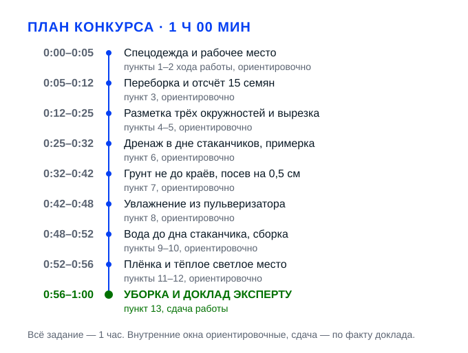
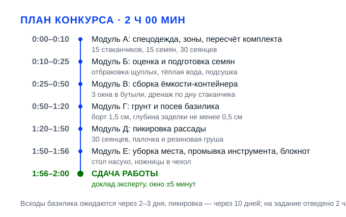
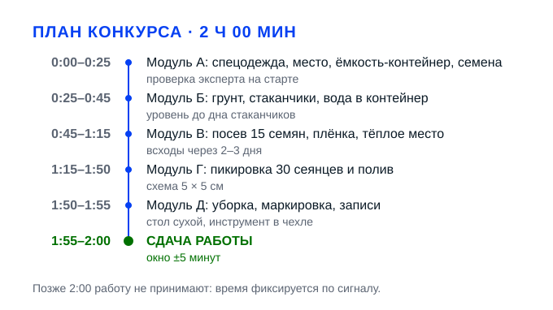

Помощник овощевода (ФВ)
Задания ниже — официальные файлы «Абилимпикс» (источник: abilympics-russia.ru), разложенные по категориям. Решения написаны по тексту задания, регламенту и критериям оценки; в них указано, что именно проверяет эксперт.
Школьник
14–16 лет, базовый уровень заданияВ официальном файле категории не разделены отдельными разделами — приводим задание целиком; различия по категориям смотрите в таблице модулей.
Пошаговое решение
Конкурсное задание для школьников по компетенции «Помощник овощевода» — одно и очень конкретное: за один час посеять семена базилика на рассаду в самодельный контейнер из пятилитровой бутыли. Работа идёт по тринадцати операциям, от надевания фартука и косынки-шапочки до уборки рабочего места и сообщения эксперту об окончании. Между ними нужно перебрать пятнадцать семян и отсчитать их, разметить маркером три окружности по одноразовому стаканчику, вырезать три отверстия, подрезать дно стаканчиков для дренажа, заполнить их грунтом не до краёв, посеять семена на глубину не менее половины сантиметра, увлажнить субстрат из пульверизатора отстоянной водой комнатной температуры, налить в бутыль воду до уровня дна стаканчика, вставить стаканчики, накрыть всё прозрачной плёнкой и поставить в тёплое и хорошо освещённое место. Оценивается не только результат, но и порядок действий: соблюдение последовательности, аккуратность с мелкими семенами и чистый стол в конце. Час короткий, поэтому разметка и рез должны идти спокойно, а всё остальное — без суеты.

Задача 1. Организовать рабочее место и надеть спецодеждуПункты 1–2 хода работы · всё задание 1 час
Первые минуты конкурса уходят не на растение, а на себя и на стол. Нужно надеть фартук, косынку-шапочку и перчатки, освободить и протереть рабочую поверхность, разложить садовый коврик, инструмент и материалы так, чтобы каждый предмет брался одной рукой и не мешал соседнему. Затем весь набор сверяется с перечнем: семена базилика пятнадцать штук, пятилитровая бутыль с крышкой, стаканчики около ста миллилитров, полиэтиленовая плёнка, маркер, ножницы, грунт для рассады, совок-стакан, пульверизатор, вода комнатной температуры. Порядок на столе в этой компетенции не украшение, а условие работы: на площади три метра на метр девяносто с проходом полтора метра каждое лишнее движение стоит секунд, а до сдачи всего час.
Действие 1.1. Надеть спецодежду
Шаг 1.1.1
Надеваем фартук поверх повседневной одежды и завязываем сначала пояс, потом завязки на шее: так он держится на бёдрах и не сползает, когда вы наклоняетесь над столом. Свободные концы завязок подворачиваем или затягиваем коротким узлом, чтобы они не свисали в грунт и не цеплялись за край бутыли. Если фартук длиннее вашего роста, подворачиваем нижний край один раз и прижимаем его к поясу.
Спецодежда — первый пункт перечня хода работы, и эксперт отмечает её до старта, а потом смотрит, остаётся ли она опрятной до сдачи. Грунт для рассады мелкий и пыльный: без фартука он оказывается на одежде, а с рукавов и колен потом попадает на стол и в стаканчики. Завязанный пояс ещё и фиксирует фартук при наклонах, а наклонов за час будет много.
Проверьте себя на ощупь и перед зеркалом, если оно есть у площадки: фартук закрывает грудь и бёдра, завязки не болтаются ниже пояса, нижний край не лежит на полу. Поднимите руки вверх и наклонитесь к столу — ткань не должна тянуть за шею и открывать одежду под ней.
Частая ошибка — накинуть фартук на шею и забыть про пояс: при первом наклоне он съезжает вперёд и смахивает стаканчики. Вторая — оставить длинные концы завязок: они попадают в зону, где работают ножницами, и одно неверное движение тянет фартук вместе с бутылью.
Эксперт осматривает участника до старта, в первые три-четыре минуты, и дальше краем глаза следит за опрятностью фартука на протяжении всей работы. Дальше он следит за опрятностью фартука уже по ходу работы, не подходя к участнику.
Шаг 1.1.2
Повязываем косынку-шапочку так, чтобы она закрывала волосы полностью: надо лбом, над ушами и на затылке. Длинные волосы сначала собираем в хвост или пучок, потом убираем под ткань, а выбившиеся пряди подкалываем или подтыкаем под край. Узел завязываем сзади и повыше, чтобы он не давил, когда вы наклоняете голову над столом. Кончик косынки прячем под ткань, чтобы он не свисал на глаза.
Волос на рабочем месте — это посторонний предмет в субстрате, и в перечне хода работы спецодежда указана целиком: фартук, косынка-шапочка, перчатки. Грунт, который вы насыпаете, придётся потом поливать и накрывать, поэтому всё, что попало в стаканчик, останется там до всходов. Кроме того, шапочка придерживает волосы, когда вы смотрите на разметку сверху вниз.
Пройтись ладонью по голове от лба к затылку: ни одна прядь не должна оказаться под пальцами. Посмотрите на себя сбоку в тёмное окно или попросите волонтёра проверить затылок — именно там чаще всего остаётся открытая зона.
Косынка, повязанная как ободок на макушке, оставляет затылок открытым: спереди всё аккуратно, а сзади волосы выбиваются и падают в грунт. Вторая ошибка — сдвинуть шапочку на лоб, чтобы она не мешала смотреть: тогда она сползает на глаза при каждом наклоне.
Эксперт фиксирует полноту комплекта спецодежды при осмотре до старта и отдельно отмечает, поправляет ли участник шапочку грязными руками в процессе. Отдельно фиксирует, поправляет ли участник шапочку чистыми руками или уже испачканными в грунте.
Шаг 1.1.3
Надеваем перчатки: сначала расправляем их от пальцев к манжете, потом натягиваем до запястья так, чтобы манжета закрывала край рукава. Если перчатки велики, подворачиваем манжету внутрь на сантиметр — она перестанет сползать, но не будет давить на запястье. Работать в перчатках придётся и с грунтом, и с водой, поэтому сразу проверяем, что пальцы слушаются.
Перчатки входят в тот же пункт спецодежды, что фартук и шапочка, и без них руки после грунта придётся отмывать, а каждая отлучка к раковине — это минуты из часа. Грунт для рассады часто содержит удобрения и мелкую фракцию, которая забивается под ногти. Плюс в перчатках вы не оставите на чёрной бутыли и белых стаканчиках отпечатков, по которым эксперт видит небрежность.
Сожмите и разожмите кулак, пошевелите каждым пальцем по очереди: перчатка не должна натягиваться на ладони и не должна болтаться на пальцах. Манжета сидит на запястье и закрывает рукав, кончики пальцев доходят до конца.
Слишком большие перчатки — самая частая ошибка: в них не нащупать мелкое семя базилика и не удержать ножницы. Вторая — снять перчатки на середине работы, потому что «так быстрее»: руки пачкаются, и дальше вы либо работаете грязными, либо тратите время на мытьё.
Наблюдает за тем, остаются ли перчатки на руках до конца модуля, и отмечает случаи, когда участник работает голыми руками с грунтом. Отмечает и тот момент, когда перчатки снимают: до сдачи работы или уже после неё.
Шаг 1.1.4
Перед стартом проходим по себе сверху вниз: волосы убраны, шапочка на месте, фартук застёгнут и завязан, перчатки расправлены, на руках нет часов, браслетов и колец, ногти коротко подстрижены. Рукава, если они длинные, подворачиваем выше локтя — иначе манжета окажется в грунте при первом же заполнении стаканчика. Обувь закрытая, шнурки завязаны и убраны.
Украшения и часы цепляются за плёнку и край бутыли, а кольцо с камнем может остаться в стаканчике с субстратом — такой предмет потом найдёт эксперт при осмотре работы. Свободный рукав загребает грунт и разносит его по столу, а незавязанные шнурки на мокром полу площадки это уже вопрос безопасности, который в задании вынесен в отдельный раздел охраны труда.
Осмотрите руки: кожи между пальцами не видно из-под перчатки, украшений нет. Наклонитесь и посмотрите на обувь: шнурки завязаны, подошва сухая. Рукава не спускаются ниже локтя. Кольца и часы проверяются на обеих руках, а не только на рабочей.
Оставить кольцо или часы «они не мешают» — на этой категории проверяют на входе, и объяснение «я привык» не принимается. Вторая ошибка — закатать рукава небрежно, комом: такой валик цепляется за всё на столе и опрокидывает стаканчик.
Эксперт проходит по рабочим местам до старта и оценивает участника целиком: комплект, аккуратность, отсутствие украшений. Это самые быстрые баллы задания, и терять их обидно. Кольца, часы и открытые рукава он видит сразу, ещё до того, как участник возьмёт первый предмет.
Действие 1.2. Подготовить рабочую поверхность
Шаг 1.2.1
Освобождаем стол: убираем всё, что не входит в перечень, вытираем поверхность влажной, а потом сухой тканью, чтобы на ней не осталось пыли и капель. Садовый коврик расстилаем перед собой, отступив от переднего края стола ладонь: тогда он не свисает, и обрезки бутыли остаются на нём, а не на полу. Коврик разглаживаем от центра к краям, чтобы под ним не осталось складок.
Коврик — это ваша зона сбора мусора: обрезки пластика, комочки грунта, шелуха от семян остаются на нём и не разлетаются по площадке. Чистая поверхность нужна и потому, что эксперт осматривает рабочее место и в начале, и в конце: следы грунта на столе до начала работы читаются как неподготовленность. Разглаженный коврик не сдвигается, когда вы на нём режете.
Стол пустой, сухой, без крошек и капель. Коврик лежит ровно, его передний край не свисает со стола, складок нет. Проведите ладонью по коврику — она должна остаться чистой. Отдельно посмотрите на пол под столом: там не должно быть ни грунта, ни капель воды.
Разложить коврик так, что половина свисает со стола: при первом же разрезе он поедет, а обрезки упадут на пол. Вторая ошибка — начать раскладывать материалы на непротёртом столе: пыль смешается с грунтом, и потом её видно на белых стаканчиках.
Эксперт отмечает организацию рабочего места в начале работы: пустой стол, ровный коврик, отсутствие лишних предметов. Ему важно, чтобы стол был свободен от лишних вещей: пакетов, телефона, бутылок с питьём.
Шаг 1.2.2
Раскладываем инструмент по сторонам, привычным для вашей руки: ножницы или канцелярский нож справа, если вы правша, маркер рядом с ними, совок-стакан и пульверизатор чуть дальше, чтобы не задевать их локтем. Ножницы кладём закрытыми, кольцами к себе, а не остриём к краю стола. Всё остальное — грунт, плёнка, стаканчики, бутыль — ставим выше по столу, за линию инструмента.
Порядок задаёт скорость: за час нужно сделать тринадцать операций, и если маркер лежит под пакетом с грунтом, на каждый поиск уходит по десять-пятнадцать секунд, а в сумме это несколько минут. Ножницы, положенные остриём к краю, легко смахнуть локтем — отсюда и порезы, о которых предупреждает раздел охраны труда. Закрытые ножницы кольцами к себе берутся одним движением, без перехвата.
Проверьте, что каждый предмет берётся без перемещения других: протяните руку к маркеру, к ножницам, к совку — ничего не должно опрокидываться. Острые кромки не выступают за коврик, ручки не свисают со стола.
Сложить всё в кучу в центре: работать приходится вокруг неё, локоть задевает пульверизатор, и он падает. Вторая ошибка — держать ножницы в кармане фартука, что прямо запрещено требованиями безопасности: переносить их можно только закрытыми и кольцами вперёд.
Эксперт смотрит, лежит ли инструмент безопасно и хватает ли участник его без поиска. Это видно уже в первые минуты. Проверяет он и то, тянется ли участник за инструментом не глядя или каждый раз ищет его глазами.
Шаг 1.2.3
Проверяем условия рабочего места: свет падает на коврик и не оставляет тени от руки, стол стоит устойчиво, проход рядом свободен, на полу нет воды. Если стол качается, подкладываем под ножку сложенную бумагу и проверяем снова. Лампу или настольный светильник, если он есть, направляем так, чтобы тень от вашей головы не падала на разметку. Светильник, если он на стойке, подтягиваем к рабочей зоне.
Разметку на чёрной бутыли видно только при хорошем свете, а требования к рабочим местам в задании говорят об освещённости не менее трёхсот люкс. Свободный проход шириной полтора метра — это не формальность: по нему ходят другие участники и эксперты, и загромождённый проход считается нарушением. Устойчивый стол нужен, потому что при вырезании отверстий вы давите на бутыль.
Положите на коврик лист бумаги и посмотрите, есть ли на нём тень от руки: при вашей рабочей позе тени быть не должно. Покачайте стол — он не шатается. Проход рядом свободен на ширину шага. Проверьте и то, что свет не бьёт в глаза: блик на пластике мешает видеть линию разметки.
Работать в собственной тени: линия разметки сливается, и окружность получается кривой. Вторая ошибка — поставить сумку или рюкзак в проход «чтобы не мешали»: по требованиям безопасности проходы и пути эвакуации загромождать нельзя.
Эксперт проверяет рабочее место на соответствие требованиям охраны труда и отмечает, свободен ли подход к столу. Замеров он не делает, но тень на рабочей поверхности и свободный проход отмечает в листе.
Шаг 1.2.4
Готовим воду: наливаем отстоянную воду комнатной температуры в пульверизатор и в лейку, проверяем, что она не холодная на ощупь. Заправляем пульверизатор не до самого края, оставляя воздух под крышкой, затем дважды качаем рычагом в сторону, чтобы проверить факел распыла. Мокрые капли на коврике сразу вытираем. Крышку закручиваем до упора, иначе при нажатии вода пойдёт по резьбе.
В перечне материалов вода указана дважды — для полива и в пульверизаторе, и оба раза с оговоркой про комнатную температуру. Холодная вода тормозит набухание семян и охлаждает субстрат, а горячая может повредить зародыш. Пробный качающий насос нужен, чтобы не облить грунт струёй в первый раз, когда вы нажмёте на курок над стаканчиком.
Нажмите на курок в сторону от стола: должен идти туман, а не струя. Вода в ёмкости на ощупь не холоднее комнаты. На коврике и на столе после проверки сухо. После пробы вытрите насадку насухо, чтобы первая капля не упала на грунт раньше времени.
Заправить пульверизатор ледяной водой из-под крана: субстрат охлаждается, всходы задерживаются. Вторая ошибка — не проверить факел и первым же нажатием выбить семена из лунки струёй. Проверка занимает полминуты и избавляет от обоих рисков.
Эксперт смотрит, проверяет ли участник инструмент до работы или обнаруживает неисправность уже над посевом. Ему достаточно увидеть, как участник держит пульверизатор при первой пробе, чтобы понять подготовку.
Действие 1.3. Принять и проверить материалы по перечню
Шаг 1.3.1
Берём перечень оборудования и идём по нему сверху вниз, называя вслух каждый предмет: семена базилика пятнадцать штук, пятилитровая бутыль с крышкой, стаканчики около ста миллилитров пятнадцать штук, полиэтиленовая плёнка, маркер, ножницы или канцелярский нож, грунт для рассады, совок-стакан, пульверизатор, лейка, садовый коврик. Отмечаем маркером на коврике или загибаем угол списка то, что уже проверили, и отдельно запоминаем, чего не хватает.
Приёмка — единственный момент, когда недостающее ещё можно получить: после старта замена идёт только через эксперта и только при уважительной причине. Перечень в задании составлен на одного участника, поэтому расхождение почти всегда означает ошибку комплектации, а не то, что «так задумано». Спокойный проход по списку занимает две-три минуты и снимает половину аварийных ситуаций.
Все строки перечня отмечены, расхождения названы точно: чего нет, сколько нет, в каком виде. Если сомневаетесь в количестве стаканчиков или семян — пересчитайте сразу, а не в момент, когда они понадобятся.
Начать работу, не сверив набор: в середине выясняется, что нет совка или маркера, и приходится импровизировать. Вторая ошибка — увидеть, что стаканчиков меньше пятнадцати, и промолчать, рассчитывая обойтись.
Эксперт наблюдает, работает ли участник по перечню или действует наугад, и фиксирует обращения по комплектации. В листе он отмечает, названы ли расхождения по количеству до старта или обнаружены уже в работе.
Шаг 1.3.2
Осматриваем бутыль и стаканчики: бутыль целая, без трещин и вмятин на боковой поверхности, крышка навинчивается и держит, горловина не разбита. Стаканчики проверяем по одному — дно целое, кромка ровная, объём около ста миллилитров, стенки не смяты. Мятые и треснувшие откладываем в сторону, а не выбрасываем: они пригодятся как запасные. Каждый стаканчик переворачиваем и смотрим на дно при свете.
Разметку и вырезание отверстий делают именно на этом пластике, и трещина по стенке разойдётся при первом же нажатии ножницами — вся конструкция потеряет герметичность, а вода из неё уйдёт на стол. Объём стаканчика важен: по нему обводят окружности, и если стаканчики разные, отверстия получатся разного размера. Крышка нужна, чтобы вода не испарялась и конструкция стояла устойчиво.
Проведите пальцем по кромке стаканчика — она не режет и не имеет заусенцев. Налейте в один стаканчик воду до половины: он не протекает по шву. Бутыль ставится на стол и не качается. Поставьте стаканчик на стол и нажмите на дно пальцем: оно не должно прогибаться.
Взять первую попавшуюся бутыль, не посмотрев на дно: на нём бывает трещина от падения, и вода уходит на стол уже после того, как вы посеяли. Вторая ошибка — перемешать стаканчики разных размеров, тогда окружности на бутыли получатся разными.
Эксперт отмечает, проверяет ли участник тару до работы: дефект, замеченный заранее, — это плюс, дефект, обнаруженный на середине, — потерянное время. Проверяет он и то, отложены ли дефектные стаканчики в сторону или пущены в работу наравне с целыми.
Шаг 1.3.3
Открываем пакет с грунтом и оцениваем его: цвет однородный, тёмный, без белого налёта плесени, без кислого и гнилостного запаха. Сжимаем горсть в кулаке: комок должен держаться, но вода из него не течёт, а после разжатия грунт рассыпается. Если грунт пересушен и пылит, его увлажняют из пульверизатора прямо в пакете, перемешивают рукой в перчатке и дают постоять пару минут.
Грунт для рассады — основа всей работы: в слишком сухом субстрате семена не набухнут, в переувлажнённом — загниют, а плесень в пакете означает, что и в стаканчике она разовьётся под плёнкой. Проверка влажности в кулаке занимает секунды, но именно она отличает работу овощевода от механического заполнения тары. Кислый запах — признак закисшего грунта, такой материал лучше заменить до старта.
Комок после сжатия держит форму и не выделяет воду, в пакете нет белых пятен и посторонних включений, запах земли обычный. Грунт не пылит при пересыпании. Проверьте ещё и температуру грунта: он должен быть комнатным, а не холодным с улицы.
Сеять в пылящий сухой грунт: вода уходит в него как в песок, семена остаются сухими. Вторая ошибка — залить грунт в пакете так, что он превращается в грязь: в таком субстрате семена задыхаются. В обоих случаях всходов не будет, а причина обнаружится слишком поздно.
Эксперт обращает внимание на то, проверяет ли участник качество грунта и умеет ли определить его влажность рукой. Ему важно услышать, по каким признакам участник оценивает грунт: цвет, запах, влажность на сжатие.
Задача 2. Подготовить семена базилика к посевуПункт 3 хода работы · 15 семян на участника
Семена базилика мелкие, тёмные и легко слипаются, поэтому подготовка идёт руками: перебрать, убрать пустые и повреждённые, отсчитать рабочее количество и держать его в закрытой таре до самого посева. В перечне оборудования на одного участника стоит пятнадцать штук — это и есть ваша норма, из которой половина уйдёт на всходы, а половина может не взойти. Работа занимает немного времени, но именно здесь закладывается густота будущих сеянцев, а значит и то, что эксперт увидит в контейнере при сдаче.
Действие 2.1. Оценить посадочный материал по внешним признакам
Шаг 2.1.1
Высыпаем семена из пакета на белую салфетку или на светлую ладонь в перчатке — на тёмном фоне мелкие семена базилика не видны. Рассматриваем при хорошем свете: цвет должен быть тёмно-коричневым или почти чёрным, поверхность матовой, форма овальной, размер примерно одинаковый у всех. Салфетку кладём на коврик, а не на голый стол, чтобы семена не скатились в щель.
Отбор по внешним признакам — прямо названная обязанность помощника овощевода: в задании сказано, что он даёт экспертную оценку качества посадочного материала. Белый фон нужен потому, что на чёрной бутыли и на грунте вы эти семена просто не увидите, а потеря одного семени из пятнадцати уже заметна. Ровный цвет и матовость говорят о том, что семена хранились правильно и не отсырели.
На салфетке видны отдельные семена, а не сплошная масса: если они слиплись в комок, значит, отсырели. Цвет однородный, посторонних светлых и зеленоватых крупинок мало. Все семена примерно одного размера.
Высыпать семена на стол без подложки: часть скатывается и теряется, а часть остаётся на пальцах. Вторая ошибка — рассматривать материал в тени: тогда дефектные семена не отличить от нормальных. На светлой салфетке любая потеря видна сразу, на тёмном столе — нет.
Эксперт подходит и смотрит, как участник обращается с посадочным материалом: перебирает или сразу сеет всё подряд. Смотрит он и на подложку: на чём разложены семена и не смешались ли они с мусором.
Шаг 2.1.2
Отбраковываем то, что не даст всходов: плоские и щуплые семена, с трещиной или тёмным пятном, слипшиеся в комочки, покрытые белым или серым налётом, а также посторонние примеси — кусочки листьев, песчинки, обломки стеблей. Отбракованное сдвигаем на край салфетки, а не смахиваем на пол. Если плесенью поражена заметная часть, об этом надо сразу сказать эксперту и попросить замену.
Пустое или повреждённое семя не взойдёт, но место в стаканчике займёт и создаст видимость выполненной работы: при осмотре будет видно, что всходов меньше, чем посеянных семян. Плесень на семенах под плёнкой развивается особенно быстро, потому что влажность под укрытием близка к ста процентам. Посторонние примеси, оставленные в материале, потом принимают за мусор в субстрате.
Отбракованная часть лежит отдельно и её видно. Среди оставшихся нет семян с налётом и трещинами. Если брак больше трети, вы уже сообщили об этом эксперту и получили ответ. Отдельно убедитесь, что в годной части не осталось семян, слипшихся попарно.
Смести брак обратно в общую кучку «всё равно взойдёт»: под плёнкой такое семя становится источником плесени для соседних. Вторая ошибка — молча выбросить поражённые семена: замену не дадут, и рабочих семян останется меньше пятнадцати.
Эксперт смотрит на отбраковку как на профессиональный навык: умеет ли участник отличить годное семя от негодного и не боится ли убрать лишнее. Проверяет он и то, отделён ли брак от годного материала или всё лежит одной кучей.
Шаг 2.1.3
Сравниваем оставшиеся семена между собой: они должны быть примерно одного размера и веса. Лёгкое семя проверяем на ощупь — оно кажется полым и легко прилипает к пальцу. Полновесные оставляем на салфетке, а сомнительные складываем к отбракованным, чтобы не смешивать. Заодно проверяем, не осталось ли на салфетке семян другого вида — в наборе должен быть только базилик.
Разнокалиберные семена всходят в разные сроки, и в одном стаканчике окажутся и крепкие сеянцы, и едва проклюнувшиеся: оценивать такую работу сложнее, а выглядит она неровно. Сортировка по весу — приём, который овощевод применяет постоянно, потому что крупное семя несёт больше запаса питательных веществ. Чужое семя в наборе — почти всегда ошибка комплектации, о ней лучше сказать сразу.
Оставшаяся кучка однородна: нет семян заметно мельче остальных, нет семян другого цвета и формы. Отбракованные лежат отдельно. Салфетка чистая, без песка и растительных остатков. Разложите семена в один ряд: так видно, одинаковы ли они по размеру.
Сортировать «на глаз» на тёмном фоне и оставить мелочь в общей массе: она всё равно не взойдёт, но займёт место. Вторая ошибка — не заметить, что в пакете смешаны семена двух видов, и посеять их вместе.
Эксперт оценивает аккуратность отбора и то, насколько однороден подготовленный материал. Ему важно, чтобы участник мог объяснить, почему одно семя оставлено, а другое отложено.
Действие 2.2. Отсчитать рабочее количество семян
Шаг 2.2.1
Отсчитываем пятнадцать семян — ровно столько указано в перечне оборудования на одного участника. Считаем, отодвигая каждое семя кончиком пальца в перчатке на отдельную сторону салфетки, и называем число вслух: так не сбиваешься. Если семян в пакете больше, лишние не выбрасываем, а оставляем в пакете на случай, если что-то понадобится заменить при посеве.
Норма в пятнадцать штук не случайна: при посеве по пять семян в три стаканчика получается ровно по норме на каждый, и эксперт при осмотре видит ожидаемую густоту. Если посеять все семена из пакета, всходы загустятся, и сеянцы начнут вытягиваться и конкурировать за свет. Оставленный запас — это ваша страховка: одно семя можно потерять, и работа не станет хуже.
На салфетке отдельно лежат ровно пятнадцать семян, и вы можете пересчитать их повторно, не сбившись. В пакете остался запас, пакет закрыт или подвёрнут. Проверьте, что семена лежат так, что каждое можно взять, не сдвигая соседние.
Сеять «примерно столько» и не считать: в одном стаканчике окажется два семени, в другом восемь. Вторая ошибка — высыпать весь пакет, потому что «пусть взойдёт больше»: загущённые всходы в конкурсной работе выглядят хуже редких и ровных.
Эксперт при осмотре контейнера считает всходы и сравнивает их с нормой посева. Пересчёт виден сразу. Ему важно, названо ли число вслух и совпадает ли оно с перечнем оборудования.
Шаг 2.2.2
Раскладываем отсчитанные семена по одному на салфетке в один ряд, с промежутком в сантиметр: так видно, что они не слиплись, и удобно брать по одному при посеве. Рядом ставим стаканчики и мысленно распределяем, какие семена в какой пойдут — по пять штук на стаканчик. Если салфетка влажная от рук, меняем её на сухую. Салфетку с семенами отодвигаем к дальнему краю коврика.
Слипшиеся семена при посеве уходят в лунку парой, и потом приходится прореживать всходы, а на этой категории прореживание не предусмотрено. Разложенные по одному семена берутся кончиком пальца или пинцетом за секунду, без поиска. Сухая салфетка нужна потому, что на влажной семена набухают неравномерно и начинают прорастать раньше времени, ещё до контакта с грунтом.
Семена лежат отдельными крупинками, между ними есть промежутки, слипшихся комочков нет. Салфетка сухая. Ряд из пятнадцати семян виден целиком. Убедитесь, что салфетка лежит на коврике, а не свисает с края стола.
Оставить семена кучкой в центре салфетки: при переносе к стаканчику вы захватите сразу три-четыре. Вторая ошибка — разложить их на мокрой салфетке и уйти к разметке бутыли: вернувшись, вы увидите наклюнувшиеся семена, которые уже нельзя сеять ровно.
Эксперт следит за тем, насколько организованно идёт работа с мелким материалом. Смотрит он и на то, где лежат семена в момент работы с бутылью: на коврике или в закрытой таре.
Действие 2.3. Подготовить семена к посеву вручную
Шаг 2.3.1
Разминаем слипшиеся семена сухими пальцами в перчатке, растирая их о салфетку легкими движениями, пока комочек не рассыплется на отдельные крупинки. Шелуху и мелкую пыль сдуваем в сторону, а не на пол, и убираем с салфетки. Если семена выглядят сухими и твердыми, это нормально: базилик сеют сухими семенами, и набухание происходит уже в грунте. Салфетку после растирания меняем на чистую.
Слипшийся комок в лунке даст скученный всход, а при растирании видно, целые ли семена внутри: иногда слипание происходит из-за выделившейся слизи, и такие семена уже начали портиться. Удаление шелухи важно потому, что она под плёнкой плесневеет быстрее семян. Сухие семена — это норма для данной культуры, и попытка их размочить без указания эксперта только добавит риска.
Комочков не осталось, каждое семя отдельное и сухое на вид. На салфетке нет шелухи и пыли. Семена не прилипают к пальцу при касании. Посмотрите на салфетку с наклоном: при боковом свете видно, остались ли мелкие комочки.
Тереть семена с усилием, чтобы «размять оболочку»: повреждается зародыш, и такое семя не взойдёт. Вторая ошибка — сдуть шелуху прямо на соседнее рабочее место, где уже разложен грунт. Оболочка семени тонкая, и след от ногтя на ней уже повреждение.
Эксперт смотрит на деликатность работы с семенами: сила здесь не нужна, нужна аккуратность. Ему важно видеть, что участник не давит на семена, а работает пальцами без усилия.
Шаг 2.3.2
Уточняем у эксперта, требуется ли по заданию замачивание или обработка семян: в перечне материалов на одного участника есть только вода комнатной температуры, поэтому по умолчанию сеем сухими семенами. Если эксперт подтверждает замачивание, наливаем воду в крышку, ставим семена на пятнадцать-двадцать минут и обязательно подписываем крышку маркером, чтобы не перепутать с водой для полива. После замачивания семена сразу идут в грунт, не подсушиваясь.
В перечне оборудования на школьников нет ни марганцовки, ни стимуляторов, ни салфеток для проращивания — значит, по заданию подготовка ограничивается переборкой и отсчётом. Самовольное замачивание в чужой посуде может привести к тому, что семена набухнут и слипнутся, а времени на их посев не останется. Уточняющий вопрос занимает полминуты и снимает риск сделать лишнюю операцию, которой нет в задании.
Вы точно знаете, сеете сухими или замоченными, и решение принято не вами единолично. Если замачивание было, крышка подписана, время зафиксировано, семена не лежат в воде дольше двадцати минут. Если замачивание было, сверьте время по часам, а не на глаз.
Самовольно замочить семена «для быстрых всходов» в стакане с водой для полива: часть семян останется на дне, часть слипнется, отобрать пятнадцать штук обратно уже не получится. Вторая ошибка — замачивать в холодной воде и держать семена в ней полчаса.
Эксперт отмечает, задаёт ли участник уточняющие вопросы по технологии и следует ли именно тому заданию, которое выдано. Засчитывается и сам вопрос эксперту: он показывает, что участник читал задание и видит границы технологии.
Шаг 2.3.3
До посева семена держим в закрытой таре рядом с рабочим местом, но вне зоны резки и вне зоны, куда сыплется грунт. Перед тем как взять семена для посева, проверяем, что руки в перчатках чистые и сухие, а на коврике нет обрезков пластика. Открываем тару только в момент, когда стаканчики с грунтом уже готовы и лунки сделаны. Руки вытираем насухо, потому что мокрый палец тянет семя за собой.
Семена — самый уязвимый материал во всём наборе: их пятнадцать, и каждая потеря сокращает будущие всходы. Открытая тара на столе, где режут пластик, означает, что стружка попадёт между семенами, а отобрать её оттуда уже невозможно. Последовательность «сначала грунт и лунки, потом семена» экономит время: открытая тара не стоит на столе лишние десять минут.
Тара закрыта, семена не смешались с грунтом и стружкой, руки сухие. В момент посева семена берутся по одному и сразу уходят в лунку. Проверьте, что тара стоит на расстоянии ладони от линии реза. Тара должна стоять так, чтобы её не задел локоть при работе ножницами.
Открыть пакет с семенами в начале работы и оставить его на коврике: пока вы режете бутыль, внутрь попадают пластиковая стружка и пыль грунта. Вторая ошибка — брать семена мокрыми пальцами: они прилипают к перчатке и не сбрасываются в лунку.
Эксперт смотрит на порядок на столе в момент посева: где лежит открытая тара и чистые ли руки. Ему важно, чтобы тара с семенами стояла вне зоны резки и не мешала движению рук с ножницами.
Задача 3. Изготовить контейнер для проращивания из бутылиПункты 4–6 хода работы · три отверстия и дренаж
Из пятилитровой бутыли с крышкой делается ёмкость-контейнер: на боковой поверхности размечаются маркером три окружности по одноразовому стаканчику, вырезаются три отверстия, у стаканчиков подрезается дно для дренажа, каждое отверстие примеряется по своему стаканчику и на бутыли ставится метка уровня воды. Задача заканчивается на пустой заготовке контейнера: вода и стаканчики идут позже, после посева, потому что так задана последовательность работы. Здесь больше всего работы руками и больше всего риска испортить единственную бутыль, поэтому разметка и рез идут медленно и с проверкой после каждого движения.
Действие 3.1. Разметить три окружности по стаканчику
Шаг 3.1.1
Кладём бутыль на коврик горизонтально, горловиной в одну сторону, дном в другую, и придерживаем коленом или рукой, чтобы она не катилась. Ставим бутыль так, чтобы разметка шла по ровной части стенки, а не по сужению к горловине. Прикладываем стаканчик к стенке боком и смотрим, где его кромка ложится на пластик без перекоса: отверстие должно быть круглым, а не овальным.
Разметка определяет всё остальное: если окружность ляжет на сужение, стаканчик встанет с наклоном и не будет касаться воды. Ровная часть стенки — единственная зона, где пластик держит форму и не деформируется при вырезании. Горизонтальное положение бутыли нужно потому, что на весу обводить кромку невозможно: рука дрожит, и линия получается волнистой.
Бутыль лежит устойчиво и не катится при легком толчке. Кромка стаканчика прилегает к стенке всей окружностью, без зазора с одной стороны. Место разметки находится на ровной части, не на плечиках бутыли.
Размечать на весу, держа бутыль на коленях: линия уходит в сторону, и вырезанное отверстие получается с перекосом. Вторая ошибка — приложить стаканчик к сужению у горловины: там диаметр меньше, и стаканчик провалится внутрь.
Эксперт смотрит на разметку до вырезания: ровные окружности в один ряд — признак того, что участник понимает геометрию конструкции. Ему важно видеть, что участник придерживает бутыль, а не ловит её коленом в момент обводки.
Шаг 3.1.2
Обводим кромку стаканчика маркером, держа его строго вертикально к поверхности, одной непрерывной линией. Начинаем с верхней точки, ведём по кругу, прижимая стаканчик второй рукой, и замыкаем линию точно в начале. Первое отверстие делаем ближе к дну бутыли, второе — в середине, третье — ближе к горловине, с промежутком не меньше двух сантиметров между окружностями.
Вертикальный маркер даёт линию точно по кромке, а наклонённый смещает её на несколько миллиметров, и стаканчик потом садится с зазором. Промежуток между окружностями нужен, чтобы пластик между отверстиями не прорвался при вырезании и конструкция не потеряла жёсткость. Три отверстия в один ряд позволяют всем стаканчикам стоять на одном уровне воды.
Линии замкнуты, толщина одинаковая, окружности не пересекаются и не касаются друг друга. Между ними остаётся полоса пластика шириной около двух сантиметров. Маркер не стёрся от прикосновения пальца. Проверьте толщину линии: она должна быть одинаковой по всей окружности.
Обводить кромку с нажимом, продавливая пластик: по продавленной линии бутыль трескается при вырезании. Вторая ошибка — поставить окружности вплотную: перемычка рвётся, и два отверстия превращаются в одно вытянутое.
Эксперт проверяет разметку визуально и отмечает, аккуратна ли линия и выдержаны ли промежутки. Смотрит он и на маркер: держат ли его вертикально или кладут плашмя на пластик.
Шаг 3.1.3
Отходим на шаг и смотрим на разметку целиком: три окружности должны стоять на одной линии, на одинаковой высоте от стола, если бутыль положить, и не заходить на дно и на плечики. Проверяем маркером на просвет — приложите стаканчик к каждой окружности по очереди и убедитесь, что он совпадает с линией. Если одна окружность вышла ниже остальных, сотрите её влажной салфеткой и обведите заново, пока пластик целый.
Симметрия нужна не для красоты: при разном уровне отверстий стаканчики окажутся на разной высоте над водой, и один будет переувлажнён, а другой останется сухим. Проверка стаканчиком по каждой окружности занимает полминуты, а исправлять разметку после вырезания уже нельзя. Стереть маркер с гладкого пластика легко, поэтому лучше переделать сейчас.
Все три окружности совпадают со стаканчиком при прикладывании, стоят на одном уровне, не заходят на изгибы. Между ними равные промежутки. Линия видна целиком, без разрывов. Отойдите на шаг и посмотрите на разметку целиком: все три окружности на одной линии.
Сразу хвататься за ножницы, не проверив разметку: одна окружность смещена, и после вырезания стаканчик в ней висит выше остальных. Вторая ошибка — исправлять разметку, обводя поверх старой линии: получается двойной контур, и резать приходится по двум.
Эксперт подходит к этому моменту, потому что именно здесь видно, проверяет ли участник свою работу или спешит. Ему важно, проверена ли разметка до первого реза: после него исправлять уже нечего.
Действие 3.2. Вырезать три отверстия
Шаг 3.2.1
Берём ножницы и начинаем рез не по линии, а рядом с ней, внутри будущего отверстия: прокалываем пластик коротким движением, отведя вторую руку с бутылью в сторону от линии реза. Затем от прокола ведём рез к линии и дальше по контуру. Ножницы держим так, чтобы лезвия шли вдоль стенки, а не входили в бутыль под углом. Бутыль при этом лежит на коврике, а не висит на весу.
Прокол рядом с линией, а не по ней, нужен потому, что при прокалывании пластик вокруг точки входа деформируется, и если проколоть на самой линии, кромка получится рваной и с трещиной. Рез вдоль стенки оставляет ровный край, который не режет пальцы и не цепляет стаканчик. Вторая рука отведена, чтобы не порезаться при соскальзывании ножниц.
Прокол сделан внутри окружности, бутыль не треснула, лезвия идут свободно. Кромка прокола неровная, но она окажется внутри вырезанного отверстия и уйдёт в отходы. Проверьте, что прокол сделан внутри окружности, а не на самой линии.
Проколоть пластик на весу, держа бутыль на коленях: ножницы соскальзывают, и можно поранить руку. Вторая ошибка — давить на ножницы изо всех сил: пластик трескается в сторону от прокола, и трещина идёт через всю бутыль.
Эксперт наблюдает за приёмами работы с режущим инструментом: положение рук, направление реза, безопасность. Ему важно, куда направлены лезвия и убрана ли вторая рука с линии реза.
Шаг 3.2.2
Вырезаем по намеченной линии короткими резами по одному-два сантиметра, поворачивая бутыль, а не ножницы. Доходим до линии и стараемся вести лезвие точно по следу маркера, не заходя внутрь окружности больше чем на миллиметр. Вырезанный кружок не выбрасываем на пол, а складываем на край коврика. Так проходим все три окружности. Ножницы держим одной рукой, второй только поворачиваем бутыль.
Короткие резы дают возможность вовремя остановиться и поправить направление, а длинный рез уводит лезвие в сторону, и окружность превращается в овал. Поворот бутыли вместо поворота ножниц сохраняет одинаковый угол реза по всему контуру. Обрезки на коврике — это порядок на рабочем месте, который оценивают в конце, а пластик на полу ещё и скользкий.
Отверстия получились круглыми, их диаметр совпадает с диаметром стаканчика. Кромка ровная, без глубоких надрывов и трещин. Три обрезка лежат на коврике. Убедитесь, что обрезки лежат на коврике, а не падают на пол.
Резать длинными движениями «чтобы быстрее»: лезвие уходит от линии, отверстие получается овальным, и стаканчик проваливается. Вторая ошибка — вырезать отверстие меньше нужного, а потом расширять его на глаз: кромка становится рваной и трескается.
Эксперт оценивает качество реза: ровная кромка без трещин говорит о контроле инструмента. Он отмечает и длину реза: короткие движения говорят о контроле, длинные — о спешке.
Шаг 3.2.3
Зачищаем кромку: снимаем ножницами заусенцы и острые выступы, проводим пальцем в перчатке по всему контуру и убираем всё, что цепляется. Проверяем отверстие стаканчиком — он должен входить с легким усилием и держаться в пластике, не проваливаясь внутрь. Если стаканчик проходит слишком свободно, вырезать заново не нужно: край подгибается наружу на несколько миллиметров и придерживает его.
Заусенцы на кромке — это порезы на пальцах и надрывы пластика, которые при вставке стаканчика растут. Плотная посадка важна потому, что стаканчик с грунтом и водой весит немало, и если он держится слабо, то под своей тяжестью просядет в бутыль. Подгибание края наружу — простой приём, который увеличивает опору без дополнительных материалов.
Палец скользит по кромке, ни за что не цепляясь. Стаканчик входит в отверстие с усилием и держится, если отпустить руку. Пластик вокруг отверстия не имеет побелевших трещин. Проверьте кромку при боковом свете: тонкие надрывы видны только под углом.
Оставить острые заусенцы: при вставке стаканчика вы порежете палец, а на кромке начнётся разрыв. Вторая ошибка — расширить отверстие «чтобы легче входило»: стаканчик проваливается в бутыль вместе с грунтом.
Эксперт проверяет посадку стаканчика рукой и смотрит на кромку отверстия. Проверяет он посадку рукой: держится ли стаканчик, если его отпустить. Проверяет он и палец: не осталось ли на коже следа от заусенца.
Действие 3.3. Подрезать дно стаканчиков для дренажа
Шаг 3.3.1
Переворачиваем стаканчик дном вверх и ножницами делаем по боковым сторонам дна три-четыре надреза длиной около пяти миллиметров, идущих от края дна к центру. Режем по ребрам, а не по плоской части, и не доводим надрез до середины дна. Так обрабатываем все три стаканчика, каждый раз проверяя, что ножницы идут от себя, а пальцы второй руки убраны с линии реза.
Дренаж нужен, чтобы вода поднималась в грунт капиллярно и чтобы лишняя влага не застаивалась: без надрезов вода в стаканчик не попадёт вовсе, и семена останутся сухими. Надрезы по бокам дна работают как фитиль, а надрезы по центру ослабляют дно, и оно проваливается под весом мокрого грунта. Пять миллиметров достаточно для прохода воды, но мало для высыпания грунта.
В каждом стаканчике три-четыре надреза, они сквозные и расположены по бокам дна. Дно держится, при нажатии пальцем не проваливается. Края надрезов ровные, без растянутого пластика. Проверьте все три стаканчика по очереди, не полагаясь на первый.
Надрезать дно крест-накрест через центр: дно теряет жёсткость, и стаканчик с мокрым грунтом проваливается в бутыль. Вторая ошибка — сделать надрезы слишком короткими, меньше двух миллиметров: вода не проходит, и грунт остаётся сухим.
Эксперт смотрит на дренаж как на ключевой элемент конструкции: без него вся работа теряет смысл. Ему важно, что надрезы идут по бокам дна, а не через центр: от этого зависит жёсткость.
Шаг 3.3.2
Проверяем проходимость надрезов: наливаем в один стаканчик немного воды и смотрим, как она уходит через дно. Вода должна просачиваться каплями или тонкими струйками по всем надрезам, а не стоять в стаканчике. Если вода не уходит, надрез расширяют на миллиметр и проверяют снова. Затем стаканчик вытирают насухо снаружи. Воду для проверки берём из лейки, понемногу, около столовой ложки.
Проверка водой занимает полминуты и показывает то, что нельзя увидеть глазом: надрез может быть сделан, но затянут растянутым пластиком. В конструкции вода поступает снизу, поэтому проходимость дна — единственное условие питания сеянцев. Сухая наружная поверхность нужна, чтобы грунт не прилипал к стенкам при заполнении.
Вода уходит из стаканчика за несколько секунд, на дне не остаётся лужицы. Надрезы пропускают воду все, а не один. Стаканчик снаружи сухой. Проверьте, что вода уходит именно через надрезы, а не по стенке.
Проверить дренаж «на глаз» и не заметить, что пластик затянул надрез: при сборке грунт останется сухим, а вы будете искать причину в поливе. Вторая ошибка — проверять дренаж, держа стаканчик над открытым пакетом с грунтом: вода попадает в грунт.
Эксперт обращает внимание на то, проверяет ли участник дренаж до сборки конструкции. Он смотрит, откуда льют воду при проверке: над ковриком или над открытым пакетом с грунтом.
Шаг 3.3.3
Ещё раз осматриваем все три стаканчика вместе: надрезы одинаковые, дно целое, кромка не надорвана, на стенках нет трещин. Ставим их на коврик вверх дном, чтобы внутрь не попал грунт и пыль, и до сборки конструкции не трогаем. Если один стаканчик повреждён сильнее остальных, берём запасной из комплекта. Стаканчики ставим на сухую часть коврика, подальше от обрезков.
Одинаковые надрезы обеспечивают одинаковый приток воды во все три стаканчика, иначе один будет переувлажнён, а другой сухой, и сравнивать всходы будет невозможно. Стаканчики вверх дном — простой способ не набрать в них пыли, пока вы размечаете и режете бутыль. Замена повреждённого стаканчика сейчас дешевле, чем переделка всей конструкции потом.
Три стаканчика лежат рядом, у всех одинаковое число надрезов и целое дно. Внутри стаканчиков нет грунта и мусора. Повреждённых нет или они заменены. Убедитесь, что стаканчики не соприкасаются и между ними проходит палец.
Оставить в работе надорванный стаканчик, рассчитывая, что он «и так держится»: при заполнении грунтом трещина разойдётся. Вторая ошибка — держать подготовленные стаканчики открытыми вверх, пока режете бутыль: внутрь набивается пластиковая стружка.
Эксперт осматривает подготовленные стаканчики и отмечает единообразие дренажа. Ему важно, чтобы все три стаканчика были одинаковыми: тогда и всходы можно сравнивать.
Действие 3.4. Примерить стаканчики и подготовить бутыль к сборке
Шаг 3.4.1
Ставим бутыль вертикально, дном на коврик, и проверяем, что она стоит устойчиво и не качается. Отмечаем маркером на стенке линию на высоте дна будущего стаканчика: вставляем один стаканчик в отверстие, прижимаем его и проводим короткую черту на бутыли точно напротив нижней кромки дна. Затем стаканчик вынимаем, а линию сохраняем как ориентир для воды.
В задании сказано налить воды до дна стаканчика, и это требование точное: если воды больше, она зальёт грунт снизу и семена загниют, если меньше — влага не дойдёт до дна и грунт останется сухим. Метка на стенке избавляет от необходимости угадывать уровень на глаз. Устойчивая бутыль нужна потому, что при наклоне вода переливается через край отверстия.
Метка стоит ровно напротив нижней кромки дна вставленного стаканчика. Бутыль не качается, её дно плотно стоит на коврике. Отверстия расположены выше метки. Проверьте метку на просвет: линия должна быть видна с обеих сторон бутыли.
Наливать воду «примерно до половины»: уровень оказывается выше дна стаканчика, и грунт превращается в болото. Вторая ошибка — не сделать метку и потом измерять уровень на глаз через мутный пластик. Метка к тому же нужна, чтобы не искать уровень повторно после посева.
Эксперт смотрит на уровень воды в конструкции при сдаче работы — это один из видимых признаков правильной сборки. Проверяет он и метку: стоит ли она напротив нижней кромки дна вставленного стаканчика.
Шаг 3.4.2
Примеряем каждый стаканчик в его отверстии: наклоняем стаканчик, вводим край дна в отверстие, доворачиваем и утапливаем до упора, чтобы кромка держала его за бортик. Смотрим, насколько глубоко он садится и не проваливается ли внутрь. Затем вынимаем стаканчик, а на бутыли короткой чертой маркера отмечаем, где оказалась нижняя кромка дна: это и есть линия, до которой потом нальётся вода.
Примерка до заполнения грунтом нужна потому, что пустой стаканчик входит и выходит легко, а с мокрым грунтом он тяжелее и требует другого усилия. Если выяснится, что отверстие мало, его расширяют ножницами сейчас, пока стаканчик пустой и сухой. Отмеченная линия уровня воды даёт точность: в задании сказано налить воды до дна стаканчика, а не «примерно», и перелив здесь приводит к загниванию семян.
Стаканчик входит в отверстие с небольшим усилием, держится за бортик и не проваливается. Метка на бутыли совпадает с нижней кромкой дна вставленного стаканчика. Все три отверстия проверены по очереди.
Примерить только один стаканчик: у второго отверстие окажется другим, и это выяснится уже после посева, когда расширять его будет нечем. Вторая ошибка — не поставить метку уровня: воду потом наливают на глаз, и она либо не доходит до дна, либо заливает грунт.
Эксперт смотрит, проверяет ли участник посадку заранее или обнаруживает несоответствие на этапе сборки. Ему важно, примерены ли все три отверстия, а не только первое.
Шаг 3.4.3
Ставим бутыль дном на коврик и проверяем устойчивость: она не должна качаться при легком нажатии на край. Вынимаем стаканчики и кладём их вверх дном рядом, бутыль оставляем пустой и открытой. Обрезки пластика с коврика убираем сразу, чтобы они не попали внутрь. До момента сборки бутыль не наполняем. Коврик под бутылью расправляем, чтобы она стояла на ровном.
Пустая бутыль на коврике — это заготовка, которую наполнят водой только после того, как стаканчики будут заполнены грунтом и засеяны: так требует последовательность задания, где посев идёт седьмым и восьмым пунктом, а вода и установка стаканчиков — девятым и десятым. Если налить воду раньше, её придётся сливать, а стенки станут скользкими. Устойчивость проверяем затем, чтобы при вставке тяжёлых стаканчиков конструкция не опрокинулась.
Бутыль пустая, сухая внутри, стоит без качания. Стаканчики лежат отдельно вверх дном. На коврике нет обрезков, внутри бутыли нет стружки. Проверьте бутыль и на просвет: трещина видна как светлая полоса в пластике.
Налить воду сразу после вырезания отверстий: потом её приходится отливать, а капли на стенках мешают размечать. Вторая ошибка — оставить обрезки внутри бутыли: они всплывут и закроют надрезы в дне стаканчиков.
Эксперт оценивает готовую заготовку контейнера: ровные отверстия, дренаж, чистая бутыль. Ему важно, чтобы внутрь бутыли не попали обрезки: они всплывут и закроют дренаж.
Задача 4. Заполнить стаканчики грунтом и посеять семена базиликаПункты 7–8 хода работы · глубина не менее 0,5 см
Самая ответственная часть задания: в стаканчики около ста миллилитров засыпается грунт не до самых краёв, слегка прижимается для ровности, затем в него укладываются семена на глубину не менее половины сантиметра и присыпаются сверху. Здесь видно, понимает ли участник, зачем нужна глубина, почему грунт не трамбуют и почему в один стаканчик идёт пять семян из пятнадцати. Ошибки этого этапа уже не исправить: пересушенный или перелитый субстрат, семена на поверхности или слишком глубоко — всё это проявится отсутствием всходов через несколько дней после конкурса.
Действие 4.1. Подготовить грунт для посева
Шаг 4.1.1
Высыпаем грунт из пакета на садовый коврик горкой и разминаем комочки руками в перчатках, растирая их между ладонями над ковриком. Работаем небольшими порциями: зачерпнули горсть, растёрли, отодвинули в сторону. Крупные плотные комки, которые не растираются, убираем в отходы, а не давим силой. На всю порцию уходит две-три минуты, и спешить здесь не нужно.
Комок в стаканчике создаёт пустоту, в которую проваливается семя: оно оказывается глубже половины сантиметра и не всходит. Растирание над ковриком, а не над столом, сохраняет весь грунт в работе и не пачкает площадку. Порциями работать нужно потому, что растёртый грунт быстро пересыхает на воздухе, а сухой субстрат потом плохо удерживает воду.
Грунт однородный, комков крупнее половины сантиметра нет, на коврике не осталось сухих плотных кусков. Масса мягкая и рассыпчатая, при сжатии в кулаке держится и рассыпается при разжатии. Проверьте, что на коврике не осталось сухих плотных кусочков грунта.
Сыпать грунт прямо из пакета в стаканчик: внутри оказываются комки, и семя проваливается в пустоту между ними. Вторая ошибка — давить комки силой, раздавливая их о стол: на столе остаётся мокрое пятно, а комок всё равно не разминается.
Эксперт смотрит на подготовку субстрата: однородность грунта в стаканчике видна сразу после заполнения. Ему видно, работает участник порциями или вывалил весь грунт и растёр его одним движением.
Шаг 4.1.2
Убираем из грунта всё, что не должно попасть в стаканчик: щепу, кусочки корней, камешки крупнее горошины, остатки волокна, а также белые включения, похожие на плесень или на неразложившийся торф. Отбираем их на край коврика и потом выбрасываем вместе с обрезками пластика. Если попадается дождевой червь или насекомое, его убирают сразу, а не оставляют в грунте.
Крупные включения мешают корню: проросток упирается в щепу и разворачивается в сторону, а на поверхности появляется всход с искривлённым стеблем. Белые включения часто оказываются плесенью, и под плёнкой она развивается за сутки. Посторонние предметы в субстрате — это и замечание по качеству работы, потому что эксперт осматривает содержимое стаканчика.
В грунте нет частиц крупнее горошины, нет волокон и щепы, нет белого налёта. Отобранный мусор лежит отдельно на коврике и не смешивается с чистым грунтом. Проверьте грунт ещё и на запах: кислый запах говорит о закисшем субстрате.
Оставить в грунте щепу «она же мелкая»: при поливе щепа всплывает и выталкивает семена на поверхность. Вторая ошибка — не заметить белый налёт и засыпать такой грунт в стаканчик: плесень появляется на второй день и портит всю работу.
Эксперт осматривает грунт в стаканчике на просвет и отмечает наличие посторонних включений. Он отмечает, куда отложены щепа и камешки: на край коврика или обратно в общую массу.
Шаг 4.1.3
Проверяем влажность подготовленного грунта: сжимаем горсть в кулаке и разжимаем — комок должен держаться, но вода не должна выступать между пальцами. Если грунт пылит и рассыпается, увлажняем его из пульверизатора, перемешиваем рукой и даём постоять минуту. Если комок мокрый и липнет к перчатке, добавляем сухой грунт из пакета и перемешиваем до однородности.
Влажность определяет, взойдут ли семена: в сухом грунте оболочка не размягчается, а в переувлажнённом семя задыхается, потому что вода вытесняет воздух из пор. Именно поэтому грунт увлажняют до посева, а не заливают после. Проверка кулаком — самый быстрый способ оценить влажность без приборов, и овощевод пользуется им постоянно.
Комок держит форму, но не выделяет воду; при разжатии рассыпается на мелкие части. Грунт прохладный на ощупь, не пылит, к перчатке не липнет. Проверьте влажность в двух местах горки, а не только сверху.
Сеять в пересушенный грунт: вода уходит вниз, семена остаются в сухом слое и не набухают. Вторая ошибка — залить грунт так, что он превращается в грязь: при заполнении стаканчика такой субстрат уплотняется в монолит.
Эксперт обращает внимание на влажность субстрата при заполнении стаканчиков: слишком сухой или слишком мокрый грунт виден сразу. Ему важно, умеет ли участник определить влажность рукой, а не просьбой дать воды.
Действие 4.2. Заполнить стаканчики грунтом
Шаг 4.2.1
Заполняем стаканчики совком-стаканом: набираем грунт и понемногу подсыпаем в каждый, поворачивая стаканчик другой рукой. Насыпаем не до самых краёв, оставляя полтора сантиметра до кромки — это место для присыпки семян и для полива, чтобы вода не переливалась через борт. Работаем над ковриком, а просыпавшийся грунт сразу подбираем совком. Совок держим вертикально, чтобы грунт шёл ровной струёй.
В задании прямо сказано заполнять не до краёв, и это требование технологии: если грунт насыпан по кромке, при поливе вода вместе с семенами уходит через борт, а накрыть плёнкой стаканчик вровень уже не получится. Полтора сантиметра свободного борта дают место для слоя присыпки в половину сантиметра и для запаса под усадку. Совок нужен потому, что из пакета грунт сыплется комками и мимо стаканчика.
Во всех трёх стаканчиках грунт ниже кромки примерно на полтора сантиметра, поверхность ровная. На коврике не осталось рассыпанного грунта, стенки стаканчиков снаружи чистые. Проверьте уровень линейкой в одном стаканчике и сравните с остальными на глаз.
Насыпать грунт с верхом «чтобы больше поместилось»: при первом поливе вода смывает семена через край. Вторая ошибка — сыпать прямо из пакета: половина грунта оказывается на коврике, а в стаканчике получается бугор с одной стороны.
Эксперт проверяет уровень грунта в стаканчиках: недосып и пересып одинаково заметны. Проверяет он и борт: осталось ли место под присыпку и под полив. Смотрит он и на стенки стаканчиков снаружи: не запачканы ли грунтом.
Шаг 4.2.2
Постукиваем стаканчиком о коврик два-три раза, держа его вертикально, чтобы грунт осел и уплотнился равномерно. После оседания досыпаем грунт до нужного уровня и снова легко постукиваем. Не давим на грунт пальцами и не трясём стаканчик сильно: нам нужна ровная поверхность, а не плотная масса. Постукивание делаем о коврик, а не о твёрдый стол. Стаканчик при этом держим за стенки, а не за кромку.
Осевший грунт не даёт усадки после полива: иначе слой присыпки над семенами станет тоньше, и семена окажутся на поверхности. Постукивание уплотняет грунт без разрушения комочков, а нажатие пальцами сжимает его в плотный слой, в котором корню трудно расти. Равномерность важна ещё и потому, что все три стаканчика будут стоять в одной конструкции.
Поверхность грунта ровная, без воронок и бугров, после постукивания она не проседает. Грунт не прилипает к стенкам выше своего уровня. Уровень во всех трёх стаканчиках одинаковый. Постучите стаканчиком и посмотрите, не появилась ли у стенки воронка.
Утрамбовать грунт пальцами «чтобы держался»: получается плотный слой, в котором проросток задыхается и всходит позже. Вторая ошибка — не постучать стаканчиком: после полива грунт проседает, и семена оказываются на поверхности.
Эксперт смотрит на ровность поверхности и одинаковый уровень грунта в трёх стаканчиках. Ему важно слышать, стучат ли стаканчиком, а не давят на грунт пальцами.
Шаг 4.2.3
Слегка прижимаем грунт ладонью или донышком второго стаканчика, чтобы поверхность стала ровной и плотной, но не твёрдой: после нажатия на поверхности остаётся едва заметный след, а не глубокая вмятина. Ставим стаканчики рядом на коврик в один ряд и проверяем, что они не наклоняются и не качаются. Снаружи обтираем стенки, если к ним прилип грунт. Прижимаем всей ладонью, а не пальцами в одну точку.
Ровная и слегка прижатая поверхность нужна для точной глубины: на рыхлой поверхности семя проваливается глубже, чем вы рассчитывали, а на слишком плотной — остаётся наверху. Прижатие ладонью указано и в описании работы для старших категорий, это стандартный приём. Ровно стоящие стаканчики потом легко вставляются в отверстия без перекоса.
Поверхность ровная, след от ладони едва заметен, грунт не продавлен. Стаканчики стоят устойчиво, стенки снаружи чистые. Уровень грунта одинаковый во всех трёх. Сравните три стаканчика по высоте: они должны стоять вровень.
Давить изо всех сил, чтобы поверхность стала «как асфальт»: семя не сможет пробиться, а вода будет скатываться. Вторая ошибка — оставить поверхность бугристой: глубина посева получится разной в пределах одного стаканчика.
Эксперт проверяет плотность грунта нажатием пальца и смотрит, ровно ли стоят стаканчики. Смотрит он и на след от ладони: едва заметный или продавленный до плотности.
Действие 4.3. Посеять семена на глубину не менее 0,5 см
Шаг 4.3.1
Распределяем пятнадцать подготовленных семян на три стаканчика по пять штук. В каждом стаканчике намечаем пять точек: одну в центре и четыре по углам воображаемого квадрата со стороной около двух сантиметров, отступив от стенок по сантиметру. Семена раскладываем на грунт по этим точкам, не вдавливая, и сверяем, что во всех стаканчиках их по пять. Между точками оставляем примерно два сантиметра.
Пять семян на стаканчик — это ровно пятнадцать из перечня на три ёмкости, и такая схема даёт равномерные всходы без загущения. Точки по углам квадрата разносят корни: если ссыпать все семена в одну лунку, проростки конкурируют за воду и свет с первых дней. Отступ от стенок нужен потому, что у края грунт пересыхает быстрее, и крайние семена всходят позже.
В каждом стаканчике лежат пять семян, они не соприкасаются, расстояние между соседними около двух сантиметров. Семена не вдавлены в грунт и лежат на поверхности. Всего израсходовано пятнадцать штук. Проверьте расстояние между семенами: оно должно быть около двух сантиметров.
Ссыпать все семена в центр стаканчика: получается плотный пучок, и часть проростков гибнет. Вторая ошибка — раскладывать на глаз, без плана: в одном стаканчике оказывается семь семян, в другом три, и норма в пятнадцать штук нарушена.
Эксперт при осмотре считает семена и места их раскладки: равномерность видна даже через плёнку. Он считает семена в каждом стаканчике и отмечает, разнесены ли они по площади.
Шаг 4.3.2
Делаем углубления под каждое семя: пальцем в перчатке или тупым концом карандаша продавливаем в грунте лунку глубиной половину сантиметра — это примерно половина длины ногтя указательного пальца. Глубину проверяем линейкой на первой лунке, дальше делаем такие же по образцу. Лунки располагаем по намеченным точкам, не сдвигая их к стенкам. Карандаш держим вертикально и вынимаем, не поворачивая.
Половина сантиметра — это требование задания, записанное словами «глубина не менее 0,5 см», и оно защищает от двух крайностей: на поверхности семя высохнет, а на глубине двух-трёх сантиметров у проростка не хватит сил выйти. Проверка линейкой на первой лунке задаёт масштаб, дальше рука повторяет то же движение. Смещение лунок к стенкам приводит к пересыханию крайних семян.
Глубина лунки не меньше пяти миллиметров, проверено линейкой. Лунки одинаковые, расположены по намеченным точкам, грунт на дне не осыпался обратно. Пять лунок в каждом стаканчике. Проверьте, что грунт на дне лунки не осыпался и глубина сохранилась.
Тыкать пальцем на произвольную глубину: часть семян оказывается на двух сантиметрах и не всходит. Вторая ошибка — сделать лунки у самых стенок: там грунт сохнет первым, и эти семена отстают в развитии.
Эксперт проверяет глубину посева: это один из прямо указанных параметров задания, и его измеряют линейкой или на глаз по отношению к борту стаканчика.
Шаг 4.3.3
Опускаем в каждую лунку по одному семени и присыпаем сверху сухим грунтом из совка слоем около половины сантиметра, разравнивая пальцем. Присыпку берём из того же подготовленного грунта, не из пакета, и не прихлопываем её ладонью. На поверхности не должно остаться ни одного тёмного семени — после присыпки она однородного цвета. Совок при присыпке держим низко, у самой поверхности.
Слой присыпки в половину сантиметра сохраняет влагу и защищает от пересыхания, но не мешает проростку выйти на свет. Сухой грунт для присыпки берут потому, что мокрым легко залить лунку и уплотнить её. Если семя осталось на поверхности, оно высохнет под плёнкой неравномерно и часто не всходит вовсе. Ровная присыпка нужна и для оценки: эксперт видит однородную поверхность, а не бугры.
Все семена закрыты грунтом, на поверхности нет тёмных крупинок. Слой присыпки ровный, около половины сантиметра, не прихлопнут. В каждом стаканчике присыпано пять лунок. Проверьте присыпку на просвет: она должна быть одинаковой толщины.
Присыпать толстым слоем «чтобы наверняка»: проросток не пробивается, и в стаканчике пусто. Вторая ошибка — присыпать на глаз и оставить одно семя открытым: оно сохнет первым и не всходит. Слой в сантиметр уже задерживает проросток на несколько дней.
Эксперт осматривает поверхность субстрата: однородность присыпки и отсутствие семян наверху — прямой признак соблюдения технологии. Ему видно, однородна ли поверхность после присыпки и не осталось ли тёмных крупинок.
Шаг 4.3.4
Проверяем посев контрольным осмотром: слегка разгребаем пальцем грунт у одной лунки и убеждаемся, что семя лежит на глубине около половины сантиметра, затем возвращаем грунт на место и выравниваем. Считаем стаканчики — их три, в каждом по пять семян, всего пятнадцать. Ставим их рядом и подписываем маркером на стенке дату и название культуры, если это разрешено заданием.
Контрольный осмотр занимает полминуты и ловит самую обидную ошибку — семя, которое провалилось в пустоту или осталось на поверхности. Пересчёт стаканчиков нужен, чтобы не оказалось, что два из трёх засеяны, а третий забыт: при сдаче это видно сразу. Подпись маркером помогает и вам, и эксперту: видно, что работа выполнена осознанно и по культуре.
Семя в контрольной лунке лежит на глубине половины сантиметра, присыпка над ним целая. Три стаканчика, по пять семян, итого пятнадцать. На стенке каждого стаканчика есть подпись или метка. Проверьте подпись: она должна быть на видном месте и не смываться при поливе.
Не проверять посев вообще: через день выясняется, что в одном стаканчике семена остались на поверхности. Вторая ошибка — разгребать грунт и не возвращать его на место, оставив лунку открытой. Возвращённый грунт надо выровнять, иначе на поверхности останется воронка.
Эксперт осматривает посев перед накрытием плёнкой и отмечает, контролирует ли участник результат своей работы. Ему важно, назовёт ли участник число стаканчиков и семян без подсказки.
Задача 5. Увлажнить посев, собрать контейнер, накрыть плёнкой и сдать местоПункты 8–13 хода работы · сдача работы в конце часа
Финальная часть: субстрат увлажняется из пульверизатора отстоянной водой комнатной температуры, в бутыль наливается вода до уровня дна стаканчика, стаканчики вставляются в отверстия, вся ёмкость накрывается прозрачной плёнкой и ставится в тёплое и хорошо освещённое место. Затем рабочее место приводится в порядок и участник сообщает эксперту об окончании. Здесь важно не спешить: именно на этих операциях чаще всего смывают семена струёй воды или заливают посев так, что он задыхается, а до сдачи остаются считанные минуты.
Действие 5.1. Увлажнить субстрат из пульверизатора
Шаг 5.1.1
Берём пульверизатор, проверяем, что в нём отстоянная вода комнатной температуры, и настраиваем факел на мелкий распыл: пробное нажатие делаем в сторону, над ковриком, а не над стаканчиками. Держим пульверизатор на расстоянии двадцать-двадцать пять сантиметров от поверхности. Если из насадки идёт струя, а не туман, насадку поворачивают или прочищают, но не начинают полив.
Крупные капли и струя размывают присыпку и выбивают семена из лунок на поверхность — а это значит, что весь посев придётся считать заново. Отстоянная вода комнатной температуры указана в задании прямо, потому что холодная тормозит прорастание, а хлор из-под крана угнетает зародыш. Расстояние в двадцать сантиметров даёт каплям время разлететься и лечь ровным слоем, а не пробить грунт в одной точке.
При нажатии в сторону идёт облако мелкой пыли, а не струя. Капли оседают на коврике ровным слоем, не образуя луж. Вода в ёмкости на ощупь комнатной температуры. Проверьте, что насадка не забита: при слабом напоре туман идёт рывками.
Поливать с расстояния пяти сантиметров: струя выбивает лунки, и семена оказываются сверху. Вторая ошибка — не проверить насадку и первым нажатием смыть половину присыпки. Насадку проверяют до того, как она окажется над посевом.
Эксперт смотрит на приём полива: расстояние, факел, аккуратность. Струя вместо тумана видна сразу. Он отмечает расстояние до поверхности и то, куда направлено пробное нажатие.
Шаг 5.1.2
Распыляем воду над каждым стаканчиком круговыми движениями, по два-три нажатия на стаканчик, пока поверхность не потемнеет равномерно. Не добиваемся луж: вода должна впитаться, а не стоять на поверхности. Через минуту проверяем и при необходимости добавляем ещё по одному нажатию. Пульверизатор держим так, чтобы тень от руки не падала на посев и было видно, где уже увлажнено.
Потемнение поверхности — простой визуальный признак того, что вода дошла до семян: сухой грунт светлее, влажный темнеет. Порции по два-три нажатия нужны потому, что грунт впитывает воду постепенно, и если вылить сразу много, влага уходит вниз, а верхний слой остаётся сухим. Равномерность полива определяет, взойдут ли все пять семян в стаканчике или только те, что оказались под струёй.
Поверхность во всех трёх стаканчиках потемнела равномерно, луж и стекающей воды нет. При наклоне стаканчика вода не выступает. Грунт влажный на ощупь на глубине присыпки. Проверьте края стаканчика: у стенок грунт сохнет первым, туда нужно одно нажатие.
Лить до тех пор, пока вода не потечёт через дренаж в бутыль: семена залиты, а присыпка размыта. Вторая ошибка — увлажнить только центр стаканчика и не заметить сухие края у стенок. Края сохнут быстрее центра, потому что грунт у стенки тоньше.
Эксперт проверяет равномерность увлажнения и отсутствие размытой присыпки. Ему видно, поливают ли круговыми движениями или бьют струёй в одну точку. Ему важно, чтобы вода не стекала по стенке стаканчика вниз.
Шаг 5.1.3
Проверяем влажность по глубине: отодвигаем немного грунта у стенки одного стаканчика и смотрим, насколько глубоко потемнел слой. Влажным должен быть весь слой присыпки и грунт вокруг семян, но не ниже середины стаканчика. Если низ сухой, добавляем воды по одному нажатию и проверяем снова. После проверки грунт возвращаем на место и выравниваем пальцем.
Влага должна дойти до семян, а не остаться на поверхности: при глубине посева в половину сантиметра зона увлажнения в два-три сантиметра достаточна. Переувлажнение нижней части опасно тем, что к корням перестаёт поступать воздух, и семя загнивает ещё до всхода. Проверка по глубине — это то, чем полив из пульверизатора отличается от формального опрыскивания.
Влажный слой доходит до семян, ниже середины стаканчика грунт заметно светлее. На дне стаканчика нет стоячей воды. Лунки целы, семена не видны на поверхности. Проверьте лунки: после полива они должны остаться на месте, не заплыть.
Проверить только верх и решить, что полив закончен: семена остаются в сухом слое и не набухают. Вторая ошибка — доливать, пока не потечёт снизу: в стаканчике образуется болото. Влага должна дойти до семян, а не до дна стаканчика.
Эксперт может проверить влажность пальцем и осмотреть дренаж: мутная вода в бутыли — признак перелива. Ему важно, что участник проверяет влажность по глубине, а не только потемнение сверху.
Действие 5.2. Налить воду в бутыль и вставить стаканчики
Шаг 5.2.1
Ставим бутыль вертикально на коврик, дном вниз, и наливаем отстоянную воду комнатной температуры до метки, сделанной напротив нижней кромки дна стаканчика. Льём тонкой струёй через воронку или из лейки, чтобы вода не разбрызгивалась по стенкам. Наполнив, ждём полминуты, пока уровень успокоится, и сверяем его с меткой. Лейку держим у самой горловины, чтобы струя не пенилась.
Уровень воды — это регулятор влажности всей конструкции: вода должна касаться дна стаканчиков и подниматься в грунт капиллярно, не затапливая его. Слишком высокий уровень приводит к тому, что нижний слой грунта превращается в грязь, слишком низкий — к пересыханию. Тонкая струя нужна из-за узкой горловины: при быстром наливе вода уходит через край и разливается по столу, а конструкция на мокром столе скользит.
Уровень воды совпадает с меткой, поверхность бутыли снаружи сухая, на коврике сухо. Вода прозрачная, без частиц грунта. Проверьте, что метка не смылась и видна на стенке. Проверьте и то, что вода не попала в отверстия для стаканчиков.
Налить воду с верхом «чтобы хватило на неделю»: грунт затапливается, семена задыхаются. Вторая ошибка — лить из ковша: половина воды оказывается на столе, а до метки не доходит. Уровень проверяют после того, как вода успокоилась.
Эксперт проверяет уровень воды в бутыли при осмотре: это видимый признак правильной сборки. Он сравнивает уровень воды с меткой на стенке, не делая замеров инструментом.
Шаг 5.2.2
Вставляем стаканчики в отверстия по одному: наклоняем стаканчик, вводим край дна в отверстие и доворачиваем до упора, чтобы кромка держала его за бортик. Следим, чтобы грунт не высыпался через надрезы в дне: если он посыпался в воду, аккуратно убираем его ложкой или салфеткой. Все три стаканчика должны стоять ровно, на одном уровне, не заваливаясь наружу.
Посадка до упора нужна потому, что стаканчик с влажным грунтом тяжелее пустого и под собственным весом проседает, если держится слабо. Высыпавшийся в воду грунт мутит её, забивает надрезы и мешает капиллярному подъёму влаги. Ровная установка важна для оценки: три стаканчика на одном уровне читаются как аккуратная работа, а завалившиеся — как небрежность.
Все три стаканчика держатся в отверстиях без поддержки, стоят на одном уровне. Вода в бутыли прозрачная, грунта на дне нет. При лёгком нажатии стаканчик пружинит, но не проваливается внутрь. Проверьте стаканчики по очереди, покачивая каждый пальцем.
Проталкивать стаканчик силой, разминая бортик: пластик трескается, и стаканчик проваливается в бутыль вместе с посевом. Вторая ошибка — не заметить, что грунт сыплется через надрезы: вода мутнеет, и надрезы забиваются.
Эксперт осматривает собранную конструкцию и проверяет чистоту воды в бутыли. Проверяет он и воду: прозрачная она или мутная от высыпавшегося грунта. Смотрит он и на посадку: не наклонился ли стаканчик наружу.
Действие 5.3. Накрыть плёнкой и поставить в тёплое светлое место
Шаг 5.3.1
Отрезаем или отрываем кусок полиэтиленовой плёнки такого размера, чтобы он закрывал верх бутыли с запасом в пять-семь сантиметров по краям. Накрываем свободно, не натягивая, и подворачиваем края под верхний край бутыли или прижимаем их, чтобы плёнка не сползла. Плёнка должна быть прозрачной, без надрывов и без капель воды с нижней стороны. Край плёнки подворачиваем на два-три сантиметра.
Плёнка создаёт под собой влажную камеру: испарение почти прекращается, и грунт не пересыхает до появления всходов, что особенно важно в первые дни. Натягивать её нельзя: при набухании семян и появлении ростков они упрутся в плёнку, и она их придавит. Прозрачность нужна для света и для того, чтобы эксперт и вы сами видели, что происходит в контейнере, не снимая укрытие.
Плёнка закрывает верх полностью, края подвернуты и держатся, натяжения нет. Под плёнкой видно все три стаканчика. На поверхности плёнки нет капель и разрывов. Проверьте, что плёнка не касается поверхности грунта.
Натянуть плёнку как барабан: она давит на всходы, а при поливе рвётся по месту натяжения. Вторая ошибка — накрыть только стаканчики, оставив края открытыми: влага уходит, и грунт пересыхает. Плёнка должна закрывать верх целиком, а не только три стаканчика.
Эксперт смотрит, накрыта ли ёмкость-контейнер целиком и как закреплены края плёнки. Он смотрит на запас плёнки по краям и на то, чем подвёрнуты края. Ему важно, чтобы плёнка не касалась грунта и не давила на посев.
Шаг 5.3.2
Переносим конструкцию на отведённое место: двумя руками, держа за дно и за боковую стенку, не за плёнку. Ставим в тёплое и хорошо освещённое место, но не под прямые солнечные лучи — на стол у окна или под лампу, если она предусмотрена. Проверяем, что поверхность ровная, место не у прохода и не на сквозняке от двери или кондиционера. Если место у окна холодное, подкладываем под дно сложенную ткань.
Базилик теплолюбив: по требованиям к условиям работы в помещении температура воздуха держится в пределах двадцати одного — двадцати четырёх градусов, и это как раз комфортная зона для прорастания. Прямое солнце под плёнкой создаёт парниковый перегрев, при котором семена запариваются. Сквозняк охлаждает грунт и пересушивает воздух, а проход нужен свободным по требованиям безопасности.
Место тёплое на ощупь, светлое, но без прямого солнца. Поверхность ровная, конструкция стоит устойчиво. Рядом нет сквозняка от двери, окна или кондиционера. Проверьте рукой температуру подоконника: он не должен быть холодным.
Поставить на подоконник под прямое солнце: под плёнкой температура поднимается выше тридцати градусов, и посев запаривается. Вторая ошибка — поставить в тёмный угол «чтобы не мешало»: без света всходы вытягиваются и бледнеют.
Эксперт проверяет, куда участник поставил контейнер, и оценивает выбор места по теплу и свету. Ему важно, куда именно поставлена конструкция: у окна, в тень или у прохода.
Шаг 5.3.3
Отмечаем место и режим ухода: подписываем на плёнке маркером дату посева или ставим бирку рядом, запоминаем, что посевы нужно проверять каждый день до появления ростков. Через двадцать-тридцать минут после установки проверяем, что плёнка изнутри запотела: это признак того, что влажность держится, а грунт не пересыхает. Если конденсата нет, значит, плёнка лежит неплотно или грунт недолили.
Ежедневный осмотр посевов указан в задании прямо: до появления ростков нужно проверять, не пересох ли грунт и не появилась ли плесень. Конденсат на плёнке — быстрый индикатор работы конструкции: он показывает, что влага испаряется из грунта и остаётся внутри. Дата на плёнке нужна, чтобы не потерять счёт дням: по агротехнике всходы базилика ждут в первые дни, и задержка сразу видна.
Плёнка изнутри запотела мелкими каплями, грунт под ней тёмный и влажный. На бирке или плёнке есть дата. Вы знаете, что посев нужно проверять ежедневно. Проверьте через полчаса, что конденсат есть на всей площади плёнки, а не пятном.
Уйти, не проверив конденсат: если плёнка лежит с зазором, грунт высыхает за сутки, и семена гибнут. Вторая ошибка — стереть конденсат, открыв плёнку «проветрить»: влажность падает, и эффект камеры теряется.
Эксперт уточняет у участника, что делать с посевом дальше: знание режима ухода входит в оценку понимания работы. Ему важно услышать, как часто участник собирается проверять посевы и по каким признакам.
Действие 5.4. Убрать рабочее место и сообщить об окончании
Шаг 5.4.1
Убираем инструмент: ножницы или нож закрываем и убираем в чехол или на место хранения, маркер закрываем колпачком, пульверизатор и лейку опорожняем и ставим на поднос. Совок-стакан очищаем от грунта, коврик вытряхиваем над мусорным контейнером и протираем влажной, а потом сухой тканью. Всё, что брали, возвращается на своё место, а не сдвигается в кучу на край стола.
Чистое рабочее место — отдельный пункт задания: тринадцатой операцией хода работы прямо указана уборка. Ножницы, оставленные открытыми на столе, — нарушение требований безопасности, которые в задании вынесены в отдельный раздел. Опорожнённый пульверизатор не потечёт на соседние предметы при переносе, а вытряхнутый коврик не рассыпает грунт по площадке, где ходят другие участники.
Инструмент чистый и лежит на своих местах, ножницы закрыты, пульверизатор пуст, коврик без грунта. На столе нет следов земли и капель воды. Стол протёрт насухо. Проверьте ножницы: лезвия сведены, винт не ослаблен, чехол на месте.
Убрать инструмент, не очистив его от грунта: на следующий день ножницы не режут, а пульверизатор забивается. Вторая ошибка — оставить ножницы открытыми на краю стола: это и порезы, и замечание по безопасности.
Эксперт осматривает рабочее место после окончания работы и отмечает чистоту инструмента. Он проверяет, закрыты ли ножницы и опорожнён ли пульверизатор.
Шаг 5.4.2
Собираем мусор раздельно: обрезки пластика от бутыли и стаканчиков, кусочки плёнки, упаковку от грунта и семян, использованные салфетки — в контейнер для отходов. Рассыпанный грунт подметаем или собираем влажной тканью с пола, а не сдвигаем ногой под стол. Пролившуюся воду вытираем насухо, потому что мокрый пол на площадке — риск падения для следующего участника.
Уборка мусора входит в ту же тринадцатую операцию и оценивается визуально. Мелкие обрезки пластика на полу скользкие и опасные, а рассыпанный грунт разносят на обуви по всей площадке. Раздельный сбор нужен потому, что пластик и органика уходят в разные контейнеры, и смешивать их на конкурсе не принято. Сухой пол — прямое требование безопасности при работе с водой и режущим инструментом.
Мусор в контейнере, пол под столом сухой и чистый, вода вытерта. На коврике не осталось ни обрезков, ни грунта. Одежда и перчатки не выпачканы. Проверьте угол под столом: там чаще всего остаётся грунт.
Смахнуть обрезки и грунт со стола на пол «это уберут»: замечание по уборке и риск падения. Вторая ошибка — оставить лужу под конструкцией: вода растекается, и следующий участник поскользнётся. Пол под столом осматривают до того, как отойти.
Эксперт проходит по месту после сдачи: пол, стол и мусорные контейнеры он видит сразу. Ему видно, вытерта ли вода под конструкцией и нет ли обрезков на полу.
Шаг 5.4.3
Снимаем перчатки, складывая их наружной стороной внутрь, и убираем в отведённое место, а не бросаем на стол. Моем руки с мылом и вытираем одноразовым полотенцем. Фартук и косынку-шапочку снимаем только после того, как работа сдана, и складываем аккуратно. Затем подходим к эксперту и сообщаем об окончании работы: называем культуру, число стаканчиков и число посеянных семян.
Сообщение об окончании — четвёртый пункт последовательности выполнения задания, и без него работа считается незавершённой, даже если всё посеяно правильно. Точный доклад, в котором названы культура, три стаканчика и пятнадцать семян, показывает, что участник понимает, что именно он сделал. Гигиена после работы с грунтом — требование раздела охраны труда, а аккуратно сложенная спецодежда завершает впечатление от работы.
Руки вымыты, перчатки убраны, спецодежда снята или приведена в порядок. Эксперт выслушал доклад и зафиксировал сдачу. Вы можете назвать, что именно посеяли, в какие ёмкости и в каком количестве. Проверьте, что перчатки не лежат на столе и не брошены на коврик.
Уйти с рабочего места молча, не сообщив об окончании: работу могут не принять к оценке. Вторая ошибка — доложить, не назвав конкретику: «я всё сделал» вместо названия культуры и количества стаканчиков.
Эксперт фиксирует время сдачи и слушает доклад: уверенность и точность формулировок входят в оценку коммуникации. Ему важно, названы ли культура, число стаканчиков и число семян без запинки.
Студент
учащиеся колледжей и техникумовВ официальном файле категории не разделены отдельными разделами — приводим задание целиком; различия по категориям смотрите в таблице модулей.
Пошаговое решение
Конкурсное задание для студентов и специалистов компетенции «Помощник овощевода» — это посев семян базилика и пикировка подросших сеянцев, на всё отводится два часа. Работа идёт в логике настоящего овощеводческого цикла: сначала спецодежда и порядок на столе, потом оценка и подготовка семян, затем сборка ёмкости-контейнера из пятилитровой бутыли и трёх стаканчиков по сто миллилитров, заполнение тары грунтом, посев на глубину не менее половины сантиметра и, наконец, распикировка тридцати сеянцев с поливом из резиновой груши. Оценивается не только результат, но и каждый приём: как вы держите ножницы, чем увлажняете субстрат, за что берёте сеянец, как обжимаете землю у корня. Ниже — полная декомпозиция задания на шесть задач и сорок шесть шагов, с размерами, температурой воды, глубиной заделки и типичными ошибками, которые стоят всходов.

Задача 1. Организовать рабочее место и подготовить себя к работеМодуль А · 10 минут
Первый модуль кажется простым, но именно он задаёт темп остальным двум часам. По конкурсному заданию работа начинается с того, что участник надевает спецодежду и готовит рабочее место, и только потом берётся за семена. Смысл в том, что весь посев идёт на площади примерно три на метр девяносто, где одновременно лежат грунт, вода, ножницы и семена: если сначала разложить зоны, а потом начать сеять, ничего не приходится искать, переставлять и вытирать. Поэтому первые десять минут мы не экономим на подготовке, а строим порядок, который дальше будет работать сам.
Действие 1.1. Надеть спецодежду и привести себя в рабочее состояние
Шаг 1.1.1
Надеваем фартук, косынку-шапочку и перчатки — полный комплект, а не «что успею». Косынку повязываем так, чтобы волосы были убраны полностью, и спереди, и на затылке, потому что при работе с грунтом голова наклоняется над самой поверхностью стола. Фартук завязываем на два узла и проверяем, что он не свисает ниже колен и не цепляет угол стола. Перчатки берём по размеру: слишком свободная резина сползает с пальцев, когда вы берёте палочку или семена, и мешает чувствовать мелкий предмет.
Спецодежда в конкурсном задании вынесена первым пунктом, и оценивается не факт её наличия, а то, надета ли она правильно и остаётся ли на вас до конца работы. Перчатки здесь не формальность: грунт для рассады остаётся питательной средой, а на руках всегда есть микрофлора, которая во влажном субстрате развивается быстро. Кроме того, в перчатках пальцы не пачкаются землёй, и не приходится вытирать их о фартук посреди посева.
Проверьте себя по трём точкам: волосы не выбиваются ни спереди, ни сзади; фартук застёгнут или завязан полностью и сидит по фигуре; перчатки облегают пальцы, без провисаний и разрывов. Отдельно проверьте большие пальцы — именно там чаще всего появляются проколы, и именно ими вы будете брать семена.
Самая частая ошибка — накинуть косынку на макушку, оставив затылок открытым: спереди всё выглядит нормально, а эксперт сбоку видит выбившиеся волосы и снимает балл за спецодежду до начала работы. Вторая — работать в перчатках не по размеру: они рвутся при первом натяжении, и вы либо трудитесь голыми руками, либо тратите время на замену.
Эксперт фиксирует спецодежду в первые минуты, до того как участник взял семена. Дальше он смотрит, остаётся ли комплект на месте в середине работы, не сняты ли перчатки к моменту пикировки и не собраны ли волосы заново при наклоне над контейнером.
Шаг 1.1.2
Перед тем как занять место, снимаем часы, кольца, браслеты и длинные серьги, а ногти стрижём коротко и без покрытия. Личные вещи убираем в сумку или в отведённое место, а не под садовый коврик: телефон под ковриком — это привычка, которая заканчивается упавшим в грунт экраном. Длинные рукава, если они есть под фартуком, подворачиваем выше локтя, чтобы манжета не легла в субстрат при заполнении стаканчиков.
Украшения мешают работе и портят её результат: кольцо при нажатии ладонью на грунт оставляет борозду и сдвигает семена, а длинные ногти не дают плотно прижать землю у корня при пикировке. С точки зрения оценки это часть требований охраны труда и личной гигиены, которые в конкурсном задании прописаны отдельным разделом, а на площадке проверяются визуально. Снимать всё нужно сразу, а не в момент, когда руки уже в земле.
Осмотрите кисти рук при хорошем свете: украшений нет, ногти короткие, лак отсутствует, на коже нет свежих порезов и заусенцев. Если на пальце есть ранка, заклейте её пластырем до надевания перчатки — влажный грунт и удобрения в нём плохо влияют на открытую кожу, и об этом стоит позаботиться заранее.
Типичный промах — оставить обручальное кольцо «оно не мешает»: мешает оно как раз в тот момент, когда ладонь прижимает грунт в стаканчике, и семена уходят в сторону от нужной глубины. Второй — прийти с длинным маникюром и в процессе работы начать приспосабливаться, работая боком палочки: время уходит, а качество пикировки падает.
Наблюдение идёт всё время: эксперт отмечает, снимает ли участник украшения до старта или надевает перчатки поверх колец, и как выглядит рабочая рука к моменту пикировки.
Шаг 1.1.3
Надев перчатки, проверяем их на целостность: надуваем каждую и слегка сжимаем — воздух не должен выходить через микротрещины. Затем ставим рядом с рабочим местом пакет для отработанных перчаток и салфеток, чтобы не искать, куда деть мусор, когда руки заняты. Если в процессе перчатка порвалась, меняем её сразу, а не доводим работу до конца мокрыми руками.
Разорванная перчатка хуже, чем её отсутствие: в неё набивается влажный грунт, рука скользит, а мелкие частицы остаются под ногтем. На конкурсе это читается как небрежность и снимает баллы сразу в двух блоках — за организацию рабочего места и за соблюдение санитарных требований. Проверка занимает меньше минуты, а замена перчатки в середине посева стоит времени и внимания.
Перчатки сидят плотно, воздух при сжатии не выходит, на столе есть место для отработанных. Руки сухие, потому что перчатку надевают на сухую кожу — на влажную она надевается с трудом и рвётся у большого пальца.
Ошибка новичка — натянуть перчатки на потные руки после дороги и потом мучиться: резина прилипает, пальцы не сгибаются, палочка выскальзывает. Вторая — снять перчатку «на минутку», чтобы удобнее взять семечко, и забыть надеть её обратно.
Эксперт смотрит на руки в динамике: меняются ли перчатки после работы с землёй, остаются ли они чистыми к пикировке и не работаете ли вы голыми руками «для точности», когда вас никто не просил об этом.
Действие 1.2. Разложить материалы и проверить комплектность
Шаг 1.2.1
Раскладываем садовый коврик так, чтобы он занимал центр рабочей поверхности, а его края не свисали с края стола. Дальше делим площадь на три зоны: слева — сухие материалы, то есть грунт, совок и стаканчики; в центре — место, где вы будете работать с семенами; справа — вода, пульверизатор, груша и всё мокрое. Бутыль-контейнер ставим справа или чуть впереди, чтобы её не пришлось переставлять через уже засеянные стаканчики.
Зоны нужны не для красоты: сухой грунт и вода в одном месте превращаются в грязь за первые пять минут, а грязный коврик при наклоне над контейнером пачкает фартук и спецодежду, за которую тоже ставят баллы. Кроме того, при работе правой рукой инструмент справа сокращает лишние движения: каждое «поискал-переложил» отнимает секунды, а за два часа их набирается на несколько минут.
Проверьте границы зон: коврик лежит ровно, не образует складок; на нём нет следов предыдущего участка — рассыпанной земли и капель; сухая зона действительно сухая. Контейнер стоит так, чтобы до него можно было дотянуться, не вставая и не наклоняясь над столом.
Часто коврик кладут на угол, оставив половину стола пустой, и в результате работают с грунтом на голой столешнице: земля разносится, а потом её приходится собирать салфеткой, теряя время в конце. Вторая ошибка — поставить воду прямо перед собой, чтобы «было под рукой», и потом весь посев работать, обходя бутыль.
Эксперт оценивает организацию рабочего места в начале конкурса и возвращается к ней в конце: насколько продумана планировка, есть ли зоны, свободен ли подход.
Шаг 1.2.2
Пересчитываем и раскладываем всё по перечню: семена базилика — 15 штук, пластиковые стаканчики — 15 штук, контейнер для рассады, маркер, ножницы или канцелярский нож, грунт, совок, деревянная палочка, резиновая груша, пульверизатор, полиэтиленовая плёнка, блокнот и ручка. Считаем именно руками, выкладывая предметы в ряд, а не оглядывая стол: глаз замечает «примерно столько», а рука — точное количество.
Перечень в задании не случайно дан с количествами: 15 стаканчиков и 30 сеянцев — это не «сколько получится», а требование к результату, и нехватку нужно обнаружить до посева, пока её ещё можно восполнить. Семян тоже даётся ограниченное количество, и если часть уйдёт на пол или в раковину, заменить их будет нечем. Пересчёт занимает две минуты и снимает половину рисков всего модуля.
Все позиции перечня отмечены, количества совпадают с заданием. Отдельно проверьте стаканчики: они не мятые, дно целое, на стенках нет трещин — через треснувший стаканчик вода уходит слишком быстро, и грунт пересыхает.
Классика — не пересчитать стаканчики и обнаружить, что их 12, уже после того как грунт насыпан. Вторая ошибка — взять семена из общей кучи, не отложив свои 15 штук: часть неизбежно рассыпается, и в итоге посев получается реже, чем требует задание.
Проверка комплектности входит в критерий организации: эксперт видит, работал ли участник по перечню или импровизировал, и не пришлось ли ему отвлекаться на поиск недостающего в середине посева.
Шаг 1.2.3
Готовим воду: наливаем отстоянную воду комнатной температуры в пульверизатор и в резиновую грушу, а в отдельную ёмкость — запас для полива. Проверяем инструмент в работе: один раз брызгаем пульверизатором в сторону, чтобы убедиться, что он даёт мелкое облако, а не струю, и сжимаем грушу над раковиной или ведром. Ножницы проверяем на пробном надрезе ненужного кусочка пластика.
Тёплая, но не горячая вода — обязательное условие: при поливе холодной водой семена и сеянцы получают температурный стресс, всходы задерживаются, а распикированная рассада может остановиться в росте. Пульверизатор должен именно распылять: струя размывает грунт и выбивает семена с глубины полсантиметра, на которую их уложили. Проверка инструмента до работы — требование безопасности, прописанное в задании.
Из пульверизатора идёт мелкая водяная пыль, а не капли; груша даёт ровную струйку и не подсасывает воздух; ножницы режут пластик, а не мнут его. Температура воды — около 22–25 градусов: рука в ней чувствует тепло, но не жжёт.
Самая частая ошибка — налить воду из-под крана прямо перед поливом: она холоднее комнатной, и грунт после неё остывает на несколько градусов. Вторая — не проверить пульверизатор и обнаружить, что он бьёт струёй, уже над засеянным стаканчиком.
Эксперт обращает внимание на то, чем именно участник увлажняет субстрат: аккуратное облако из пульверизатора и ровный полив из груши читаются как понимание технологии, а струя из лейки поверх посева — как ошибка.
Задача 2. Оценить качество семян и подготовить их к посевуМодуль Б · 15 минут
По описанию компетенции помощник овощевода обязан давать экспертную оценку качества посадочного материала по внешним признакам, и в конкурсном задании это стоит отдельным пунктом — «выполнить мероприятия по подготовке семян к посадке вручную». Семена базилика мелкие, тёмные и очень разные по качеству: в пакете всегда есть щуплые, повреждённые и слипшиеся экземпляры. Если их не отобрать, всходы получатся неравномерными, а при пикировке выяснится, что половина сеянцев слабая. Поэтому здесь мы сначала смотрим и отбираем, потом готовим к посеву — и обязательно записываем в блокнот, что именно сделали.
Действие 2.1. Оценить семена по внешним признакам
Шаг 2.1.1
Высыпаем семена из пакета на белую подложку — лист бумаги, светлую салфетку или дно чистого стаканчика, но обязательно на белый фон. Распределяем их палочкой или сухим пальцем в один слой, без горок, и рассматриваем при боковом свете. Смотрим на цвет, форму, поверхность и размер: у базилика семена мелкие, тёмно-коричневые или чёрные, с матовой поверхностью и слегка неровным краем.
Белый фон нужен потому, что тёмные семена на тёмном столе или на земле не разглядеть: щуплое семечко отличается от полновесного как раз оттенком и блеском, и на белом это видно сразу. Оценка посадочного материала — прямое требование профессионального стандарта, на который опирается задание, и в конкурсной работе она оценивается как отдельное умение, а не как подготовительная мелочь.
Все семена разложены в один слой и просмотрены; вы можете назвать, сколько штук полновесных, сколько сомнительных и чем именно они отличаются. Если на подложке осталась пыль и труха — это нормально, но их нужно сдуть или снять палочкой.
Ошибка — высыпать семена сразу в грунт «чтобы не терять время»: тогда оценка качества не проводится вообще, и этот пункт задания остаётся невыполненным, даже если посев получился. Вторая — рассматривать семена на тёмном коврике, где половина дефектов просто не видна.
Эксперт подходит в момент, когда семена уже высыпаны, и смотрит, есть ли отдельная подложка, разложены ли семена для осмотра и может ли участник объяснить, что он отбраковал.
Шаг 2.1.2
Убираем из общей массы всё, что вызывает сомнение: слишком мелкие и плоские семена, семена с белым или серым налётом, слипшиеся в комочки, повреждённые, а также посторонние включения — кусочки стеблей, песок, обломки оболочки. Отбраковку складываем отдельно, на край подложки, чтобы в конце можно было показать её эксперту, а не раздавить пальцем на месте.
Щуплые семена дают слабый росток, который отстаёт на два-три дня и потом плохо переносит пикировку: у него нет запаса, чтобы пережить пересадку. Налёт на семенах — признак плесени или грибковой инфекции, и такое семя в тепличке под плёнкой становится источником заражения для соседних. Отбраковка — самая быстрая операция модуля: две минуты работы экономят десять минут отбора сеянцев при пикировке.
После отбраковки на подложке остались только ровные, полновесные, однородные по цвету семена. Посторонних включений нет. Если отбракованных оказалось больше трети — это повод сказать об этом эксперту до посева, а не после.
Типичная ошибка — выбрасывать отбракованные семена в мусор сразу: тогда, если эксперт спросит, что и почему вы убрали, показать нечего. Вторая — оставить в работе «жалко, взойдёт» и получить под плёнкой очаг плесени на третий день.
Эксперт смотрит именно на критерий отбора: умеет ли участник отличать полновесное семя от щуплого и назвать признак, по которому он это определил. Отбракованные семена должны лежать отдельно, на краю подложки: их показывают по просьбе, а не выбрасывают сразу.
Шаг 2.1.3
Отсчитываем ровно 15 семян и перекладываем их в отдельный чистый стаканчик или на закрытую салфетку. Отсчитывать удобно палочкой: смоченный кончик подхватывает мелкое семечко и не даёт ему прилипнуть к пальцу в перчатке. Количество записываем в блокнот вместе с датой и названием культуры, а остальные семена убираем в пакет и откладываем в сторону, чтобы они не смешались с рабочим объёмом.
Пятнадцать семян — это не рекомендация, а количество из перечня оборудования на одного участника, и оно связано с результатом: три стаканчика по пять семян дают всходы, из которых потом отбирают тридцать сеянцев для пикировки. Когда семена отсчитаны заранее, посев идёт ровно: вы не сыплете из пакета «на глаз» и не теряете счёт на третьем стаканчике. Запись в блокноте — часть работы с документами, которая тоже оценивается.
В отдельной ёмкости ровно 15 семян, остальные убраны. В блокноте есть строка: культура, дата, количество, что сделано с семенами. Пересчитайте ещё раз перед посевом — расхождение в одно семя на стаканчик меняет густоту всходов.
Ошибка — отсчитывать семена мокрыми пальцами: они прилипают к перчатке, и вместо пяти в стаканчик уходит восемь. Вторая — не записать, сколько посеяно, и потом не суметь объяснить, почему всходов меньше ожидаемого.
Эксперт проверяет блокнот в конце модуля: записи должны быть читаемыми и соответствовать тому, что реально лежит в контейнере. Отдельно он смотрит, отсчитаны ли семена заранее или участник сыпал их из пакета на глаз, и сходится ли запись с числом лунок в контейнере.
Действие 2.2. Подготовить семена к посеву вручную
Шаг 2.2.1
Набираем в стаканчик тёплую воду температурой около 25 градусов — рука в ней чувствует тепло, но не жжение — и опускаем туда отсчитанные 15 семян. Выдерживаем их в воде 15–20 минут, аккуратно помешивая палочкой два-три раза, чтобы семена не слиплись в комок на дне. Воду берём отстоянную, ту же, что приготовили для полива, а не из-под крана в момент замачивания.
Замачивание запускает набухание оболочки: сухое семя базилика всходит на пять-седьмой день, набухшее — на второй-третий, а по заданию сеянцы должны появиться через два-три дня, чтобы к десятому дню их можно было распикировать. Пятнадцати-двадцати минут достаточно, чтобы оболочка размягчилась, но семя не успело задохнуться в воде. Помешивание нужно потому, что мелкие семена слипаются и внутри комка остаются сухие.
Семена набухли и стали чуть крупнее и светлее, держатся раздельно, а не комком. Вода осталась прозрачной: если она окрасилась или помутнела, значит часть семян повреждена, и их надо удалить до посева.
Ошибка — залить семена крутым кипятком «для обеззараживания»: оболочка повреждается, зародыш погибает, и всходов не будет вообще. Вторая — оставить семена в воде на час и больше, пока готовите контейнер: в тёплой воде без кислорода они задыхаются и загнивают.
Эксперт проверяет температуру воды на ощупь или термометром и смотрит, не ушли ли семена в воду «на всё время работы». Если стаканчик с семенами стоит в воде всё время, пока вы режете бутыль, это ошибка: оболочка размокает, и семена задыхаются без кислорода.
Шаг 2.2.2
Пока семена лежат в воде, дважды сливаем всплывшие: они держатся на поверхности и убираются палочкой или уголком салфетки. Оставшиеся осторожно перемешиваем и оставляем ещё на несколько минут, затем откидываем на сложенную вчетверо фильтровальную бумагу или чистую салфетку. Салфетку не трясём — семена снимаются палочкой, чтобы не растерять их по столу.
Всплывшие семена — это, как правило, пустые или повреждённые оболочки: внутри нет запаса, и росток из них не разовьётся. Простой тест в воде заменяет сложный анализ и занимает минуту, а в конкурсной работе показывает понимание того, что качество посадочного материала оценивается не только глазами. Так как семян всего 15, потеря даже трёх штук заметна: на три стаканчика останется по четыре семени вместо пяти.
На поверхности воды не осталось плавающих семян, а на салфетке лежат только полновесные, потемневшие и набухшие. Пересчитайте их: должно остаться не меньше 12–15 штук, и это количество нужно записать в блокнот.
Частая ошибка — не заметить всплывшие семена вообще: они плавают у края стаканчика, и при сливе воды уходят в раковину вместе с ней. Вторая — сушить семена на бумажном полотенце с ворсом: ворсинки прилипают к оболочке и потом мешают оценить качество сеянцев.
Эксперт обращает внимание на то, отделены ли пустые семена и объясняет ли участник, зачем он это делает. Пустые оболочки, оставленные в работе, к третьему дню дают плесень под плёнкой — это видно на готовой тепличке, и вопросов к участнику уже не возникает.
Шаг 2.2.3
Подсушиваем семена на салфетке 3–5 минут, пока они не перестанут липнуть к пальцу и не начнут свободно перекатываться по бумаге. Не выкладываем их на солнце и не сушим феном: задача — убрать лишнюю воду с оболочки, а не высушить семя. Готовые семена перекладываем в сухую чистую тару и сразу закрываем, чтобы они не подсохли окончательно, пока вы собираете контейнер.
Подсушка нужна для равномерного посева: мокрое семя прилипает к палочке, падает не туда, куда вы его направили, и затягивает за собой соседние. Кроме того, излишняя влага на оболочке в закрытой плёнкой тепличке — прямой путь к плесени в первые же сутки. Сухие набухшие семена сеются по одному, на нужную глубину и с нужным интервалом, а это и есть критерий качества посева.
Семена не липнут к сухому пальцу, при наклоне салфетки скатываются, но не прилипают; оболочка матовая, без капель. На салфетке не осталось следа влаги после того, как семена сняли. Проверьте и тару: на стенках стаканчика не должно быть следов воды, иначе подсушенные семена слипнутся снова, пока вы собираете установку.
Ошибка — досушить семена «до состояния пакета»: пересушенная оболочка снова твердеет, и смысл замачивания теряется. Вторая — оставить их мокрыми и потом сыпать в лунку горстью, потому что по одному они не отделяются.
Эксперт смотрит на посев: если семена ложатся по одному и на нужную глубину, подготовка была правильной, и это видно без вопросов. Слипшиеся комочки в лунке сразу выдают, что семена не подсушили, и это видно на посеве даже без вопросов.
Задача 3. Собрать ёмкость-контейнер для посеваМодуль В · 25 минут
Контейнер в этом задании собирается из подручного материала: пятилитровой бутыли, трёх стаканчиков по сто миллилитров и прозрачной плёнки. По сути вы делаете простейшую фитильную установку, в которой вода из бутыли поднимается в стаканчики через прорези в дне и питает грунт снизу. От того, насколько аккуратно размечены и вырезаны отверстия, зависит, будет ли стаканчик держаться, не провалится ли он и не вытечет ли вода на стол. Это самый «инструментальный» модуль: здесь впервые в руки берутся ножницы, и цена ошибки — не только баллы, но и порезанный палец.
Действие 3.1. Разметить и вырезать три отверстия в бутыли
Шаг 3.1.1
Кладём бутыль на бок и прикладываем к ней одноразовый стаканчик объёмом около ста миллилитров так, чтобы его дно было выше дна бутыли на два-три сантиметра. Обводим маркером окружность по кромке стаканчика, не сдвигая его с места: линию нужно вести одним движением, прижимая стаканчик второй рукой. Размечаем так три отверстия: одно сверху, два по бокам ниже, на равном расстоянии друг от друга по окружности бутыли.
Разметка — это чертёж всей установки. Уровень отверстий задаёт уровень воды: если стаканчик стоит слишком низко, вода зальёт грунт, если слишком высоко — она до него не дойдёт. Три отверстия нужны потому, что в перечне даны три зоны посева и пятнадцать стаканчиков распределяются по ним по пять штук. Ровная разметка позволяет стаканчикам встать без перекосов, а перекошенный стаканчик заваливается и выливает воду.
На бутыли три замкнутые окружности без разрывов, все на одной высоте от дна, расстояние между их центрами примерно одинаковое. Проверьте линейкой: разница по высоте не больше пяти миллиметров, иначе вода распределится неравномерно.
Ошибка — обвести стаканчик, держа его на весу: линия получается овалом, и вырезать по ней ровное отверстие невозможно. Вторая — разместить все три отверстия с одной стороны, и тогда бутыль перевернётся под весом стаканчиков с грунтом.
Эксперт смотрит на разметку до вырезания: линии должны быть видны, замкнуты и расположены симметрично. Если окружности обведены на весу и превратились в овалы, дальше он уже не ждёт ровного отверстия и смотрит на разметку как на слабое место работы.
Шаг 3.1.2
Отмечаем маркером верх бутыли — точку, которая при установке будет смотреть вверх, и подписываем дату и культуру прямо на пластике. Затем проверяем, что отверстия не попадают на рёбра жёсткости и на наклейку: по ребру пластик режется с трудом, а линия уходит в сторону. Если разметка задела ребро, сдвигаем окружность на несколько миллиметров и обводим заново.
Метка верха нужна, чтобы после вырезания не гадать, какой стороной ставить установку, — а это важно: при перевороте вода пойдёт не в те стаканчики. Подпись на пластике заменяет бумажную этикетку, которая от воды размокает и отклеивается. Обход рёбер — про качество работы: ровный рез по гладкому пластику идёт одним движением, а по ребру требует усилия, и именно там ножницы соскакивают.
Метка верха стоит отдельно от отверстий и хорошо видна; ни одна окружность не пересекает ребро жёсткости; подпись читается. Пластик в местах разметки чистый и сухой, иначе маркер смазывается. Проверьте, что пластик в местах разметки сухой: на мокрой поверхности маркер смазывается, и линия становится неопределённой.
Типичная ошибка — размечать на мокрой бутыли: маркер плывёт, линия получается толстой и неопределённой. Вторая — подписать бутыль после вырезания, когда она уже стоит с грунтом, и подпись оказывается вверх ногами.
Эксперт проверяет, есть ли на ёмкости маркировка культуры и даты, — это требование к результату работы, а не украшение. Отсутствие подписи он отмечает даже при аккуратно вырезанных отверстиях: результат без маркировки невозможно отследить.
Шаг 3.1.3
Вырезаем отверстия ножницами или канцелярским ножом, начиная с прокола в центре окружности и ведя рез по линии от себя. Ножницы держим так, чтобы лезвия шли под небольшим углом к пластику, а вторая рука придерживала бутыль снаружи, не под линией реза. Диаметр отверстия делаем на два-три миллиметра меньше диаметра стаканчика: тогда он входит с натягом и держится сам, без клея и скотча.
Натяг — главный принцип этой конструкции. Отверстие в размер стаканчика даёт провал: под весом влажного грунта он просядет, и вода из бутыли пойдёт мимо. Слишком маленькое отверстие, наоборот, не даст вставить стаканчик, а пластик при растяжении трескается. Рез от себя и придерживание бутыли — правила безопасности из раздела охраны труда: острые кромки режущего инструмента названы там как опасный фактор.
Стаканчик входит в отверстие с усилием, но без треска, кромка бутыли плотно обжимает его стенку по всей окружности, зазоров нет. Проверьте пальцем: край ровный, без заусенцев и острых выступов, которые могут порезать руку при вставке.
Ошибка — резать ножницами «по кусочкам», поворачивая бутыль на весу: линия получается рваной, а на кромке остаются зубцы, о которые рвётся стаканчик. Вторая, самая опасная, — резать канцелярским ножом по направлению к себе или держать бутыль на коленях: соскользнувшее лезвие идёт прямо в бедро.
Эксперт в этом месте смотрит в первую очередь на безопасность: направление реза, положение второй руки, отсутствие спешки. Работа ножом на весу — повод подойти и остановить.
Шаг 3.1.4
Снимаем заусенцы с кромок: проводим по ним обратной стороной ножниц или срезаем выступы короткими движениями, а затем проходим кромку влажной салфеткой, чтобы убрать пластиковую стружку. Стружку не сдуваем на пол, а собираем на салфетку и выбрасываем. После обработки проверяем каждое отверстие на просвет: кромка должна быть ровной по всей окружности.
Заусенцы — это не косметика: острый пластиковый зубец прорезает стенку стаканчика при вставке, и через сутки вода уходит из него в бутыль, а грунт пересыхает. Кроме того, о такие кромки легко порезаться, когда вы будете вынимать стаканчики для полива. Стружка на столе и на коврике потом попадает в грунт, а это уже нарушение чистоты рабочего места, за которое снижают оценку.
Кромки гладкие на ощупь, стаканчик входит и выходит без сопротивления по краю, на салфетке видна стружка, а на коврике её нет. Просвет через отверстие ровный, без зазубрин. Посмотрите на отверстие на просвет: край должен быть ровным по всей окружности, без зазубрин и свисающих плёнок пластика.
Ошибка — пропустить этот шаг, посчитав его необязательным: через день-два треснувший стаканчик даёт течь, и вся установка перестаёт работать. Вторая — смахивать стружку рукой на пол, где её потом не собрать.
Эксперт осматривает кромки после вырезания и отмечает, обработаны ли они — это признак аккуратности, которая отличает готовое изделие от заготовки. Это признак аккуратности, который отличает готовое изделие от заготовки, и он же показывает, понимает ли участник, что острый край опасен.
Действие 3.2. Подготовить дренаж стаканчиков и собрать установку
Шаг 3.2.1
Берём стаканчик и по боковым сторонам его дна делаем три-четыре надреза ножницами длиной пять-семь миллиметров, идущих от кромки дна вверх по стенке. Надрезы распределяем равномерно по окружности, а не собираем в одном месте. Дно при этом не прокалываем насквозь и не отрезаем полностью: стенки должны остаться упругими, чтобы стаканчик держался в отверстии.
Именно через эти надрезы вода из бутыли поднимается в грунт — это фитильный принцип, на котором держится вся конструкция. Если надрезов нет, вода останется в бутыли, а грунт будет сухим, сколько бы вы ни наливали. Если, наоборот, отрезать дно целиком, грунт высыплется в воду и закиснет, а стаканчик потеряет жёсткость.
Надрезы видны на просвет, вода через них проходит: проверьте, капнув немного воды в стаканчик, — она должна уходить вниз за несколько секунд, а не стоять на дне лужицей. Стенка стаканчика не разошлась по надрезу дальше намеченной длины.
Классическая ошибка — сделать один широкий разрез с одной стороны: вода поднимается только у этой стенки, и грунт сохнет с противоположной. Вторая — надрезать через край и разорвать стенку до половины высоты, после чего стаканчик складывается под весом земли.
Эксперт проверяет дренаж на готовых стаканчиках: должны быть видны несколько надрезов по окружности, а не одна прорезь. Ему достаточно перевернуть стаканчик и посмотреть на дно: стенки должны остаться целыми и упругими, а надрезы — не доходить до половины высоты.
Шаг 3.2.2
Проверяем все пятнадцать стаканчиков сразу, выкладывая их в ряд на коврике: надрезы есть у каждого, дно целое, стенки не смяты. Треснувшие и мятые откладываем в сторону и заменяем целыми — запас в перечне есть. Стаканчики с надрезами ставим отдельной группой, чтобы потом не путать их с целыми. Стаканчики с готовым дренажом ставим отдельной группой, чтобы потом не путать их с целыми и не вставлять в бутыль неподготовленный, а брак убираем с рабочей площади сразу, чтобы он не попал в сборку.
Проверка всех стаканчиков до сборки экономит время потом: когда установка уже заполнена грунтом, заменить треснувший стаканчик можно только полностью разобрав её, а это потеря десяти минут. Пятнадцать стаканчиков — это требование перечня, и недостача обнаруживается именно на этом шаге, пока исправить её ничего не стоит.
Все пятнадцать стаканчиков с надрезами, целые, одинаковые по размеру. Отложенных бракованных — не больше двух-трёх, и они лежат отдельно, а не в общей массе. Пересчитайте: пятнадцать штук — это количество из перечня на одного участника, и недостача обнаруживается именно здесь, пока её ещё можно восполнить из запаса.
Ошибка — взять стаканчики, не просмотрев их: треснувший обнаруживается, когда из него потекла вода на стол. Вторая — перемешать подготовленные и неподготовленные стаканчики и потом вставить в бутыль целый, без дренажа.
Эксперт может пересчитать стаканчики и проверить, у всех ли выполнены надрезы; разнобой в подготовке читается как невнимательность. Разнобой в подготовке читается как невнимательность: часть установки работает, часть нет, и результат получается неровным по всходам.
Шаг 3.2.3
Ставим бутыль вертикально, меткой верха к себе, и наливаем в неё отстоянную воду комнатной температуры до уровня, на котором будет дно вставленного стаканчика, — то есть примерно на два-три сантиметра ниже нижней кромки отверстий. Воду льём через воронку из обрезанного верха бутыли или тонкой струёй, чтобы не облить стенки, и сразу вытираем капли снаружи.
Уровень воды — самое точное место всей конструкции: если налить выше дна стаканчика, грунт окажется в воде, корни начнут задыхаться, а на поверхности появится плесень. Если ниже — капиллярный подъём не сработает, и грунт останется сухим. Именно поэтому воду наливают до сборки: так её уровень видно на просвет и можно проверить линейкой, а не на глаз через мутный пластик.
Вода стоит ровно на намеченном уровне, стенки бутыли снаружи сухие, на коврике под ней нет лужицы. Посмотрите на бутыль сбоку: линия воды горизонтальна относительно дна, бутыль не перекошена. Посмотрите на бутыль сбоку: линия воды горизонтальна относительно дна, а сама бутыль не перекошена — иначе с одной стороны уровень окажется выше.
Ошибка — налить воду «до полной» из соображений запаса: залить грунт и потерять весь посев. Вторая — налить ледяную воду из-под крана, которая потом согреется в тёплом месте и поднимется выше нужного уровня.
Эксперт проверяет уровень воды до вставки стаканчиков: это момент, когда ошибку ещё видно и её можно исправить. Перелив он отмечает сразу — по мокрому коврику и каплям на стенках бутыли.
Шаг 3.2.4
Вставляем стаканчики в отверстия по одному, слегка проворачивая их вокруг оси, чтобы кромка бутыли вошла в натяг, и проверяем, что дно каждого смотрит вниз, а надрезы не перекрыты пластиком. После установки всех трёх слегка нажимаем на каждый стаканчик сверху: он должен пружинить, а не проваливаться. Установку ставим на коврик так, чтобы она не касалась края стола.
Проворачивание при вставке распределяет натяг по всей окружности и не даёт пластику треснуть в одной точке. Проверка нажатием имитирует вес влажного грунта: если стаканчик проваливается сейчас, с землёй он провалится обязательно, и установка развалится уже после посева, когда её нельзя перебрать без потерь. Устойчивое положение на коврике — требование безопасности: перевёрнутая установка заливает рабочее место.
Все три стаканчика держатся без поддержки, при нажатии пружинят, не проваливаются и не перекашиваются. Бутыль стоит устойчиво, вода в ней не дотягивается до дна стаканчиков. Покачайте установку легонько — ничего не должно выпасть.
Ошибка — вставить стаканчик до упора, раздавив кромку: пластик лопается по надрезу, и стаканчик висит на честном слове. Вторая — поставить установку на край стола, где её заденет рукав, когда вы будете наклоняться над грунтом.
Эксперт проверяет сборку на устойчивость и на герметичность посадки стаканчиков; это базовое требование к готовому изделию. Ему достаточно слегка нажать на стаканчик: пружинит — собрано верно, проваливается — установка не выдержит вес влажного грунта.
Задача 4. Заполнить тару грунтом и посеять семена базиликаМодуль Г · 30 минут
Сердце задания: посев семян базилика в подготовленную ёмкость. Здесь важно всё вместе — влажность субстрата, глубина заделки не менее половины сантиметра, распределение семян по стаканчикам и закрытие плёнкой. Ошибка на любом из этих пунктов стоит всходов: семена базилика мелкие, и заглубить их легко, а вот вытащить обратно невозможно. Поэтому мы заполняем тару не до краёв, оставляя бортик для полива, прижимаем грунт ладонью для ровности, увлажняем до посева и только потом раскладываем семена по лункам.
Действие 4.1. Заполнить тару посадочным грунтом
Шаг 4.1.1
Открываем пакет с грунтом для рассады и высыпаем нужное количество на коврик или в отдельную плоскую ёмкость. Руками в перчатках растираем комочки, разминая их между ладонями, и выбираем крупные включения: щепки, куски коры, камешки, неразложившиеся волокна. Готовый грунт должен быть однородным, сыпучим и слегка влажным на ощупь — сжатый в кулаке, он держит форму, но не течёт между пальцами.
Растирание комочков — не педантизм: в плотном комке семя оказывается в пустоте, корень не может пробиться наружу, и всход задерживается на несколько дней. Крупные включения работают как дренаж в обратную сторону: рядом с щепкой грунт пересыхает быстрее, и сеянец гибнет. Однородность субстрата — условие равномерных всходов, а дружные всходы нужны к десятому дню, когда по заданию начинается пикировка.
Грунт однородный, комочков размером больше пяти миллиметров нет, посторонних включений нет. Проверьте влажность: сжатый в ладони грунт держит форму кома, а при нажатии пальцем рассыпается, а не выдавливает воду.
Ошибка — сеять в грунт прямо из пакета, не разминая: в нём всегда есть слежавшиеся куски, и всходы получаются пятнами. Вторая — брать грунт с улицы или из-под огурцов: в нём семена сорняков и личинки вредителей, а на конкурсе это видно уже на третий день по посторонним всходам.
Эксперт смотрит на подготовку субстрата до посева: однородность, влажность и отсутствие мусора проверяются визуально и на ощупь, и по ним видно, работал ли участник с грунтом раньше.
Шаг 4.1.2
Насыпаем грунт в стаканчики совком или горстью, заполняя их не до краёв, а оставляя до кромки полтора сантиметра. Сыпем порциями и слегка встряхиваем стаканчик, чтобы грунт распределился без пустот у стенок, а не лежал горкой посередине. Каждый стаканчик заполняем до одного уровня, чтобы потом вода поднималась в них одинаково. Совок держим неглубоко, чтобы не рассыпать грунт мимо, и после каждого стаканчика поправляем кучку на коврике, чтобы рабочая зона оставалась ровной.
Бортик в полтора сантиметра нужен для полива: если заполнить до краёв, вода при увлажнении сразу стечёт по стенке, грунт размоется, а семена смоет к краю. Одинаковый уровень грунта во всех стаканчиках — условие равномерного фитильного полива: там, где земли больше, она будет сохнуть медленнее, а там, где меньше, — пересыхать. Это прямо влияет на дружность всходов.
Во всех стаканчиках до кромки остаётся примерно полтора сантиметра, грунт лежит ровно, без горки и без провалов у стенок. Поставьте стаканчики рядом и посмотрите сбоку: поверхность грунта должна быть на одной линии.
Частая ошибка — заполнить стаканчик «с верхом» и потом при поливе смотреть, как вода уносит семена через край. Вторая — насыпать грунт только в середину, оставив пустоту по краям: при первом же подсыхании земля осядет, и корень окажется в воздушной полости.
Эксперт проверяет уровень грунта в стаканчиках и отмечает, ровно ли он насыпан. Горка или недосып видны сразу, без всяких измерений. Горка или недосып видны сразу, без всяких измерений, и он сравнивает стаканчики между собой, а не с эталоном.
Шаг 4.1.3
Прижимаем грунт ладонью: накрываем стаканчик сверху и слегка надавливаем, выравнивая поверхность, но не утрамбовывая её в плотный ком. Достаточно двух-трёх лёгких нажатий, после которых грунт перестаёт проседать под пальцем. Излишки, выступившие над кромкой, снимаем пальцем и ссыпаем обратно в ёмкость с грунтом. Если грунт после нажатия всё равно проседает, добавляем совком ещё немного и повторяем приём, пока поверхность не перестанет уходить под ладонью.
Прижатие убирает воздушные карманы: в рыхлом грунте семя при первом поливе проваливается глубже, чем вы его положили, и вместо половины сантиметра оказывается на глубине двух. При этом утрамбовывать нельзя: в плотном субстрате корню не хватает воздуха, и сеянец выходит слабым. Лёгкое нажатие даёт ровную поверхность, на которой хорошо видно лунки и ровно ложится плёнка.
Поверхность грунта ровная, при нажатии пальцем не проваливается, но и не звенит от плотности. Стаканчик не деформирован, стенки не треснули от нажима. Грунт ниже кромки на полтора сантиметра по всему диаметру.
Ошибка — давить изо всех сил, «чтобы земля стояла»: получается плотная плита, семена всходят через две недели или не всходят вовсе. Вторая — не прижать вообще и получить просадку грунта после первого увлажнения вместе с ушедшими в глубину семенами.
Эксперт может нажать на поверхность грунта пальцем: пружинистость и отсутствие провала показывают, правильно ли уплотнён субстрат. Пружинистость и отсутствие провала показывают, правильно ли уплотнён субстрат, и он проверяет это одним движением.
Шаг 4.1.4
Увлажняем субстрат из пульверизатора тёплой водой, держа распылитель в 15–20 сантиметрах от стаканчика и делая два-три коротких нажатия на каждый. Ждём минуту, чтобы вода впиталась, и при необходимости повторяем. Поливаем до состояния, когда грунт потемнел по всей глубине, но вода не стоит на поверхности и не выступила в поддоне или в бутыли выше нужного уровня.
Увлажнение до посева нужно потому, что после посева поливать сверху нельзя: струя смоет семена, лежащие на глубине полсантиметра. Пропитанный грунт держит семена на месте и даёт им влагу с первых часов, а это и определяет появление всходов на второй-третий день. Мелкое распыление вместо полива из лейки — требование технологии, прямо прописанное в задании: увлажнить субстрат из пульверизатора тёплой водой.
Грунт потемнел и влажный на ощупь по всей глубине, но на поверхности нет лужиц и капель на стенках. Пальцем, погружённым на сантиметр, вы ощущаете влагу, а не сухую пыль. Вода в бутыли осталась на прежнем уровне.
Ошибка — полить из лейки «как обычно»: сильная струя размывает поверхность и уносит часть грунта, а вместе с ним и питательный слой. Вторая — налить столько, что вода поднимается в стаканчиках: тогда после посева семена просто плавают.
Эксперт смотрит, чем и как участник увлажняет грунт. Пульверизатор в руке и ровное облако над стаканчиком — правильный приём; лейка над незасеянной тарой — ошибка, которую он отметит.
Действие 4.2. Посеять семена и поставить контейнер на проращивание
Шаг 4.2.1
Деревянной палочкой делаем в грунте лунки глубиной не менее половины сантиметра — удобнее ориентироваться на глубину 0,5–1 сантиметр, отметив нужный уровень маркером или ногтем на палочке. На каждый стаканчик — пять лунок, распределённых равномерно: одна в центре, четыре по углам на расстоянии около сантиметра от стенки. Лунку продавливаем вертикально, не раскачивая палочку из стороны в сторону.
Глубина не менее половины сантиметра — прямое требование задания: при мелкой заделке семена оказываются на поверхности, подсыхают под плёнкой и часть всходов погибает, а при слишком глубокой росток не доходит до света. Пять лунок на стаканчик дают ровно пятнадцать посевных мест на три стаканчика — по количеству выданных семян. Ровные вертикальные лунки нужны, чтобы семя легло на дно, а не повисло на стенке.
В каждом стаканчике пять лунок, все одной глубины, расположены равномерно, стенки лунок не осыпались. Проверьте палочку: на ней есть отметка уровня, и все лунки получились до этой отметки. Расстояние до стенки — не меньше сантиметра.
Ошибка — тыкать палочкой на глаз, получая лунки разной глубины: часть семян окажется на поверхности, часть слишком глубоко. Вторая — сделать лунки по краю стаканчика: при поливе из груши вода вымывает из них грунт вместе с семенами.
Эксперт проверяет глубину лунок и их количество, иногда просто пальцем: если лунка мельче половины сантиметра, задание по глубине посева не выполнено.
Шаг 4.2.2
Раскладываем семена по лункам: по одному в каждую, подхватывая их влажным кончиком палочки или сухим пальцем. Затем присыпаем лунки сухим грунтом из ёмкости слоем примерно в полсантиметра и слегка прижимаем палочкой плашмя, не вдавливая. Проверяем по количеству: пятнадцать семян на пятнадцать лунок, ни одна лунка не осталась пустой. Если семя прилипло к пальцу и не отделяется, смачиваем кончик палочки водой и снимаем его в лунку, а не стряхиваем сверху.
Раскладка по одному в отдельную лунку даёт ровные, не загущённые всходы: при посеве щепоткой семена ложатся кучей, и при пикировке приходится разрывать сросшиеся корни, теряя сеянцы. Присыпка сухим грунтом, а не мокрым, нужна, чтобы не образовалась корка: сухой слой впитывает влагу снизу и остаётся рыхлым, ростку легче пробиться. Контроль количества — это и есть качество посева, за которое ставят баллы.
Все пятнадцать семян разложены, лунки присыпаны ровным слоем, поверхность выровнена. На поверхности не видно ни одного семени — если тёмная точка просматривается, значит заделка слишком мелкая. Пустых лунок нет.
Самая частая ошибка — посеять щепоткой «чтобы наверняка взошло»: всходы получаются густыми, сеянцы вытягиваются и при пикировке рвутся. Вторая — присыпать мокрым грунтом и уплотнить: на поверхности образуется корка, которую росток не пробивает.
Эксперт подходит в момент посева и смотрит на сам приём: берёт ли участник семена по одному, видит ли, куда кладёт, и проверяет ли количество после посева.
Шаг 4.2.3
Увлажняем посев из пульверизатора ещё раз, с большего расстояния — 20–25 сантиметров, — чтобы вода ложилась мелкой пылью и не размывала присыпку. Достаточно одного прохода по каждому стаканчику: грунт уже влажный, и задача сейчас — смочить верхний слой, который мы досыпали. Воду используем ту же, тёплую, комнатной температуры. Проходим по стаканчикам в одном направлении, не возвращаясь к уже обработанным: так верхний слой увлажняется равномерно и не размывается повторной струёй.
Верхний сухой слой после присыпки обязательно нужно смочить: иначе он остаётся сухим щитом над семенем, и влага из нижних слоёв доходит туда слишком медленно. Дальнее расстояние и мелкое распыление — единственный способ сделать это, не сдвинув семена: струя с близкого расстояния пробивает присыпку и вымывает семена на поверхность. Аккуратность на этом шаге прямо влияет на дружность всходов.
Верхний слой потемнел, присыпка не размыта, семена не видны на поверхности. В стаканчиках не образовалось углублений от струи. Плёнка, которой вы будете накрывать, ложится ровно, без провисаний в ямки.
Ошибка — полить посев из груши или лейки: вода размывает лунки, и семена оказываются на поверхности или смываются к стенке. Вторая — не увлажнить верхний слой вообще, решив, что грунт и так мокрый: присыпка подсыхает коркой за сутки.
Эксперт оценивает бережность полива: если после увлажнения поверхность осталась ровной, приём выполнен правильно. Если после увлажнения поверхность осталась ровной, приём выполнен правильно, и это видно по отсутствию ямок под струёй.
Шаг 4.2.4
Подписываем каждый стаканчик маркером: культура, дата посева, количество семян. Накрываем ёмкость-контейнер прозрачной полиэтиленовой плёнкой так, чтобы она не касалась поверхности грунта, и подворачиваем края под дно, фиксируя её. Ставим контейнер в тёплое и хорошо освещённое место — около 22–25 градусов, без прямых солнечных лучей, — и записываем в блокнот дату, место и время, когда посев поставлен.
Плёнка создаёт влажную камеру: без неё верхний слой пересыхает за несколько часов, и набухшие семена погибают, не успев прорасти. Прозрачная, а не тёмная плёнка нужна потому, что свет способствует дружным всходам. Зазор между плёнкой и грунтом обязателен: лежащая на земле плёнка прижимает ростки и не даёт им подняться. Подпись и запись в блокноте — контроль сроков: всходы ждём через два-три дня, пикировку — на десятый день.
Плёнка натянута, не касается грунта, края подвёрнуты и держат её. На внутренней стороне плёнки через некоторое время появится конденсат — это признак того, что влажность в контейнере достаточная. Подпись на каждом стаканчике читается, запись в блокноте сделана.
Ошибка — накрыть контейнер тёмным пакетом или поставить его в тень: всходы появляются позже и вытягиваются. Вторая — поставить на подоконник под прямые лучи: под плёнкой температура поднимается выше сорока градусов, и семена запариваются за один день.
Эксперт проверяет, накрыта ли ёмкость, подписана ли она и куда её поставили. Место проращивания — обязательный пункт задания, и его отсутствие видно сразу.
Задача 5. Распикировать подросшие сеянцыМодуль Д · 30 минут
Пикировка — пересадка подросших сеянцев в отдельную ёмкость, и в задании для студентов она идёт вторым обязательным результатом. По описанию к заданию, сеянцы появляются через двое-трое суток, а через десять дней их распикировывают. На конкурсе вам выдают уже подросшие тридцать сеянцев, но принцип тот же: готовим ёмкость с грунтом, увлажняем её, палочкой делаем лунку, берём сеянец за листочек, а не за стебель, опускаем корень в лунку и обжимаем землю вокруг корня. Затем поливаем из резиновой груши тёплой водой, придерживая растение за лист.
Действие 5.1. Подготовить ёмкость и грунт для пикировки
Шаг 5.1.1
Берём контейнер для рассады и насыпаем в него грунт совком, порциями по два-три сантиметра, растирая комочки руками по ходу заполнения. Заполняем не до краёв: до верхней кромки оставляем два сантиметра, чтобы было куда наливать воду при поливе. Совок держим вертикально, ссыпая грунт с его края, а не бросая плашмя — так меньше пыли и грунт ложится ровнее.
Порционное заполнение с растиранием даёт однородную толщу: если высыпать весь грунт сразу и разровнять сверху, внутри останутся плотные комья и пустоты, и корни распикированных сеянцев будут развиваться неравномерно. Двухсантиметровый борт — это запас под полив, который иначе смывает грунт через край. Пикировка идёт по заданию в отдельной ёмкости, и качество её подготовки напрямую определяет, приживутся ли тридцать сеянцев.
Грунт в контейнере однородный, комочков крупнее пяти миллиметров нет, до верхней кромки остаётся около двух сантиметров по всему периметру. Стенки контейнера чистые, грунт не прилип к бортам выше уровня земли.
Ошибка — высыпать грунт из пакета целиком и разровнять: под ровной поверхностью остаются пустоты, в которые проваливается корень. Вторая — заполнить контейнер до самых краёв, после чего первый же полив вымывает землю через борт.
Эксперт смотрит на подготовку ёмкости до пикировки: однородность грунта и свободный борт видны сразу и говорят о том, продуман ли весь процесс. Однородность грунта и свободный борт видны сразу и говорят о том, продуман ли весь процесс до последнего шага.
Шаг 5.1.2
Разравниваем поверхность ладонью или совком, слегка прижимая, чтобы грунт не оседал после полива, и убираем лишнее, если где-то получилась горка. Поверхность должна быть ровной, без ям и бугров: в яме после полива соберётся вода, а на бугре грунт пересохнет. Затем намечаем палочкой сетку лунок под тридцать сеянцев — по пятнадцать в два ряда, с шагом около четырёх сантиметров.
Ровная поверхность нужна для одинаковой глубины посадки: если сеять в бугры и ямы, часть сеянцев окажется заглублена, а часть — на поверхности. Намеченная сетка позволяет распикировать все тридцать сеянцев без давки: при шаге в четыре сантиметра у каждого остаётся своя площадь питания и света. Именно тридцать сеянцев и пятнадцать стаканчиков заданы в перечне, и раскладка по два в стаканчик должна быть продумана заранее.
Поверхность ровная, при нажатии ладонью не проваливается. Лунки намечены равномерно, между ними не меньше трёх сантиметров, до стенок контейнера — не меньше двух. Пересчитайте намеченные точки: их должно быть тридцать.
Ошибка — разровнять грунт, не прижав: после полива он осядет на сантиметр, и корневые шейки сеянцев окажутся в углублениях, где собирается вода. Вторая — наметить лунки слишком часто, «чтобы все поместились», и получить загущённую посадку.
Эксперт проверяет разметку под пикировку: равномерность и отсутствие загущения видны на глаз, а количество лунок легко пересчитать. Равномерность и отсутствие загущения видны на глаз, а количество лунок легко пересчитать по намеченным точкам.
Шаг 5.1.3
Увлажняем грунт в контейнере из пульверизатора тёплой водой, проходя по всей площади двумя-тремя кругами, и даём постоять пять минут, чтобы влага распределилась по глубине. Поливаем до состояния, когда грунт влажный на всю глубину, но на поверхности не блестит вода. Если после этого образовались углубления, подсыпаем грунт и выравниваем ещё раз, не нажимая сильно.
Пикировать в сухой грунт нельзя: вынутый сеянец с оголённым корнем за минуту теряет влагу и завядает, а приживаемость падает в разы. Увлажнение до посадки решает эту проблему и заодно проверяет, не оседает ли грунт: если осел, лучше выровнять сейчас, чем потом засыпать корневые шейки. Полив после пикировки из груши тогда ложится на уже влажную землю и не размывает лунки.
Грунт тёмный и влажный по всей площади, вода не стоит на поверхности, углублений после полива нет. Рука, погружённая в грунт на сантиметр, чувствует влагу. Температура воды — тёплая, около 22–25 градусов.
Ошибка — полить контейнер из лейки до краёв: вода стоит на поверхности, а при пикировке палочка уходит в грязь, и лунка заплывает. Вторая — не полить вообще и работать в пыли, теряя сеянцы от иссушения.
Эксперт проверяет влажность грунта перед пикировкой: пересушенный или перелитый субстрат одинаково плохи, и оба видны по состоянию поверхности. Пересушенный или перелитый субстрат одинаково плохи, и оба видны по состоянию поверхности ещё до начала посадки.
Действие 5.2. Распикировать сеянцы деревянной палочкой
Шаг 5.2.1
Осматриваем выданные сеянцы: отбираем тридцать самых крепких — с ровным стеблем, плотными семядольными листьями и без следов полегания. Слабые, вытянутые и повреждённые откладываем в сторону. За полчаса до пикировки сеянцы не поливаем, чтобы грунт в их ёмкости был слегка влажным, а не мокрым: из мокрого кома корни рвутся, из слегка влажного выходят целыми.
Отбор нужен потому, что приживаются не все: слабый сеянец с тонким стеблем после пересадки заваливается и гибнет, занимая место в контейнере. Тридцать штук — это количество из перечня оборудования, и именно столько должно быть распикировано, а не «сколько получится». Умеренная влажность грунта перед выемкой — приём, который сохраняет корневую систему: ком держится, но не размазывается по пальцам.
Отобрано ровно тридцать сеянцев, все с целыми семядолями и без полегания. Отложенные лежат отдельно и не смешаны с рабочими. Грунт в их ёмкости влажный, но не мокрый: при наклоне вода не выступает. Проверьте, не вытянуты ли сеянцы: при стебле длиннее двух сантиметров растение сажают глубже, но семядоли оставляют над землёй.
Ошибка — брать все сеянцы подряд, включая вытянутые: после пересадки они полягут, и в контейнере останутся пустые места. Вторая — обильно полить перед выемкой, из-за чего корни рвутся, а ком расползается.
Эксперт оценивает отбор: умение выбрать жизнеспособный сеянец — часть профессионального навыка, и оно видно по тому, что осталось на столе после отбора.
Шаг 5.2.2
Поддеваем сеянец деревянной палочкой снизу, вводя её наклонно на два-три сантиметра в грунт рядом со стеблем, и осторожно приподнимаем вместе с комом земли. Берём растение только за семядольный листочек — большим и указательным пальцем, без нажима на стебель. Вынимаем по одному, не выдёргивая и не подтягивая за лист. Сеянец придерживаем второй рукой за другой листочек, чтобы он не провернулся вокруг оси и не надломился у основания стебля.
Корень у сеянца ещё нежный и легко отрывается, поэтому подкапывать нужно снизу, а не тянуть сверху. Брать за листочек, а не за стебель, — правило, которое спасает растение: повреждённый стебель уже не восстановится, а семядольный лист при аккуратном обращении выдерживает вес сеянца. Ком земли на корне сохраняет всасывающие волоски, а значит, сеянец быстрее трогается в рост после пересадки.
Корень вышел целиком, с комочком земли, не оборван. Стебель не пережат и не надломлен, семядоли целые. Ком не рассыпался по столу — значит, влажность была правильной, а движение было плавным. Если ком рассыпался, значит грунт был слишком мокрым или палочка шла слишком глубоко: следующий сеянец берите осторожнее.
Ошибка — тянуть сеянец за стебель: корень обрывается, и растение погибает в тот же день. Вторая — вынимать сразу пучок, чтобы ускорить работу: корни соседних сеянцев срастаются, и при разделении половина остаётся без корней.
Эксперт смотрит на приём выемки: палочка снизу и хват за лист — правильная техника; выдёргивание за стебель он останавливает сразу. Палочка снизу и хват за лист — правильная техника; выдёргивание за стебель он останавливает сразу.
Шаг 5.2.3
Палочкой делаем в намеченной лунке углубление три-четыре сантиметра, слегка расширяя его книзу, и опускаем сеянец корнем вниз так, чтобы семядольные листья остались над поверхностью грунта на полсантиметра-сантиметр. Корень направляем вертикально, расправляя его кончиком палочки, если он загнулся. Держим сеянец на весу за листочек, пока не обожмём землю.
Глубина лунки должна быть больше длины корня: корень в тесной лунке загибается кверху, и растение приживается плохо. Семядоли над поверхностью обязательны — засыпанные землёй, они отмирают, и сеянец теряет единственный источник питания, пока не появятся настоящие листья. Вертикальное положение корня — то, что даёт прямой стебель в будущем.
Сеянец стоит вертикально, семядоли над землёй, корень не загнут и не виден на поверхности. Лунка не осыпалась до того, как вы вставили растение. Расстояние от соседнего сеянца — не меньше трёх сантиметров.
Ошибка — засыпать семядоли вместе с корнем: сеянец останавливается в росте на неделю или гибнет. Вторая — вставить корень в слишком мелкую лунку, отчего он загибается вбок и растение наклоняется. Вторая — вставить корень в слишком мелкую лунку, отчего он загибается вбок и растение наклоняется уже через день, а при поливе заваливается на грунт.
Эксперт проверяет положение сеянца после посадки: уровень семядолей относительно грунта — первый признак правильной пикировки. Уровень семядолей относительно грунта — первый признак правильной пикировки, и он проверяет его у нескольких сеянцев подряд.
Шаг 5.2.4
Обжимаем землю вокруг корня палочкой: вводим её наклонно в грунт рядом со стеблем и подтягиваем землю к корню с двух сторон, пока она не ляжет плотно. Затем слегка нажимаем пальцем вокруг растения, не задевая стебель. Располагаем сеянцы по два в стаканчик — так тридцать штук занимают пятнадцать стаканчиков, как задано в перечне. Держим сеянец за листочек до последнего движения, иначе при обжиме он провернётся и наклонится в сторону, а выпрямить его потом трудно.
Обжим убирает воздушную полость вокруг корня: в пустоте всасывающие волоски пересыхают за час, и растение вянет, хотя грунт влажный. Обжимать нужно умеренно — слишком сильное давление уплотняет землю и перекрывает доступ воздуха. Раскладка по два в стаканчик — прямое требование перечня: пятнадцать стаканчиков и тридцать сеянцев.
Земля вокруг стебля плотная, при лёгком подёргивании за лист сеянец сидит уверенно, не выходит из грунта. В каждом стаканчике по два сеянца, они не прижаты друг к другу. Воздушных полостей у корня нет.
Ошибка — прижать землю сильно, «чтобы держалось»: корень задыхается, и сеянец стоит бледный. Вторая — посадить по три-четыре сеянца в стаканчик, и потом им не хватает места и света. Вторая — посадить по три-четыре сеянца в стаканчик, и потом им не хватает места и света: они вытягиваются, а при проверке количества результат не совпадает с заданием.
Эксперт проверяет посадку на устойчивость и считает сеянцы: отклонение от тридцати штук он отмечает как невыполнение задания. Отклонение от тридцати штук он отмечает как невыполнение задания, а не как мелкую неточность.
Шаг 5.2.5
После посадки проверяем всю партию: у каждого сеянца семядоли над землёй, стебель вертикален, грунт вокруг обжат. Подсыпаем землю там, где после обжима образовалась ямка, и убираем лишнюю, если она возвышается горкой у стебля. Подписываем контейнер маркером — культура, дата пикировки, количество сеянцев. Рядом с подписью ставим отметку о поливе: так видно, что работа доведена до конца, а не остановлена на посадке.
Сплошная проверка партии занимает две-три минуты, но именно она выявляет единичные провалы, которые потом превращаются в пустые места. Подсыпка ямок важна потому, что в углублении у стебля скапливается вода при поливе, и корневая шейка может загнить. Подпись с датой — это документ работы: по ней видно, когда распикировано и сколько растений получено.
Все тридцать сеянцев стоят ровно, ямок у стеблей нет, поверхность грунта выровнена. На контейнере есть подпись с культурой, датой и количеством. Пустых стаканчиков нет. Проверьте на просвет стенки контейнера: если у краёв видна пустота, значит грунт осел при поливе и его нужно досыпать.
Ошибка — не проверить партию после посадки и обнаружить завалившиеся сеянцы через день, когда исправлять уже поздно. Вторая — оставить ямку у стебля, из-за которой растение загнивает при первом поливе.
Эксперт осматривает контейнер целиком: ровность посадки и наличие подписи он отмечает как часть качества результата. Ровность посадки и наличие подписи он отмечает как часть качества результата, а не как оформление.
Действие 5.3. Полить распикированную рассаду
Шаг 5.3.1
Поливаем сеянцы из резиновой груши тёплой водой, направляя струю не на растение, а в грунт вокруг него, по кругу в двух-трёх сантиметрах от стебля. Одной рукой придерживаем сеянец за листочек, второй сжимаем грушу короткими порциями, чтобы вода шла мягко и не подмывала корень. На каждый стаканчик — порция, после которой грунт темнеет, но вода не выступает на поверхность.
Придерживать растение за лист нужно потому, что свежепосаженный сеянец ещё не закрепился корнем: струя воды выбивает его из лунки, и он ложится на бок. Полив вокруг, а не по центру, заставляет корни тянуться в стороны и вниз, формируя нормальную корневую систему. Тёплая вода не вызывает температурного стресса, который для пересаженного растения особенно опасен.
Грунт вокруг стебля потемнел и влажный, вода не стоит на поверхности, сеянцы стоят вертикально и не наклонены. На листьях нет капель и грязи. Проверьте через пятнадцать минут: если появилась ямка от воды, подсыпьте грунт.
Ошибка — лить воду прямо на растение: струя прибивает сеянец к земле, и он уже не поднимается. Вторая — полить один раз обильно «за всех»: вода вымывает грунт из стаканчика в бутыль, и корни остаются оголёнными.
Эксперт смотрит на сам приём: груша в руке, вторая рука придерживает лист, струя идёт по кругу — это правильная техника полива после пикировки. Груша в руке, вторая рука придерживает лист, струя идёт по кругу — это правильная техника полива после пикировки.
Шаг 5.3.2
Проверяем влажность по весу и на ощупь: стаканчик с политой рассадой заметно тяжелее сухого, а палец, погружённый на сантиметр, чувствует влагу. Если грунт сухой под верхним слоем, добавляем воды малыми порциями, проверяя после каждой. Следим за уровнем воды в бутыли — он не должен подниматься выше дна стаканчиков. Поливаем утром или в первой половине работы, чтобы к вечеру поверхность успела подсохнуть: ночной перелив для молодой рассады опаснее дневного.
Перелив опаснее недолива: в мокром грунте корни задыхаются, а на поверхности появляется плесень, которая за сутки переходит на стебель. Недолив тоже плох — сеянец вянет и останавливается. Проверка на ощупь и по весу проста, но точнее любого «на глаз»: именно она позволяет держать грунт во влажном, но не мокром состоянии, которое нужно для приживаемости.
Грунт влажный на всю глубину стаканчика, вода в бутыли на прежнем уровне, на поверхности нет блеска и луж. Стаканчики не перевешивают и не текут при наклоне. Листья упругие, не поникшие. Если грунт просел и у стебля появилась ямка, подсыпаем его и слегка прижимаем, не закрывая семядоли.
Ошибка — доливать воду до самого верха стаканчика, считая, что «запас не помешает»: корни оказываются в воде. Вторая — не проверять влажность и полить повторно «на всякий случай», заливая и без того мокрый грунт.
Эксперт обращает внимание на уровень воды в контейнере и на состояние грунта: перелив виден по конденсату и позеленевшей поверхности. Перелив виден по конденсату и позеленевшей поверхности, и он проверяет это до того, как спросить о поливе.
Шаг 5.3.3
Ставим контейнер с распикированной рассадой в тёплое и хорошо освещённое место, около 20–22 градусов, без прямого солнца в первые дни. Проверяем, что все стаканчики стоят ровно и ни один не наклонён к свету. Записываем в блокнот дату пикировки и количество сеянцев, а затем убираем за собой рабочее место. Плёнку с распикированной рассадой не натягиваем: после пикировки нужен воздух, иначе на листьях появляется конденсат и начинается грибок.
После пикировки растение неделю адаптируется, и в это время ему нужен мягкий свет и стабильное тепло: на прямом солнце неокрепшие листья получают ожог, а в холоде рост останавливается. Ровная установка стаканчиков важна потому, что сеянцы тянутся к свету и при перекосе вытягиваются в сторону. Запись в блокноте закрывает документальную часть задания, а порядок на столе входит в оценку организации работы.
Контейнер стоит устойчиво, все стаканчики на месте и не наклонены, грунт влажный. В блокноте есть запись с датой и количеством. На столе не осталось рассыпанного грунта и инструмента. Проверьте, что контейнер не стоит на сквозняке от двери: даже короткий поток холодного воздуха останавливает рост на несколько дней.
Ошибка — выставить рассаду сразу под прямое солнце «для роста»: листья получают ожоги, и часть сеянцев погибает в первые два дня. Вторая — оставить контейнер на краю стола, где его легко задеть. Вторая — оставить контейнер на краю стола, где его легко задеть: установка падает, грунт высыпается, и работу приходится собирать заново.
Эксперт проверяет место размещения и устойчивость контейнера — это финальный пункт модуля пикировки, и он виден без вопросов к участнику. Это финальный пункт модуля пикировки, и он виден без вопросов к участнику — по тому, как стоит контейнер.
Задача 6. Убрать рабочее место и сдать работуМодуль Е · 10 минут
Финальный модуль короткий, но именно в нём теряют баллы, которые были уже в кармане. По заданию работа заканчивается тем, что участник приводит рабочее место в порядок и сообщает об окончании работы. Смысл не в формальности: эксперт осматривает стол, инструмент и готовые контейнеры именно в этот момент, и по ним судит о всей работе. Поэтому мы убираем мусор, моем инструмент, проверяем оба контейнера, закрываем блокнот и только после этого поднимаем руку.
Действие 6.1. Привести рабочее место в порядок
Шаг 6.1.1
Собираем рассыпанный грунт с коврика совком или влажной салфеткой, сметаем крошки со стола в мусорную ёмкость, а не на пол. Коврик вытряхиваем над мусором и протираем влажной тряпкой, затем складываем. Пластиковую стружку и обрезки собираем отдельно от земли, потому что пластик не разлагается и его нельзя ссыпать в общий контейнер с грунтом. Тряпку после уборки не оставляем на столе: она уходит в мусор или в отведённое место, иначе стол снова становится мокрым.
Чистое рабочее место — отдельный пункт оценки, и проверяется он именно в конце, когда эксперт обходит площадку. Кроме того, грязный стол — это риск для готовой работы: комья земли, оставленные рядом с контейнерами, при случайном движении попадают в стаканчики. Разделение мусора — требование к культуре производства, которое в задании прописано в разделе об уборке после работы.
Стол чистый и сухой, коврик вытряхнут и сложен, на полу под столом нет земли и обрезков. Мусор разделён: земля и органика — в одну ёмкость, пластик — в другую. Проведите по столу ладонью: на ней не должно остаться пыли.
Ошибка — смести землю со стола на пол и считать, что убрано: эксперт смотрит и под стол тоже. Вторая — оставить обрезки пластика на коврике, где они прилипают к влажной поверхности и потом идут вместе с ковриком в сумку.
Эксперт обходит рабочее место после сигнала об окончании и оценивает чистоту стола, пола и коврика. Разбросанная земля читается как незавершённая работа.
Шаг 6.1.2
Промываем инструмент под проточной водой: ножницы и канцелярский нож — от грунта и пластиковой стружки, совок и палочку — от налипшей земли, пульверизатор и грушу промываем, прокачав через них чистую воду. Вытираем всё насухо полотенцем и раскладываем на коврике для просушки. Ножницы убираем в чехол или закрываем лезвия и укладываем кольцами к себе.
Мокрый инструмент с налипшей землёй — это и грязь на следующем рабочем месте, и коррозия режущей кромки. Правила безопасности из задания прямо требуют очистить и продезинфицировать инструмент после работы, а хранить ножницы в чехле и передавать их в закрытом виде. На конкурсе эксперт видит состояние инструмента в момент сдачи, и залипшие лезвия снижают оценку за организацию работы.
Инструмент чистый, сухой, лезвия закрыты или в чехле. Пульверизатор даёт чистое распыление без землистых частиц, груша не хлюпает грязью. Палочка сухая, без остатков грунта в трещинах. Проверьте зубцы ножниц на просвет: между лезвиями не должно остаться пластиковой стружки, она мешает следующему резу.
Самая частая ошибка — сполоснуть ножницы и бросить их мокрыми на стол: на кромке остаётся земля, а рядом стоящий контейнер можно задеть. Вторая — оставить лезвия открытыми, что в конце работы считается нарушением требований безопасности.
Эксперт осматривает инструмент при сдаче: чистота, сухость и закрытые лезвия — три признака, по которым он судит о культуре работы участника. Чистота, сухость и закрытые лезвия — три признака, по которым он судит о культуре работы участника.
Шаг 6.1.3
Остатки грунта ссыпаем обратно в пакет и закрываем его, чтобы не пересыхал; неиспользованные семена убираем в пакет и подписываем. Плёнку, которой был накрыт посев, не выбрасываем сразу — ею же накрываем контейнер с рассадой на время транспортировки, если это предусмотрено. Всё лишнее убираем в отведённое место, оставляя на столе только готовые контейнеры и блокнот.
Материалы, оставленные открытыми, портятся: грунт пересыхает и становится пылевым, семена отсыревают и теряют всхожесть. Кроме того, разложенные по столу пакеты мешают эксперту осмотреть результат и создают видимость незаконченной работы. Аккуратно закрытые материалы — признак того, что участник думает о следующем использовании, а не только о текущем моменте.
Пакеты с грунтом и семенами закрыты, стол свободен, готовые контейнеры стоят отдельно и не заслонены. На рабочем месте нет ничего, что не относится к результату работы. Проверьте, что на столе не осталось обрезков стаканчиков: они относятся к пластику, а не к грунту, и убираются отдельно.
Ошибка — оставить открытый пакет с грунтом и потом рассыпать его при сдаче. Вторая — выбросить неиспользованные семена: они входят в перечень и подлежат возврату. В конкурсной работе неиспользованные материалы сдаются вместе с инструментом, и открытый пакет в этот момент выглядит как брошенная работа.
Эксперт отмечает, в каком состоянии оставлены материалы: открытые пакеты и разбросанные остатки он фиксирует как нарушение порядка. Открытые пакеты и разбросанные остатки он фиксирует как нарушение порядка, даже если посев выполнен правильно.
Шаг 6.1.4
Осматриваем оба контейнера: посев накрыт плёнкой и стоит в тёплом месте, распикированная рассада полита и стоит ровно. Проверяем уровень воды в бутыли — он должен быть на прежней отметке, не выше дна стаканчиков. Протираем стенки контейнеров влажной салфеткой, убираем подтёки и грязные разводы, чтобы работа выглядела так, как её должен видеть эксперт.
Готовый результат — это не только правильно посеянные семена, но и опрятный вид установки. Подтёки на пластике читаются как небрежность, а плёнка, лежащая на грунте, — как ошибка, даже если посев был правильным. Проверка уровня воды в последний момент важна потому, что за полтора часа часть её испарилась и поднялась в грунт, и уровень мог уйти ниже нужного.
Контейнеры чистые снаружи, плёнка натянута и не касается грунта, вода на нужном уровне, все стаканчики на месте. На подоконнике или столе вокруг контейнеров нет земли и капель. Отойдите на шаг и посмотрите на установку целиком: так заметны перекос, подтёки и сдвинутая плёнка, которых не видно вблизи.
Ошибка — не посмотреть на работу со стороны: участник помнит, как сеял, и не замечает подтёков и сдвинутой плёнки. Вторая — оставить уровень воды без проверки, и к моменту оценки грунт оказывается сухим.
Эксперт осматривает контейнеры целиком, обращая внимание и на содержимое, и на внешний вид: опрятность установки входит в оценку качества результата. Опрятность установки входит в оценку качества результата, и он смотрит на неё и сбоку, и сверху.
Действие 6.2. Закрыть документацию и сообщить об окончании работы
Шаг 6.2.1
Открываем блокнот и приводим записи в порядок: культура, дата посева, количество семян, где стоит контейнер на проращивание, дата и количество распикированных сеянцев, что сделано с семенами перед посевом. Записи делаем короткими строками, разборчиво, без сокращений, которые через час невозможно прочитать. Если что-то пропущено, дописываем по памяти сразу, пока детали свежи.
Блокнот и ручка включены в перечень оборудования не случайно: помощник овощевода ведёт записи о посевах, и по ним потом отслеживают сроки всходов и пикировки. В конкурсной работе записи показывают, что участник понимает последовательность операций, а не выполняет их механически. Разборчивость важна и для эксперта, который может попросить объяснить запись.
В блокноте есть все ключевые данные: культура, дата, количество семян и сеянцев, сделанные операции. Записи читаются без уточнений. Ничего не записано на отдельных клочках, которые легко потерять. Сверьте записи с контейнерами: количество сеянцев в блокноте должно совпадать с тем, что реально стоит в стаканчиках.
Ошибка — заполнить блокнот в самом конце наспех, перепутав даты и количества: такая запись противоречит тому, что видно в контейнере, и вызывает вопросы у эксперта. Вторая — не вести записи вообще, считая их формальностью.
Эксперт может открыть блокнот при оценке: соответствие записей фактической работе — часть критерия качества. Соответствие записей фактической работе — часть критерия качества, и расхождение он отмечает сразу.
Шаг 6.2.2
Снимаем перчатки, выворачивая их наизнанку, и выбрасываем в мусор; фартук и косынку оставляем на себе до окончания осмотра, потому что эксперт оценивает спецодежду и в конце работы. Моем руки с мылом, вытираем одноразовым полотенцем. Если на руках осталась земля под ногтями, чистим щёткой, а не ковыряем кончиком ножниц. Фартук и косынку поправляем, если они сбились за время работы: эксперт смотрит на участника и в этот момент тоже.
Порядок обратный надеванию: перчатки снимаются первыми, потому что они самые грязные, а спецодежда остаётся до конца осмотра. Мыть руки нужно после работы с грунтом: в нём могут быть удобрения и микрофлора, а с немытыми руками нельзя ни прикасаться к лицу, ни брать блокнот. Эксперт замечает, в каком виде участник заканчивает работу.
Перчатки сняты и убраны в мусор, руки чистые и сухие, фартук и косынка на месте и не испачканы сверх рабочего. Использованное полотенце в мусоре, а не на столе. Проверьте рукава и низ фартука: земляные разводы на них заметны, и их лучше стереть влажной салфеткой до подхода эксперта.
Ошибка — снять фартук и косынку до осмотра: эксперт фиксирует спецодежду и в начале, и в конце, а её отсутствие на финале читается как несоблюдение требований. Вторая — вытереть руки о фартук и оставить на нём земляные разводы.
Эксперт смотрит на участника в момент сдачи: чистота рук, наличие спецодежды и общий вид — часть оценки организации и безопасности. Чистота рук, наличие спецодежды и общий вид — часть оценки организации и безопасности, и проверяются они именно на финале.
Шаг 6.2.3
Поднимаем руку или подходим к эксперту и сообщаем об окончании работы коротко: «Работа закончена, посев базилика и пикировка выполнены». Показываем оба контейнера, называем количество посеянных семян и распикированных сеянцев, указываем, где стоит посев на проращивание. Дальше не переставляем ничего на столе и не трогаем контейнеры до подхода эксперта.
Сигнал об окончании — обязательный пункт последовательности выполнения задания, и именно с него начинается отсчёт времени оценки. Пока участник не сообщил, считается, что работа продолжается, и эксперт может не подойти. Короткий, точный доклад показывает, что участник владеет результатом: знает количество, место и последовательность. Дальнейшее переставление предметов после сигнала только вредит — эксперт оценивает то состояние, которое застал.
Эксперт подошёл, вы называете результат без подсказок: пятнадцать семян, тридцать сеянцев, два контейнера. Рабочее место в том состоянии, в котором вы его оставили, ничего не сдвинуто. Время сдачи зафиксировано.
Ошибка — молча продолжать работу до последней минуты, надеясь «доделать мелочи»: сигнал не подан, и оценка начинается позже, а время уже вышло. Вторая — после доклада начать переставлять контейнеры и поправлять грунт, меняя то, что эксперт уже увидел.
Эксперт оценивает доклад и готовность показать работу: умение коротко и точно изложить результат входит в критерий коммуникации и владения профессиональной терминологией.
Специалист
работающие профессионалыВ официальном файле категории не разделены отдельными разделами — приводим задание целиком; различия по категориям смотрите в таблице модулей.
Пошаговое решение
Категория «Специалисты» — два часа и две операции: посеять базилик на рассаду и распикировать сеянцы. Сначала вы делаете ёмкость-контейнер из пятилитровой бутыли с тремя окнами, ставите стаканчики по сто миллилитров с дренажем, заполняете грунтом не до краёв, наливаете воду до дна стаканчиков и сеете пятнадцать семян на глубину не меньше половины сантиметра. Ёмкость накрывается плёнкой и уходит в тёплое светлое место: всходы — через два-три дня, пикировка — через десять дней, когда будет по два настоящих листа. Во второй половине тридцать сеянцев переносятся палочкой в контейнер по схеме пять на пять сантиметров и поливаются из груши. Оценивают и растения, и порядок: спецодежда, чистое место, записи и отчёт входят отдельными пунктами, поэтому время раскладывайте сразу: двадцать пять на организацию, двадцать на грунт, тридцать на посев, тридцать пять на пикировку, десять на уборку.

Задача 1. Организовать рабочее место, изготовить ёмкость-контейнер и принять семенаМодуль А · 25 минут
Первый модуль задаёт всей работе темп и порядок. Здесь вы надеваете спецодежду, раскладываете инструмент по зонам, из пятилитровой бутыли делаете ёмкость-контейнер с тремя окнами под стаканчики по сто миллилитров и принимаете пятнадцать семян базилика. Ошибки этого этапа дешевле всего исправить именно сейчас: пока не насыпан грунт, любое окно можно перерезать заново, а пока не начат посев, можно поменять решение. Эксперт смотрит на первые двадцать пять минут как на показатель квалификации: специалист отличается от новичка тем, что готовит рабочее место до работы, а не в процессе.
Действие 1.1. Надеть спецодежду и разложить рабочее место по зонам
Шаг 1.1.1
Надеваем фартук, косынку-шапочку и перчатки. Косынку повязываем так, чтобы она закрывала лоб и убирала волосы целиком, включая затылок, потому что при работе с сухим грунтом пыль и мелкий волос поднимаются вверх и оседают в таре. Фартук застёгиваем полностью и расправляем, перчатки подбираем по размеру: пальцы должны сгибаться свободно, иначе на пикировке, где точность идёт на миллиметры, вы либо порвёте материал, либо передавите стебель сеянца. Обувь закрытая, на нескользящей подошве, потому что пол после полива бывает мокрым.
Спецодежда — первый пункт конкурсного задания и первое, что эксперт фиксирует до старта. Категория «Специалисты» предполагает понимание смысла требования, а не формальное его выполнение: перчатки защищают руки от грунта и от лезвия ножниц при вырезании окон в бутыли, косынка не даёт волосу попасть в субстрат, фартук принимает грязь и воду. Нарушения фиксируются в момент, когда они допущены.
Отойдите на шаг и проверьте себя трижды: волос не видно ни спереди, ни сзади; фартук закрывает грудь и колени и не сползает при наклоне к столу; перчатки сидят без складок на ладони, большой и указательный пальцы двигаются свободно. Затылок самому не виден, поэтому попросите волонтёра или соседа посмотреть со спины.
Самая частая ошибка — косынка на макушке: спереди всё аккуратно, а сзади волосы выбиваются, и это видно на первом же снимке фотофиксации. Вторая — работать без перчаток, потому что «так удобнее»: грунт с пальцев попадает на семена, а порез от ножниц на вырезании окон останавливает работу на десять минут и снимает баллы за охрану труда.
Эксперт осматривает участника до старта, а дальше выборочно в течение всех двух часов: поправлена ли косынка, застёгнут ли фартук, в перчатках ли участник, когда берёт семена и сеянцы.
Шаг 1.1.2
Раскладываем рабочее место по зонам, а не «как встало». Слева ставим грунт и совок-стакан для его подсыпки, по центру — садовый коврик, на нём будет стоять бутыль, справа — стаканчики, маркер, ножницы в чехле, пульверизатор с отстоянной водой комнатной температуры, блокнот с ручкой. Семена держим отдельно, на крышке или в блюдце, чтобы они не смешались с просыпанным грунтом. Ножницы и канцелярский нож кладём ручками к себе, лезвием от корпуса: в карманах одежды острые предметы держать не разрешается, это прямо прописано в требованиях охраны труда.
Зоны нужны не для красоты, а для скорости и безопасности: за два часа вы трижды переходите от резания к грунту, от грунта к посеву, и каждый лишний поиск инструмента съедает время из модуля. Одновременно решается вопрос охраны труда: ножницы, лежащие лезвием к работающему, и стакан с водой над блокнотом — те самые острые кромки и пролитая вода, о которых говорит раздел о безопасных условиях. Понятная организация входит в критерий оценки места.
Посмотрите на стол сверху: должно читаться три зоны, а между ними оставаться место для бутыли и для рук. Проверьте, что до пульверизатора и блокнота можно дотянуться, не вставая, а вода стоит не над бумагой и не над электрической розеткой. Проход шириной полтора метра за спиной должен оставаться свободным.
Типичная ошибка — сложить всё в одну кучу у края стола: маркер уезжает под коврик, стаканчики падают, ножницы оказываются под локтем. Вторая — поставить открытую воду рядом с блокнотом: одно неловкое движение, и записи о посеве, которые вы предъявите эксперту, размокли.
Эксперт проходит вдоль рабочих мест в начале модуля и отмечает, разложен ли инвентарь по зонам, свободен ли подход к столу и нет ли острых предметов на краю. Второй раз он смотрит на это же место в середине работы: возвращается ли инструмент туда, откуда взят.
Шаг 1.1.3
Проверяем условия до начала работы: освещённость, устойчивость стола, наличие воды. По требованиям к рабочим местам индивидуальное освещение должно быть не менее трёхсот люкс, поэтому лампу ставим так, чтобы свет падал на коврик сбоку и не давал тени от ваших рук на место посева. Ёмкости с водой проверяем на чистоту: осадок и мусор в пульверизаторе забьют форсунку, и вместо мелкого тумана пойдёт струя. Если стол качается, подкладываем под ножку сложенную бумагу — работать на шаткой поверхности с водой и грунтом нельзя.
Свет и устойчивый стол — не мелочи: семена базилика заделываются на полсантиметра, и при боковом свете хорошо видно каждую лунку, а в тени руки вы сеете вслепую и получаете скученные всходы. Профессиональный стандарт «Мастер растениеводства», на котором построено задание, требует подготовки культивационных сооружений и оборудования до начала работ, и эксперт оценивает именно готовность, а не реакцию на уже возникшую проблему.
Проверьте тремя движениями: проведите ладонью над коврик — тень от руки не должна закрывать центр будущей бутыли; покачайте стол — он не должен шататься; нажмите на пульверизатор в сторону — факел должен быть мелким и ровным, без крупных капель. Вода в нём прозрачная, без хлопьев.
Ошибка — работать в собственной тени, наклонившись над столом: половина лунок остаётся неразмеченной. Вторая — налить в пульверизатор воду из-под крана с осадком и обнаружить это на увлажнении субстрата, когда вода пойдёт струёй и размоет посевные бороздки.
Эксперт оценивает, подготовлено ли место до первого рабочего движения: включён ли свет и не даёт ли он тени на место посева, ровно ли стоит тара, проверен ли пульсаризатор. Вопрос о качестве воды в нём задают чаще, чем кажется.
Действие 1.2. Изготовить ёмкость-контейнер из пятилитровой бутыли
Шаг 1.2.1
Кладём бутыль на бок, прикладываем к ней одноразовый стаканчик объёмом около ста миллилитров и обводим маркером три окружности на одной линии, с равным шагом. Расстояние между окнами выдерживаем не меньше двух сантиметров, чтобы пластик между ними не треснул при вырезании, а нижний край окружностей поднимаем над дном бутыли примерно на уровень будущей воды. Обводим по внешнему контуру стаканчика, а не по внутреннему: окно должно получиться чуть меньше диаметра стакана, иначе стакан провалится внутрь.
Разметка определяет всю геометрию контейнера: три окна держат три стаканчика, через которые идёт фитильный полив. Если окна больше диаметра стакана, он уйдёт вниз, коснётся воды и корни загниют; если меньше — стакан не вставится без усилия, а пластик у окна надорвётся. Ровная линия и одинаковый шаг нужны ещё и потому, что эксперт оценивает аккуратность изготовления ёмкости, а по разделу охраны труда разметка снижает риск пореза при вырезании.
Приложите стаканчик к каждому из трёх обведённых кругов: он должен садиться в разметку с небольшим натягом, без зазора в палец. Проверьте, что все три центра лежат на одной линии и на одинаковой высоте от дна, иначе вода распределится неравномерно и один стакан будет переувлажнён, а другой сухой.
Частая ошибка — обводить стаканчик с наклоном: окно получается овальным, стакан садится криво и не держит воду. Вторая — нанести разметку ручкой на мокрый пластик: линия смазывается, и вырезать приходится на глаз, теряя минуты модуля.
Эксперт смотрит на разметку до вырезания: видны ли ровные окружности, совпадает ли их размер со стаканом, не нанесены ли метки ниже уровня воды. Отдельно отмечает, сделана ли разметка по всем трём окнам, а не по одному.
Шаг 1.2.2
Вырезаем три окна ножницами, начиная с прокола в центре окружности и ведя рез по намеченной линии. Ножницы держим так, чтобы лезвие шло от себя, а вторая рука придерживала бутыль снаружи, не подставляя пальцы под рез. Край зачищаем, срезая заусенцы, но не расширяя окно: миллиметр пластика по контуру и есть тот буртик, за который цепляется стаканчик. Если окно получилось великоватым, спасает не расширение, а узкая полоска скотча по внутреннему краю.
Аккуратный рез — это одновременно качество изделия и травмобезопасность: рваный край с заусенцами режет пальцы при установке стакана и мешает ему сесть ровно. По требованиям охраны труда ножницы переносят и передают в закрытом виде кольцами вперёд, а хранят в чехле, поэтому после работы инструмент сразу убираем, а не оставляем на коврике. Ровное окно ещё и держит стакан вертикально, от этого зависит равномерность полива.
Проведите пальцем в перчатке по внутреннему краю каждого окна: заусенцев быть не должно. Вставьте стакан в окно и отпустите: он держится сам, без поддержки, вертикально, и его край выступает над пластиком на один-два сантиметра. Окна одинаковые по размеру.
Ошибка — резать по внутреннему контуру разметки, тогда окно выходит на пять миллиметров больше и стакан проваливается до дна. Вторая — вырезать все три окна подряд, не примеряя первый стакан: обнаруживается, что размер не тот, когда испорчены уже все три.
Эксперт осматривает край окон и проверяет посадку стакана: держится ли он без поддержки и нет ли щелей, через которые будет испаряться вода. Кромку он проверяет пальцем, поэтому заусенцы видны сразу.
Шаг 1.2.3
Делаем дренаж: по нижнему краю каждого стаканчика, там, где дно переходит в стенку, прорезаем ножницами три-четыре надреза длиной около сантиметра. Надрезы ставим равномерно по кругу, не доходя до центра дна, и следим, чтобы они прошли насквозь, иначе вода не поднимется по субстрату. Дно не прокалываем в одном месте: одиночная дырка быстро забивается грунтом, и фитильный полив перестаёт работать.
Дренажные надрезы — это и есть механизм полива в этой конструкции: вода из ёмкости-контейнера поднимается по капиллярам грунта через прорези. Без них нижний слой останется сухим, корни пойдут вверх, и сеянец к моменту пикировки окажется слабым. Задание прямо перечисляет подрезание краёв дна для дренажа, и эксперт проверяет не факт надреза, а его работоспособность: грунт не высыпается, а вода проходит.
Насыпьте в стакан ложку грунта и капните воды: она должна уйти вниз, а не стоять лужей на поверхности. Поднимите стакан на свет: через надрезы видны просветы, грунт из них не сыплется струйкой. Поставьте стакан в окно и налейте воду в бутыль до низа стакана — через десять минут грунт должен потемнеть снизу.
Ошибка — сделать надрезы слишком высоко, на два сантиметра от дна: вода не дойдёт до субстрата, и посев останется сухим при полной бутыли. Вторая — прорезать дно насквозь широкими лепестками: грунт вымывается в воду, вода в бутыли мутнеет и закисает.
Эксперт проверяет надрезы при осмотре ёмкости, а повторно — после налива воды, оценивая, поднялась ли влага в стакан. Если грунт остался светлым, разговор идёт о дренаже, и это теряет баллы.
Шаг 1.2.4
Собираем конструкцию и проверяем её как изделие. Вставляем все три стаканчика в окна до упора, наливаем в бутыль воду так, чтобы её уровень дошёл до дна стаканчиков, но не перекрыл надрезы сверху, и ставим бутыль на коврик. Бутыль должна стоять устойчиво: проверяем, не качается ли она от толчка ладонью. Если пластик дна выпуклый, подрезаем его или подкладываем сложенную салфетку, но не оставляем конструкцию балансировать на одном крае.
Собранная конструкция — это и есть полученный результат первого модуля, его фотографируют и оценивают целиком. Устойчивость важна потому, что бутыль с водой и грунтом весит около пяти килограммов, и падение на пол означает и потерю посева, и разлитую воду у соседнего рабочего места, что уже нарушение требований безопасности. Правильный уровень воды задаёт запас полива на две-три недели, пока идёт проращивание.
Проверьте тремя признаками: бутыль не качается при нажатии на верхний край; вода видна в бутыли, но её поверхность ниже верхнего края надрезов; стаканчики не провалились и не перекосились. Наклоните конструкцию на пять градусов и отпустите — она должна вернуться в исходное положение.
Ошибка — налить воду выше надрезов: субстрат оказывается в воде, семена задыхаются и загнивают, всходов не будет вовсе. Вторая — поставить бутыль на край стола «пока так»: одно движение локтем при посеве, и вся конструкция на полу.
Эксперт осматривает собранную ёмкость перед посевом и делает снимок: оценивается ровность установки стаканов, уровень воды и общая аккуратность изделия.
Действие 1.3. Принять и подготовить семена базилика
Шаг 1.3.1
Высыпаем семена из пакета на белую крышку или блюдце и пересчитываем: по перечню оборудования на участника выдаётся пятнадцать штук. Пересчёт ведём палочкой или кончиком карандаша, а не пальцем в перчатке, потому что семена базилика мелкие и перчатка их прилипает к себе. Сразу отделяем то, что не пойдёт в работу: потемневшие, заплесневевшие, раздавленные, слишком мелкие и щуплые. Отобранные раскладываем на том же блюдце на три группы, чтобы потом не считать повторно.
Приёмка семян — прямая обязанность помощника овощевода по описанию компетенции: экспертная оценка качества посадочного материала по внешним признакам. Пятнадцать семян на три стаканчика — это по пять штук в каждый, и если два из них окажутся щуплыми, вы получите недосев и неравномерные всходы. Кроме того, пересчёт сразу показывает, хватает ли материала: обнаружить нехватку лучше до начала посева, когда ещё можно обратиться к эксперту.
На блюдце должно лежать ровно пятнадцать пригодных семян, и ни одного повреждённого. Внешний вид: семена сухие, сыпучие, без слипшихся комков и плесневого налёта, одинаковые по размеру и цвету. Если семена в дражированной оболочке, шарики целые, без трещин и сколов.
Ошибка — высыпать семена на влажную поверхность или на мокрый стол: они набухают и слипаются, раскладывать их по одному станет невозможно. Вторая — не пересчитать материал и выяснить на посеве, что семян четырнадцать, когда время на обращение к эксперту уже прошло.
Эксперт подходит к моменту разбора семян и смотрит, отбирает ли участник брак и умеет ли объяснить, по какому признаку. Ответ «плохие на вид» его не устроит: нужен конкретный признак — цвет, размер, повреждение.
Шаг 1.3.2
Выполняем подготовку семян вручную. Сухие семена базилика перетираем между пальцами в перчатке, чтобы отделить остатки околоцветника и пыль, а затем сдуваем шелуху с блюдца, не наклоняясь над столом. Если семена хранились в холодном помещении, даём им прогреться до комнатной температуры, подержав закрытый пакет в руке или рядом с лампой. Замачивать семена в рамках двухчасового задания не нужно и рискованно: набухшие семена неудобно раскладывать по лункам, они слипаются и рвутся.
Ручная подготовка — это тот самый пункт задания, где проверяется понимание агротехники: цель обработки в том, чтобы убрать механические примеси и выровнять семена по массе, а не в том, чтобы «что-то сделать с ними». Лишняя шелуха в лунке задерживает всходы и привлекает плесень под плёнкой, а непрогретые семена из холодного пакета всходят на два-три дня позже, что сдвигает пикировку и весь график второй половины конкурса.
Проверьте блюдце на просвет: шелухи и пыли нет, семена лежат свободно и не липнут друг к другу. Возьмите одно семя палочкой — оно перемещается по блюдцу без усилия. Пакет закрыт и убран, чтобы остаток не рассыпался по столу.
Ошибка — тереть семена в мокрых перчатках: они раздавливаются и превращаются в кашу. Вторая — замочить семена «для быстрых всходов» и потом полчаса раскладывать липкую массу, теряя время модуля и точность посева.
Эксперт смотрит на руки и на результат: чистые ли семена, не повреждены ли они при обработке, объясняет ли участник, зачем он это делает. Вопрос «зачем перетирать» задают, чтобы услышать про шелуху и примеси.
Шаг 1.3.3
Раскладываем подготовленные семена на три кучки по пять штук — по числу стаканчиков, и оставляем на блюдце рядом с рабочей зоной, накрыв от сквозняка. Пять семян на стаканчик — это гарантия всходов: часть может не взойти, а при пикировке вам всё равно понадобится запас, потому что из пятнадцати семян на тридцать сеянцев рассчитывать не приходится, и тридцать сеянцев выдаются отдельно по перечню. Раскладку делаем до заполнения стаканчиков грунтом, чтобы руки были свободны и семена не смешались с землёй.
Такая раскладка экономит главный ресурс — время: на посеве вы уже не считаете, а просто берёте по одному семени из кучки, и не бывает ситуации, когда в первом стакане оказалось восемь семян, а в третьем два. Ровное распределение даёт одинаковые по силе сеянцы, а это прямо влияет на качество пикировки, которую оценивают отдельно. Пятнадцать семян по перечню выдаются на участника именно с расчётом на три стаканчика.
Проверьте: три кучки, в каждой ровно пять семян, блюдце стоит на сухом месте и не под пульверизатором. Если семена скатились в одну кучу — разделите заново палочкой, на это уйдёт полминуты, а на посеве вы сэкономите несколько минут.
Ошибка — оставить семена на краю стола рядом с бутылью: при наливании воды брызги смывают их на пол. Вторая — разложить семена на три кучки, но потом заполнять стаканчики, держа их над блюдцем: грунт просыпается и перемешивается с семенами.
Эксперт может подойти в любой момент модуля и посмотреть, сколько семян подготовлено и как они разложены: пятнадцать штук — контрольная цифра задания.
Задача 2. Подготовить грунт, заполнить стаканчики и собрать поливМодуль Б · 20 минут
Второй модуль — работа с субстратом. Здесь вы оцениваете грунт по внешним признакам, растираете комочки, заполняете три стаканчика не до краёв, прижимаете грунт ладонью для ровности и наливаете воду в ёмкость-контейнер до дна стаканчиков. Именно на этом этапе закладывается режим влажности на все две недели до пикировки: перелив даёт загнивание семян, недолив — сухую лунку и пустые всходы. Специалиста здесь отличает то, что он проверяет субстрат до заполнения, а не после появления проблемы.
Действие 2.1. Оценить грунт и подготовить его к работе
Шаг 2.1.1
Открываем пакет с грунтом и оцениваем его до того, как насыпать: цвет должен быть ровным тёмно-коричневым, без белых пятен плесени, без зелёного налёта и без резкого кислого запаха. Сжимаем горсть в кулаке и разжимаем: комок должен держаться, но рассыпаться от лёгкого касания, а между пальцами не должна течь вода. Смотрим состав на упаковке: для рассады овощных культур подходит смесь на основе торфа с нейтральной кислотностью, а не тяжёлая огородная земля.
Качество субстрата определяет всё дальнейшее: в плотной или переувлажнённой смеси семена базилика задыхаются и всходят через две недели вместо двух-трёх дней. Описание компетенции прямо относит подготовку почвы и расходных материалов к обязанностям помощника овощевода, а профессиональный стандарт требует работать по утверждённой технологии. Оценка грунта до заполнения тары и есть разница между специалистом и исполнителем.
Проверьте три признака: комок в кулаке держит форму, но не выделяет воду; запах земляной, без кислоты; в пакете нет комков льда, если грунт хранился на холоде. Возьмите щепотку и разотрите между пальцами в перчатке: смесь должна быть однородной, без волокон и щепок.
Ошибка — сразу насыпать грунт, не посмотрев на него, и уже в стаканчике обнаружить белую плесень или комья глины. Вторая — работать с холодным грунтом прямо из неотапливаемого склада: семена попадают в среду с температурой ниже десяти градусов и всходы задерживаются.
Эксперт может спросить, по каким признакам участник оценил грунт, и смотрит, осматривает ли он смесь перед заполнением тары. Ему важно услышать про комок в кулаке, запах и отсутствие плесени, а не про срок годности.
Шаг 2.1.2
Пересыпаем нужное количество грунта на коврик или в широкую ёмкость и растираем комочки пальцами, разминая плотные сгустки до однородного состояния. Крупные включения — щепки, кусочки коры, камешки — выбираем и откладываем в сторону: в стаканчике объёмом сто миллилитров даже небольшой камень занимает место, которое должен занимать корень. Если есть сито, просеиваем смесь, но при его отсутствии достаточно растереть всё вручную, не оставляя фракций крупнее горошины.
Растёртый грунт равномерно заполняет объём и не даёт воздушных полостей, из-за которых вода проходит мимо корня и семя остаётся сухим. Крупные комья после полива расползаются и проседают, и уровень грунта в стаканчике падает на сантиметр — именно на эту глубину потом приходится досыпать, теряя время и тревожа посев. Однородность смеси напрямую влияет на качество пикировки: в плотном комке корень не расправится.
Проведите ладонью по растёртому грунту: поверхность должна быть ровной, без выступов и ям. Пересыпьте горсть из ладони в ладонь — смесь сыплется ровной струёй, комков крупнее горошины нет. Отложенные включения лежат отдельно, а не возвращаются в работу.
Ошибка — насыпать грунт прямо из пакета, не растирая: в стаканчике остаются полости, и после первого полива субстрат оседает, обнажая семена. Вторая — выбрасывать комки вместе с грунтом, теряя объём и насыпая в стаканчики меньше нужного.
Эксперт смотрит на подготовленную смесь и на руки: заметно ли, что участник работает с субстратом осознанно, а не пересыпает его как сыпучий материал.
Шаг 2.1.3
Проверяем влажность грунта до заполнения тары и при необходимости доводим её до нужной. Сухая смесь пылит и не держит форму, переувлажнённая липнет к совку. Если грунт сухой, добавляем немного тёплой отстоянной воды и перемешиваем руками в перчатках до состояния, когда комок держится, но вода не выступает. Если грунт слишком мокрый, рассыпаем его тонким слоем на коврике и даём подсохнуть пять минут, а не отжимаем.
Нормальная влажность на этапе заполнения — это условие ровной усадки: сухой грунт после полива проседает неравномерно, а мокрый при прижатии ладонью превращается в плотный пласт, в котором корню нечем дышать. Задание требует увлажнять субстрат из пульверизатора тёплой водой, и грамотнее прийти к посеву с грунтом средней влажности, чем поливать его сверху до состояния болота. Вода комнатной температуры не охлаждает семена.
Сожмите горсть: комок держит форму и распадается от прикосновения, ладонь остаётся влажной, но вода по ней не течёт. Проведите по поверхности грунта палочкой — бороздка держит форму и не заплывает. На дне ёмкости с подготовленной смесью нет отстоявшейся воды.
Ошибка — залить грунт «чтобы наверняка хватило влаги»: при прижатии ладонью из стаканчика выступает вода, и семена ложатся в грязь. Вторая — работать с сухой пылящей смесью и потом заливать её сверху, размывая лунки.
Эксперт проверяет влажность пальцем и смотрит, не образуется ли вода на дне стаканчика после прижатия грунта. Если после нажатия ладонью грунт блестит, влажность признают избыточной.
Действие 2.2. Заполнить стаканчики и собрать фитильный полив
Шаг 2.2.1
Насыпаем подготовленный грунт в каждый стаканчик совком или совком-стаканом, заполняя его не до краёв: до верхней кромки оставляем полтора-два сантиметра. Сыплем порциями по две-три ложки и слегка встряхиваем стаканчик, чтобы смесь распределялась равномерно, а не висела горкой. Все три стаканчика заполняем на один уровень, ставим их рядом и сравниваем высоту грунта на глаз, а при сомнении прикладываем палочку.
Запас до края нужен для полива: если грунт насыпан вровень, вода при увлажнении стекает через край, семена всплывают и смываются. Требование «не до краёв» прописано в конкурсном задании отдельным пунктом, и его проверяют визуально. Одинаковый уровень грунта в трёх стаканчиках обеспечивает одинаковый водный режим: разная высота означает разную капиллярную высоту подъёма и, как следствие, разные по силе сеянцы.
Проверьте линейкой или палочкой: от поверхности грунта до кромки стаканчика полтора-два сантиметра во всех трёх. Поверхность ровная, без горки и без воронки у стенки. Стаканчик, поставленный на стол, не качается, грунт не высыпается за край.
Ошибка — насыпать грунт с горкой «с запасом»: при первом же увлажнении вода уносит семена через край. Вторая — заполнить стаканчики по-разному, на глаз: один окажется на сантиметр выше, и вода поднимется в него позже.
Эксперт осматривает стаканчики до посева и проверяет уровень грунта относительно кромки, а также одинаковость заполнения. Разница в сантиметр между стаканами читается как небрежность, даже если посев ровный.
Шаг 2.2.2
Прижимаем грунт ладонью для ровности: накрываем стаканчик ладонью в перчатке и нажимаем легко, всем основанием, не продавливая до дна. Достаточно двух-трёх нажатий, чтобы поверхность выровнялась и смесь осела на своё место. После прижатия проверяем уровень: он может опуститься на полсантиметра, и тогда досыпаем грунт тонким слоем и выравниваем снова, но уже без нажима.
Прижатие убирает крупные воздушные полости, из-за которых вода уходит мимо корня, и создаёт ровную площадку для разметки лунок: на рыхлой поверхности палочка проваливается на разную глубину, и семена оказываются на разной глубине. При этом излишнее уплотнение вредно: в спрессованном грунте корень не может расти, а вода застаивается. Задание называет именно этот приём, и эксперт смотрит на усилие, а не только на результат.
Поверхность грунта ровная, палец при лёгком нажатии оставляет вмятину примерно в полсантиметра и грунт пружинит. Стаканчик на просвет не показывает крупных пустот у стенок. Вода, капнутая на поверхность, впитывается за несколько секунд, а не стоит шариком.
Ошибка — давить ладонью изо всех сил: грунт превращается в плотный брикет, и сеянец не может пробиться. Вторая — не прижимать вовсе: после полива поверхность оседает неровно, лунки расплываются. В обоих случаях посев получается неравномерным, а к пикировке сеянцы выходят разными по силе.
Эксперт смотрит на характер прижатия и на поверхность грунта после него: ровно ли она выровнена и нет ли следов чрезмерного усилия. Продавленный до плотности брикета грунт он отмечает сразу.
Шаг 2.2.3
Намечаем места для лунок, пока грунт не увлажнён: деревянной палочкой или обратным концом карандаша делаем по пять неглубоких отметин в каждом стаканчике, располагая их конвертом — одна в центре и четыре по краям, отступив от стенки примерно на сантиметр. Глубину отметин держим около половины сантиметра, это и есть требуемая глубина посева. Разметку ведём на всех трёх стаканчиках подряд, пока рука помнит шаг, и не наклоняемся над каждым отдельно.
Разметка до увлажнения позволяет видеть, куда ложится семя: на мокром грунте отметины заплывают, и посев идёт наугад. Пять точек на стаканчик дают равномерное распределение пяти семян: скученный посев потом невозможно распикировать без травм, потому что корни соседних сеянцев переплетаются уже на второй неделе. Полсантиметра — глубина из задания, мельче сеять нельзя: семена базилика при поверхностном посеве подсыхают.
Приложите палочку к поверхности: на каждом стаканчике видно ровно пять отметин, они не сливаются и не выходят на стенку. Глубина одинаковая — палочка входит в грунт на одну и ту же величину. Расстояние между отметинами около полутора сантиметров.
Ошибка — сыпать семена вразброс по всей поверхности: всходы скучиваются, и при пикировке половина сеянцев ломается. Вторая — продавить отметины на сантиметр: семя окажется слишком глубоко и взойдёт на неделю позже.
Эксперт проверяет разметку перед посевом и оценивает, читается ли на поверхности схема пяти лунок. Если лунки сливаются в борозду, он считает, что посев не спланирован, и это снижает оценку качества.
Действие 2.3. Увлажнить субстрат перед посевом
Шаг 2.3.1
Увлажняем субстрат из пульверизатора отстоянной тёплой водой, держа форсунку в двадцати — двадцати пяти сантиметрах от поверхности и двигая ею над стаканчиком круговыми движениями. На один стаканчик уходит примерно пять-шесть нажатий: вода должна потемнить поверхность, но не собраться в лужицу. Начинаем с краёв и заканчиваем центром, чтобы вода не сгоняла грунт к середине и не заливала отметины лунок.
Тёплая вода из пульверизатора увлажняет верхний слой равномерно, не размывая структуру: струя из лейки или стакана выбивает лунки и уплотняет грунт так, что семя остаётся на поверхности. Задание требует увлажнять субстрат именно из пульверизатора и именно тёплой водой, и это не формальность — холодная вода задерживает прорастание. Семена лежат на глубине полсантиметра и берут влагу из капилляров.
Проверьте на просвет и на ощупь: поверхность потемнела на полсантиметра в глубину, лужиц нет, вода не стоит у стенок. Наклоните стаканчик на десять градусов — вода не должна потечь по стенке. Палочка, воткнутая в грунт, выходит влажной, но не мокрой.
Ошибка — лить до появления воды на поверхности: верхний слой заплывает, образуется корка, и всходы не могут пробиться. Вторая — брызгать с двадцати сантиметров одной струёй в одно место: получается воронка, а половина стаканчика остаётся сухой.
Эксперт смотрит, как участник держит пульверизатор, и проверяет поверхность после увлажнения на равномерность. Вопрос о температуре воды задают почти всегда: тёплая или из-под крана.
Шаг 2.3.2
Наполняем ёмкость-контейнер: льём тёплую отстоянную воду в бутыль тонкой струёй до уровня дна стаканчиков, так, чтобы вода касалась надрезов дренажа, но не поднималась выше. Удобнее наливать через воронку из обрезанного верха бутыли или из лейки, направляя струю по стенке, а не в стаканчики. Сразу после налива смотрим на поверхность грунта: через несколько минут она должна потемнеть снизу, а на самом верху остаться чуть светлее — это признак работающего фитильного полива.
Уровень воды — главный регулятор влажности на все две недели: вода у дна стаканчика поднимается по капиллярам и поддерживает субстрат во влажном, но не мокром состоянии. Если налить выше, грунт оказывается в воде, воздух вытесняется, и семена загнивают; если не долить, капилляры не сработают и посев высохнет. Конструкция с фитильным поливом ценна тем, что не требует ежедневного внимания, и специалист проверяет её один раз, а не бегает с лейкой.
Проверьте уровень на просвет: вода видна в бутыли, её поверхность находится на уровне нижней части стаканчиков, а не выше надрезов. Через десять минут грунт потемнел снизу на один-два сантиметра. Вода в бутыли прозрачная, без мути и всплывшего грунта.
Ошибка — налить воду «до половины бутыли»: стаканчики стоят в воде, и через неделю субстрат киснет. Вторая — наливать прямо в стаканчики сверху, считая, что так надёжнее: семена вымываются, а фитильный механизм остаётся неиспробованным.
Эксперт осматривает конструкцию с водой и оценивает уровень, а также проверяет, поднялась ли влага в стаканчики к моменту посева. Он смотрит на стенку бутыли сбоку, чтобы увидеть мениск.
Задача 3. Посеять базилик, создать микроклимат и спланировать пикировкуМодуль В · 30 минут
Третий модуль — собственно посев. Пятнадцать семян раскладываются по пяти лункам в каждом из трёх стаканчиков, заделываются на глубину не менее половины сантиметра, ёмкость накрывается прозрачной плёнкой и уходит в тёплое светлое место. Здесь же вы фиксируете сделанное в блокноте и называете сроки следующего этапа: всходы через два-три дня, пикировка через десять дней. Работа считается выполненной не когда семя легло в лунку, а когда созданы условия, при которых оно взойдёт без вашего участия.
Действие 3.1. Разложить семена по лункам и заделать их
Шаг 3.1.1
Берём семена палочкой или пинцетом, по одному на лунку, и опускаем в намеченные отметины: пять семян в первый стаканчик, пять во второй, пять в третий. Семя базилика мелкое, поэтому удобнее смочить кончик палочки — оно прилипнет и не упадёт мимо. Раскладываем строго по одной штуке в лунку: если в лунке окажется два семени, сеянцы взойдут вместе и при пикировке их придётся разрывать, теряя оба. Кучки на блюдце убывают по одной, и после третьего стаканчика блюдце должно быть пустым.
По одному семени в лунке — условие ровных, сильных сеянцев: у каждого будет свой объём грунта, своя влага и своё место под свет. Именно поэтому пятнадцать семян разложены на три стаканчика с пятью точками, а не посеяны вразброс. Ровный посев даёт одновременные всходы, а одновременные всходы — это возможность распикировать все тридцать сеянцев в одно окно, не растягивая модуль. Задание прямо называет посев семян в грунт отдельным этапом работы.
Проверьте каждый стаканчик сверху: в пяти лунках лежит по одному семени, шестого нигде нет, свободных лунок нет. На блюдце не осталось семян. Наклонитесь и посмотрите на просвет — тёмные точки семян должны читаться в каждой лунке.
Ошибка — сыпать семена щепоткой «как в пакете»: в одной лунке оказывается три семени, а две пустуют, и всходы идут неравномерно. Вторая — уронить семя мимо лунки на поверхность грунта и не заметить: при поливе оно смоется к стенке.
Эксперт подходит в момент раскладки и смотрит на точность: по одному ли семени в лунку и совпадает ли число разложенных семян с пятнадцатью. Оставшиеся на блюдце семена он тоже считает.
Шаг 3.1.2
Заделываем семена грунтом: берём щепотку подготовленной смеси и присыпаем лунки слоем не менее половины сантиметра, разравнивая пальцем так, чтобы поверхность осталась ровной и отметины не читались бугорками. Не прихлопываем сверху и не поливаем из пульверизатора сразу после заделки: вода размоет только что закрытые лунки. Полсантиметра — минимальная глубина по заданию, и увеличивать её сверх сантиметра не нужно: чем глубже, тем дольше всходы.
Глубина заделки определяет, взойдёт семя вообще и как быстро: при поверхностном посеве семена базилика подсыхают на воздухе под плёнкой неравномерно, при глубоком — всход задерживается на неделю, потому что семя тратит запас на подземный путь. Требование «не менее половины сантиметра» взято из конкурсного задания, и его проверяют раскопкой одной лунки. Ровная заделка нужна и для того, чтобы вода при увлажнении не скатывалась в углубления.
Приподнимите один край грунта палочкой и посмотрите: семя лежит в толще, а не на поверхности, слой над ним полсантиметра или чуть больше. Поверхность ровная, отметин не видно. Наклоните стаканчик — грунт не осыпается со стенок вместе с семенем.
Ошибка — присыпать символически, «чтобы видно было»: семена остаются на поверхности и всходят через одно. Вторая — засыпать лунки сантиметровым слоем и утрамбовать: всходы появляются на седьмой-восьмой день вместо второго-третьего.
Эксперт может проверить глубину посева, аккуратно раскрыв одну лунку, и смотрит, ровно ли заделана поверхность. Полсантиметра он измеряет палочкой, а не на глаз.
Шаг 3.1.3
Увлажняем заделку мягко, не размывая: распыляем воду с высоты двадцати пяти — тридцати сантиметров, короткими нажатиями, по одному-два на стаканчик, пока поверхность не потемнеет. Если пульверизатор даёт крупные капли, распыляем в сторону и даём каплям осесть на грунт. После увлажнения проверяем, не обнажились ли семена: если на поверхности показалась тёмная точка, присыпаем её щепоткой сухого грунта и больше не поливаем.
Полив после посева — самая частая точка потери работы: струя вымывает семена из лунок, и участник уверен, что посеял, а всходов нет. Мягкое распыление уплотняет верхний слой и обеспечивает контакт семени с влажным грунтом — без этого контакта семя не набухает. В задании увлажнение субстрата описано именно через пульверизатор, и специалист делает это один раз и аккуратно, вместо того чтобы потом доливать и тревожить посев.
Проверьте: поверхность влажная и ровная, лунок и семян на поверхности не видно, воды в поддоне и на кромке стаканчика нет. Возьмите стаканчик в руки — он не тяжёлый от воды, грунт не сполз к одной стенке. Через пару минут на поверхности не должно быть блеска стоячей воды.
Ошибка — полить из лейки «нормально, как в огороде»: струя выбивает лунки и уносит семена в дренаж. Вторая — не увлажнять после заделки вовсе, считая, что фитильного полива достаточно: верхний слой остаётся сухим, и семя на полсантиметра не набухает.
Эксперт смотрит на характер полива: важно не количество воды, а то, что посев не размыт и поверхность осталась ровной. Струя, направленная в одну точку, считается ошибкой.
Шаг 3.1.4
Маркируем посев: маркером на боковой стенке бутыли пишем культуру, дату посева и число семян, например «базилик, 15 шт.», и дублируем то же самое в блокноте. Пишем на сухом пластике и не поверх воды, а выше её уровня, чтобы надпись не смылась при следующем наливе. Если стаканчики вынимаются, подписываем и их — номером, тем же, что и в блокноте. Надпись делаем печатными буквами: её читают и эксперт, и вы сами через десять дней.
Маркировка — профессиональная привычка, которая в этом задании имеет прямой оценочный смысл: по перечню оборудования специалисту выдаётся блокнот с ручкой, и записи о посеве входят в отчёт о работе. Без даты невозможно назвать срок пикировки, а без срока вторая половина задания превращается в гадание. Кроме того, при фотофиксации работы подписанная ёмкость сразу показывает, что участник понимает, что именно он выращивает и когда ждать результат.
Проверьте, читается ли надпись с расстояния шага и не попала ли она под уровень воды. В блокноте есть строка с датой и количеством, и она совпадает с надписью на бутыли. Записи сделаны ручкой, а не карандашом, который стирается от влажных пальцев.
Ошибка — подписать ёмкость после накрытия плёнкой: маркер скользит по мокрому пластику, и надпись смазывается. Вторая — не записать дату и потом не суметь объяснить эксперту, когда ждать всходы и когда пикировать.
Эксперт проверяет наличие и читаемость маркировки и заглядывает в блокнот: совпадают ли записи с фактическим посевом. Отсутствие даты он отмечает как отсутствие планирования.
Действие 3.2. Создать микроклимат под плёнкой
Шаг 3.2.1
Накрываем ёмкость-контейнер прозрачной полиэтиленовой плёнкой: отрезаем кусок размером больше бутыли на пять-семь сантиметров с каждой стороны, натягиваем свободно и подворачиваем края под дно. Плёнка должна закрывать стаканчики, но не ложиться на грунт вплотную: между поверхностью и плёнкой оставляем воздушную прослойку два-три сантиметра. Полной герметичности не добиваемся — оставляем у одного края небольшую щель для воздухообмена.
Плёнка создаёт парниковый эффект: влага не испаряется, и верхний слой грунта не пересыхает между поливами, что критично до появления всходов. При этом полностью запаянная ёмкость — ошибка: без воздухообмена на стенках копится конденсат, капли падают на грунт, и поверхность начинает покрываться плесенью. Задание прямо требует накрыть ёмкость-контейнер прозрачной плёнкой, и прозрачность важна: через неё видно первые всходы, не открывая парник.
Проверьте: плёнка натянута без провисания к грунту, края держатся под дном, стенки прозрачные. Через двадцать минут на плёнке должен появиться мелкий конденсат — это признак того, что парник работает. Плёнка не касается посевов и не сдвигается, если провести по ней ладонью.
Ошибка — натянуть плёнку вплотную к грунту: всходы упираются в неё и деформируются, а капли стекают в лунки. Вторая — завернуть края так, что ёмкость закрыта наглухо: через три дня на поверхности появляется плесень, и часть семян гибнет.
Эксперт осматривает парник и оценивает, созданы ли условия: прозрачность плёнки, наличие воздушной прослойки и свободных краёв. Плотно обтянутую по грунту плёнку он считает ошибкой.
Шаг 3.2.2
Ставим ёмкость-контейнер в тёплое и хорошо освещённое место, но не под прямые солнечные лучи: подоконник с рассеянным светом или стеллаж с лампой. Ориентируемся на диапазон двадцать один — двадцать четыре градуса, который требования к условиям труда называют комфортным для лёгкой работы в помещении. Бутыль ставим так, чтобы все три стаканчика получали свет одинаково: если место у стены, разворачиваем ёмкость окнами к свету, а не боком. От приборов отопления держим не ближе полуметра.
Температура и свет определяют скорость всходов: при двадцати двух градусах базилик всходит на второй-третий день, а в прохладном углу помещения процесс растягивается на неделю, и пикировка сдвигается. Прямое солнце под плёнкой опасно: воздух в парнике нагревается, всходы вытягиваются и полегают за несколько часов. Задание отдельно требует тёплое и хорошо освещённое место, и это условие проверяется осмотром, а не на слово.
Проверьте температуру в зоне ёмкости рукой или термометром: поверхность стола тёплая, но не горячая, в помещении не меньше двадцати градусов. На все три стаканчика падает свет, тени от соседних предметов нет. Расстояние до радиатора не меньше полуметра, до окна — без сквозняка.
Ошибка — поставить ёмкость на южный подоконник под прямое солнце: под плёнкой температура поднимается выше тридцати пяти градусов, и семена запариваются. Вторая — убрать ёмкость в тёмный угол, потому что «под плёнкой всё равно темно»: всходы вытягиваются и бледнеют.
Эксперт проверяет место размещения и может уточнить, почему выбрано именно оно: оценивается понимание температурного и светового режима. Ответ с цифрой в двадцать один — двадцать четыре градуса звучит убедительнее общего «тут тепло».
Шаг 3.2.3
Организуем режим проветривания и ухода: один-два раза в день приподнимаем плёнку на пять-десять минут, стряхиваем конденсат в сторону, а не на посев, и снова закрываем. Следим за водой в бутыли: её уровень должен оставаться у дна стаканчиков, и доливаем тёплую отстоянную воду по мере убывания. Как только появятся первые всходы, плёнку приподнимаем выше и через два-три дня снимаем совсем, иначе сеянцы вытянутся.
Проветривание защищает от плесени и приучает всходы к воздуху помещения: под постоянной плёнкой сеянцы вырастают нежными и при снятии укрытия полегают за один день. Конденсат, стекающий на грунт, уплотняет корку и вымывает семена, поэтому его снимают с плёнки, а не стряхивают вниз. Вода в контейнере — это запас на всё проращивание; если он кончится, вы обнаружите сухие стаканчики тогда, когда пикировать уже нечего.
Проверьте после проветривания: на плёнке нет крупных капель, грунт не размыт, уровень воды виден на стенке бутыли. Через три дня после посева на поверхности нет белого или зелёного налёта, в стаканчиках видны первые всходы с семядольными листьями.
Ошибка — не проветривать вовсе, боясь потерять тепло: на четвёртый день появляется плесень, и часть семян погибает. Вторая — снять плёнку сразу после первых всходов и оставить без присмотра: за ночь грунт пересыхает, и нежные сеянцы гибнут.
Эксперт оценивает, насколько участник владеет режимом: назвал ли он частоту проветривания и понимает ли, когда укрытие снимается. Умение сказать «снимаю через два-три дня после всходов» здесь и есть ответ.
Действие 3.3. Зафиксировать посев в блокноте и спланировать пикировку
Шаг 3.3.1
Записываем в блокнот всё, что определяет дальнейшие действия: дату и время посева, культуру, количество семян, глубину заделки, температуру в помещении, дату ожидаемых всходов и дату пикировки. Запись делаем сразу, а не «после уборки»: через час вы будете помнить последовательность, но не цифры, а эксперту нужны именно цифры. Если ёмкость подписана номером, номер вносим в блокнот той же строкой.
Записи — это документ работы специалиста: по ним видно, что участник планирует процесс, а не выполняет команды. В блокнот по перечню оборудования входят обязательные принадлежности рабочего места, и отчёт о сделанном входит в задание отдельным пунктом. Кроме того, план с датами — единственный способ удержать в голове связку «два-три дня до всходов, десять дней до пикировки» и не начать пикировать слишком рано или слишком поздно.
Проверьте запись по пяти пунктам: дата, культура, количество, глубина, ожидаемые сроки. Цифры совпадают с тем, что написано на бутыли. Запись читается вами же через час, не требует расшифровки и не состоит из одного слова.
Ошибка — записать только дату, без сроков этапов: к моменту пикировки вы не сможете объяснить, почему выбрали именно этот день. Вторая — держать всё в голове и на вопрос эксперта о глубине посева отвечать «примерно».
Эксперт просматривает блокнот и оценивает полноту: видно ли из записей, что участник знает свой план на вторую половину задания. Дата, культура, количество, глубина и сроки — пять строк, по которым всё читается.
Шаг 3.3.2
Проговариваем и фиксируем план второй половины: всходы ожидаются через два-три дня, пикировка — через десять дней, к этому моменту у сеянцев должно быть два настоящих листа, а по перечню на участника выдаётся тридцать сеянцев, которые нужно разместить в контейнере для рассады. Считаем время: пикировка тридцати сеянцев при аккуратной работе занимает двадцать пять — тридцать минут, значит, на неё нужно оставить целый модуль, а не пять минут в конце. Проверяем, что контейнер для рассады, совочек, палочка и резиновая груша стоят на рабочем месте и готовы.
План — это то, что отличает специалиста: он знает, что через десять дней корни сеянцев переплетутся, и запаздывание на три дня травмирует корни у половины растений. Работа с тридцатью сеянцами требует подготовленной тары и грунта заранее, потому что вынимать сеянец из старого грунта и одновременно искать совок невозможно. Пикировка описана в задании как отдельная операция, и планирование входит в оценку организации.
Проверьте готовность: контейнер для рассады, совочек, деревянная палочка и резиновая груша лежат на своих местах, грунт есть в достаточном количестве. В блокноте записаны обе даты, и они не противоречат друг другу. Время на пикировку в вашем плане не меньше двадцати пяти минут.
Ошибка — планировать пикировку «как получится» и оставить её на последние десять минут: тридцать сеянцев за это время не посадить, и работа сдаётся недоделанной. Вторая — не проверить наличие контейнера и груши заранее и обнаружить нехватку в момент, когда руки в грунте.
Эксперт слушает план и смотрит, называет ли участник сроки и объём работы: тридцать сеянцев и десять дней — контрольные цифры задания. Если он слышит «пикирую, когда вырастут», ответ считается неполным.
Задача 4. Распикировать тридцать сеянцев в подготовленный контейнерМодуль Г · 35 минут
Самая тонкая часть задания: тридцать сеянцев переносятся из посевных стаканчиков в контейнер для рассады. Сначала готовится тара и грунт, затем сеянцы выбираются палочкой с комом земли, сажаются в лунки по схеме пять на пять сантиметров, заглубляются до семядольных листьев и поливаются из резиновой груши. Оценивают не скорость, а приживаемость: сеянец, у которого оборван корень или пережат стебель, к концу конкурса уже не восстановится, и это видно на сдаче.
Действие 4.1. Подготовить контейнер и грунт под пикировку
Шаг 4.1.1
Осматриваем контейнер для рассады до заполнения: он должен быть чистым, без трещин и с отверстиями для стока воды на дне. Если отверстий нет, прокалываем их шилом или кончиком ножниц в четырёх местах, отступив от углов. Ставим контейнер на садовый коврик и проверяем, что он стоит ровно и не прогибается под собственным весом. Рядом раскладываем совочек, палочку и грушу, чтобы во время пикировки не искать их руками в грунте.
Дренаж в контейнере для пикировки важнее, чем в посевной таре: после полива из груши вода уходит вниз, и без стока она застаивается на дне, где корни задыхаются за сутки. Чистота тары — требование агротехники: остатки старого грунта несут споры плесени, которые в тёплом влажном контейнере развиваются за два дня. Подготовленный инструмент рядом — это организация рабочего места, отдельный критерий оценки, и он же экономит время модуля.
Проверьте четырьмя движениями: контейнер не качается на столе, вода из него уходит при пробном поливе, стенки чистые, инструмент лежит в пределах вытянутой руки. На дне не должно быть воды после того, как вы нальёте в него стакан воды и подождёте минуту.
Ошибка — начать пикировку в контейнер без отверстий: к концу модуля на дне стоит вода, и половина сеянцев к сдаче вянет. Вторая — поставить контейнер на край стола: при работе палочкой его легко сдвинуть, и вся посадка опрокидывается.
Эксперт осматривает контейнер до заполнения и проверяет, подготовлен ли он: чистота, сток воды, устойчивость. Отсутствие отверстий он замечает по воде на дне в конце модуля.
Шаг 4.1.2
Насыпаем грунт в контейнер совочком, порциями по две-три ложки, растирая комочки пальцами прямо в таре. Заполняем до уровня, оставляя до верхнего края полтора сантиметра: бортик нужен, чтобы вода при поливе не переливалась через край. Слой грунта в контейнере получается пять-шесть сантиметров, этого достаточно для корневой системы сеянца базилика на стадии двух настоящих листьев. Разравниваем поверхность рукой или совком, не оставляя ям и бугров.
Ровный слой одинаковой толщины обеспечивает одинаковый водный режим для всех тридцати сеянцев: в тонком месте грунт пересохнет, в толстом закиснет. Полтора сантиметра до края — это запас под полив из груши, который в этом задании является отдельным этапом. Задание требует насыпать грунт с помощью совочка и растирать комочки, и это не формальность: в нерастёртом грунте корень при пикировке упирается в ком и загибается вверх.
Проверьте линейкой или палочкой: слой ровный, пять-шесть сантиметров, до края полтора сантиметра по всему периметру. Комков крупнее горошины нет. Поверхность не имеет воронок у стенок, куда будет скатываться вода.
Ошибка — насыпать грунт до самых краёв: при первом поливе вода уносит часть субстрата и обнажает корни. Вторая — высыпать грунт из пакета целиком и не растирать: пикировка идёт вслепую, корни ломаются о комья.
Эксперт смотрит на подготовленный контейнер и оценивает ровность слоя и расстояние до бортика. Полтора сантиметра он проверяет палочкой в двух-трёх точках.
Шаг 4.1.3
Увлажняем подготовленный грунт из пульверизатора тёплой водой, проходя по всей площади контейнера круговыми движениями, с высоты двадцати сантиметров. Норма — до потемнения поверхности, без луж и без размывания. Если контейнер большой, увлажняем в два прохода с перерывом в минуту, чтобы вода успевала впитываться. Затем слегка прижимаем грунт ладонью: поверхность должна стать ровной и плотной, но не твёрдой.
Влажный грунт держит лунку: палочка входит ровно, стенки лунки не осыпаются, и корень при посадке не засыпается землёй сверху. В сухом грунте лунка обваливается сразу, и сеянец приходится вдавливать, ломая корень. Прижатие убирает воздушные полости, из-за которых корень после полива оказывается в пустоте и подсыхает. Задание отдельным пунктом требует увлажнить субстрат из пульверизатора тёплой водой перед пикировкой, и это условие приживаемости.
Проверьте: поверхность потемнела равномерно, луж нет, вода не стоит у бортиков. Палочка входит в грунт с небольшим усилием и оставляет ровную лунку, которая держит форму. Ладонь, прижатая к поверхности, не пачкается мокрым грунтом.
Ошибка — залить грунт так, что при нажатии выступает вода: лунки заплывают, и корень при посадке оказывается в грязи. Вторая — не увлажнять вовсе, а поливать только после посадки: сухая лунка обваливается, и корень ломается о её стенку.
Эксперт проверяет влажность грунта пальцем и смотрит, держат ли форму лунки, сделанные участником. Если лунка заплывает через минуту, влажность признают избыточной.
Шаг 4.1.4
Размечаем схему посадки: палочкой намечаем лунки рядами через пять сантиметров, в каждом ряду по шесть лунок, всего тридцать. Начинаем от угла, отступив от бортика два сантиметра, и ведём ряды слева направо, чтобы не сбиться. Глубину лунки делаем два-три сантиметра — ровно по длине корня сеянца, а ширину чуть больше корневого кома, чтобы он входил свободно. Готовые лунки не засыпаем и не поливаем повторно.
Схема пять на пять сантиметров даёт тридцати сеянцам достаточно места: при более плотной посадке листья смыкаются через неделю, растения затеняют друг друга и вытягиваются, а при пикировке в грунт корни соседей переплетаются. Ровные ряды нужны ещё и для оценки: эксперт видит, что посадка спланирована, а не сделана наугад. Глубина лунки, равная длине корня, позволяет поставить корень вертикально без загиба — это главное условие приживаемости.
Проверьте: тридцать лунок, шесть рядов по шесть, расстояние между центрами пять сантиметров, между рядами тоже пять. Лунки одинаковой глубины, палочка входит на две трети длины. Расстояние от крайних лунок до бортика не меньше двух сантиметров.
Ошибка — делать лунки на глаз, без счёта: в контейнере оказывается двадцать шесть лунок, и четыре сеянца приходится сажать в спешке куда попало. Вторая — прокалывать лунки слишком глубоко, на пять сантиметров: корень уходит вниз, но шейка оказывается под землёй, и сеянец загнивает.
Эксперт считает лунки и проверяет схему: тридцать штук по пять сантиметров — прямая контрольная цифра задания. Сбитые ряды он отмечает как отсутствие разметки.
Действие 4.2. Оценить сеянцы и вынуть их из старого грунта
Шаг 4.2.1
Оцениваем готовность сеянцев к пикировке: у них должно быть два настоящих листа помимо семядольных, высота четыре-шесть сантиметров, стебель упругий, листья ровного зелёного цвета. Смотрим на корневую шейку — она не должна быть тёмной. За десять дней после посева базилик как раз подходит к этой фазе, и задание называет срок в десять дней. Отбираем тридцать наиболее развитых сеянцев, оставляя остальные как резерв.
Пикировка в правильной фазе — залог быстрой приживаемости: сеянец с двумя настоящими листьями уже имеет достаточно корней, чтобы перенести пересадку, но ещё не начал интенсивно ветвиться. Ранняя пикировка даёт слабые растения, поздняя — переплетённые корни, которые неизбежно рвутся. Отбор тридцати лучших из посева и выданных сеянцев — прямая работа специалиста: качество посадочного материала оценивают по внешним признакам.
Проверьте выборку: у каждого отобранного сеянца два настоящих листа, высота в пределах четырёх-шести сантиметров, корневая шейка светлая, листья без пятен. Резерв отложен отдельно и полит. Слабые и повреждённые сеянцы в работу не пошли.
Ошибка — брать все сеянцы подряд, включая слабые, чтобы «набрать тридцать»: половина не приживается, и на сдаче видно пустые места. Вторая — пикировать слишком рано, когда настоящих листьев ещё нет: сеянцы долго болеют и останавливаются в росте.
Эксперт смотрит на отобранный материал и может спросить, по каким признакам участник определил готовность к пикировке. Два настоящих листа и упругий стебель — тот ответ, который он ждёт.
Шаг 4.2.2
Поливаем посев перед выборкой: увлажняем грунт в стаканчиках из пульверизатора тёплой водой за двадцать-тридцать минут до пикировки, до полного потемнения поверхности. Не выдёргиваем сеянцы из сухого грунта: сухой комок не держится и осыпается, обрывая тонкие корни. Если грунт успел подсохнуть, добавляем воды порциями и ждём, пока она впитается, а не льём до лужи. Влажный комок должен сжиматься в руке, не рассыпаясь.
Влажный грунт держит ком вокруг корня — это единственное, что защищает сеянец при пересадке. С сухим комом корневые волоски остаются в земле, и растение тратит две недели на восстановление вместо роста. Полив перед выборкой описан в агротехнике пикировки и логически предшествует работе палочкой: сначала размягчаем грунт, потом поддеваем сеянец. Специалист делает это заранее, а не льёт воду в момент, когда уже держит растение за лист.
Проверьте: грунт влажный по всей глубине стаканчика, вода не стоит на поверхности, комок, взятый ложкой, держит форму. Сеянец при легком покачивании палочкой подаётся вместе с комом, а не выходит из земли голым корнем.
Ошибка — вынимать сеянцы из сухого грунта: корни обрываются, и половина растений гибнет в первые сутки. Вторая — залить грунт перед выборкой: ком разваливается в руках, и корень приходится отмывать, теряя время.
Эксперт проверяет, политы ли посевы перед пикировкой и держится ли ком при вынимании. Сухой комок он видит сразу по осыпавшемуся грунту на коврике, а размокший — по следам земли на руках и перчатках участника.
Шаг 4.2.3
Вынимаем сеянец деревянной палочкой: вводим её наклонно в грунт в двух сантиметрах от стебля, поддеваем снизу и приподнимаем вместе с комом, поддерживая растение за семядольный лист. Тянем не вверх, а вверх и в сторону, следуя наклону палочки. Ком в руке не сжимаем: достаточно держать его на ладони или в ложке. Вынутый сеянец сразу переносим к контейнеру, не оставляя его лежать на столе — корни на воздухе подсыхают за несколько минут.
Палочка позволяет вынуть сеянец с минимальной потерей корней: поддевание снизу сохраняет ком, а захват за семядольный лист не повреждает стебель, который на этой стадии ещё травянистый и ломкий. Задание прямо описывает пикировку с помощью палочки, и в этом его смысл: нож или выдёргивание руками рвут корневую систему. Перенос сразу к контейнеру — правило, которое отличает работу специалиста: сеянец, полежавший на столе, теряет тургор.
Проверьте: ком целый, корни видны по краям и не оборваны, стебель не пережат, лист цел. На ладони не осталось осыпавшегося грунта с обрывками корней. Сеянец перенесён к контейнеру в течение минуты после выборки.
Ошибка — тянуть сеянец за стебель: он ломается у корневой шейки, и растение погибает. Вторая — вынуть сразу десять сеянцев и разложить на столе: пока вы сажаете первый, остальные уже подвяли. В обоих случаях корни подсыхают, и на сдаче видны пустые места в контейнере.
Эксперт наблюдает за выборкой: важно, чем и как участник поддевает сеянец и за что его держит. Захват за стебель фиксируется как ошибка, даже если растение уцелело.
Шаг 4.2.4
Отбраковываем то, что не пойдёт в посадку: сеянцы без верхушечной точки роста, с потемневшей корневой шейкой, с оборванным корнем, с пятнами на листьях, а также явно вытянутые и бледные. Отбракованные складываем отдельно, а не возвращаем в контейнер, и не выбрасываем на пол. Если пригодных сеянцев меньше тридцати, добираем из резерва, но не заменяем повреждённый сеянец двумя слабыми: лучше тридцать здоровых, чем тридцать два разных.
Отбраковка — это профессиональная оценка качества посадочного материала по внешним признакам, которая прямо входит в описание компетенции. Больной сеянец в контейнере — источник инфекции для соседей: при плотной схеме пять на пять сантиметров пятно с одного листа переходит на соседние за пару дней. Вытянутые сеянцы не дадут нормального куста, их лучше не спасать. Решение об отбраковке нужно уметь объяснить, и это оценивается.
Проверьте отбраковку по четырём признакам: точка роста на месте, шейка светлая, корень целый, листья без пятен. Отбракованные лежат отдельно и не смешаны с отобранными. В контейнере после посадки нет пустых лунок из-за недостачи материала.
Ошибка — сажать всё подряд, потому что жалко: через неделю в контейнере появляются пятна и плесень, и работа теряет вид. Вторая — отбраковать сеянцы молча и не объяснить эксперту причину, тогда это выглядит как потеря материала.
Эксперт смотрит на отбраковку и спрашивает обоснование: какой признак сделал сеянец непригодным. Ему нужен конкретный ответ — пятно, тёмная шейка, оборванный корень.
Действие 4.3. Посадить сеянцы в лунки
Шаг 4.3.1
Берём сеянец за семядольный лист, а не за стебель, и опускаем корень в лунку. Держим палочку в другой руке: ею направляем корень вниз, расправляя его по стенке лунки, если он загнулся. Ком опускаем так, чтобы корневая шейка оказалась на уровне поверхности грунта, а не выше и не ниже. Если лунка оказалась мелкой, углубляем её палочкой, а не вдавливаем сеянец силой.
Положение корневой шейки — главный фактор приживаемости: заглублённая шейка загнивает от влаги, поднятая над грунтом подсушивает корни. Расправленный корень быстро находит влагу и трогается в рост, а загнутый вверх останавливается. Задание описывает пикировку именно так: сеянец берут за листочек и опускают корнем в лунку, и это не упрощение, а требование, потому что стебель базилика ломается от малейшего сжатия.
Проверьте: шейка на уровне поверхности, корень уходит вертикально, листья не касаются грунта. Сеянец держится в лунке сам, без поддержки, если отпустить лист. Палочка, поставленная рядом, показывает, что глубина соответствует корню.
Ошибка — держать сеянец за стебель: на пальцах остаётся вмятина, и через день это место темнеет. Вторая — вдавить сеянец в слишком мелкую лунку: корень загибается вверх и растение останавливается в росте.
Эксперт смотрит на захват: за лист или за стебель, и проверяет положение корневой шейки у посаженного сеянца. Он приседает и смотрит на уровне грунта, а не сверху.
Шаг 4.3.2
Прижимаем грунт к корню палочкой: вводим её наклонно рядом с сеянцем и подтягиваем землю к корню с двух сторон, уплотняя лёгким нажимом. Не давим сверху на растение и не обжимаем грунт вокруг стебля пальцами. После уплотнения поверхность вокруг сеянца должна быть на одном уровне с остальным грунтом, без ямки, в которой будет собираться вода. Так же поступаем со всеми сеянцами подряд, двигаясь по рядам слева направо.
Прижатие убирает воздушную полость вокруг корня: без контакта с грунтом корневые волоски подсыхают, и сеянец вянет, даже если грунт влажный. Ямка вокруг стебля опасна тем, что в ней стоит вода, и корневая шейка загнивает — это самая частая причина гибели распикированной рассады. Задание прямо указывает прижимать землю к корню с помощью палочки, и это единственный приём, который одновременно уплотняет и не травмирует.
Проверьте: грунт вокруг стебля ровный, палочка при нажатии встречает упругое сопротивление, а не проваливается в пустоту. Легкое потягивание за лист не вынимает сеянец из земли. Ямок и бугров у стебля нет.
Ошибка — обжать грунт пальцами вокруг стебля: стебель передавливается, и сеянец гибнет через два дня. Вторая — не уплотнять вовсе: после полива грунт оседает, корень обнажается и подсыхает. Проверять уплотнение нужно палочкой: только она чувствует пустоту под слоем.
Эксперт проверяет посадку на ощупь и осматривает поверхность вокруг стеблей: ровно ли лежит грунт и нет ли ямок. Ямка у стебля для него — признак будущего загнивания.
Шаг 4.3.3
Проверяем ряд за рядом: все тридцать сеянцев на месте, расстояние между ними пять сантиметров, листья соседей не соприкасаются. Если сеянец посажен криво, поправляем его палочкой, а не вынимаем и не пересаживаем повторно: вторая пересадка за один модуль почти всегда губительна. Смотрим на общую картину сверху: посадка должна читаться ровными рядами, а не россыпью. Пустые лунки заполняем из резерва, пока он есть.
Ровная посадка нужна не для красоты: при схеме пять на пять сантиметров каждое растение получает одинаковое количество света, и рассада развивается равномерно. Скученные сеянцы вытягиваются за неделю, а разреженные места показывают, что материал израсходован нерационально. Повторная пересадка в тот же день — грубая ошибка агротехники: корень после первой травмы не удерживает растение.
Проверьте сверху: шесть ровных рядов по шесть сеянцев, все на одинаковом расстоянии, листья не перекрываются. Пустых лунок нет. Наклоните контейнер на пять градусов — ни один сеянец не наклоняется и не выпадает.
Ошибка — пересаживать сеянцы по второму разу, поправляя композицию: половина гибнет к сдаче. Вторая — оставить пустые лунки и не добрать материал из резерва: тридцать сеянцев — контрольная цифра, и её видно при подсчёте.
Эксперт подсчитывает посаженные сеянцы и смотрит на ровность схемы: тридцать растений, по пять сантиметров между ними. Скученные пары он отмечает отдельно.
Шаг 4.3.4
Поливаем посаженные сеянцы из резиновой груши тёплой отстоянной водой, аккуратно, вокруг растения, придерживая его за листик свободной рукой. Носик груши держим у самой поверхности и ведём по кругу, не направляя струю в центр лунки. На один сеянец уходит небольшая порция — столько, чтобы грунт потемнел, но вода не потекла по поверхности. Весь контейнер поливаем в один проход, двигаясь по рядам, а не выборочно.
Полив вокруг растения, а не под корень, нужен для того, чтобы вода дошла до корней через грунт и не вымыла их: направленная струя в центр размывает лунку и обнажает корневую шейку. Поддержка за лист удерживает сеянец, пока вода уплотняет грунт, иначе он наклоняется и падает. Груша даёт мягкую струю, контролируемую рукой, — задание называет именно её, и это правильный инструмент для полива только что распикированной рассады.
Проверьте: грунт потемнел вокруг каждого сеянца, вода не стоит на поверхности, лунки не размыты, сеянцы стоят вертикально. На дне контейнера вода не скапливается. Через десять минут грунт влажный на ощупь, но не мокрый.
Ошибка — полить из лейки или стакана: струя выбивает сеянцы и размывает лунки. Вторая — полить один раз обильно «чтобы наверняка»: вода застаивается на дне, и корни задыхаются. Правильная порция та, после которой грунт потемнел, но вода не показалась на поверхности.
Эксперт следит за поливом: куда направлена струя, держит ли участник растение и не размывает ли лунки. Полив «под корень» из груши он считает нарушением приёма.
Действие 4.4. Поставить рассаду в правильное место
Шаг 4.4.1
Переносим контейнер с распикированной рассадой в тёплое и хорошо освещённое место, ставим ровно, так, чтобы свет падал на все растения одинаково. Первые два-три дня притеняем от прямого солнца: накрываем листом белой бумаги или ставим в рассеянный свет. Температуру держим в том же диапазоне двадцать один — двадцать четыре градуса. Расстояние до радиатора — не меньше полуметра, до холодного стекла — тоже, иначе листья, касающиеся стекла, получают ожог или переохлаждение.
После пикировки растение тратит силы на восстановление корней, и в этот период прямое солнце для него губительно: листья испаряют воду быстрее, чем восстановленный корень её подаёт, и сеянец вянет за час. Рассеянный свет и стабильное тепло дают приживаемость почти стопроцентной. Освещённость в триста люкс, названная в требованиях к рабочим местам, — это ориентир, ниже которого рассада вытягивается, поэтому место должно быть действительно светлым.
Проверьте: контейнер стоит устойчиво и не на сквозняке, свет падает сверху или сбоку, но не даёт прямой тени от руки на растения. Через сутки после пикировки листья упругие, тургор не потерян, ни один сеянец не полег.
Ошибка — поставить контейнер на южное окно под прямое солнце: к вечеру половина сеянцев лежит. Вторая — убрать в тень «пусть отдохнут»: рассада вытягивается за три дня и теряет вид, а внешний вид входит в оценку.
Эксперт проверяет место размещения и спрашивает, почему выбрано именно оно и сколько дней длится притенение. Ответ про рассеянный свет и два-три дня его устраивает.
Шаг 4.4.2
Проверяем результат работы целиком и готовимся к сдаче: считаем сеянцы в контейнере, осматриваем их на предмет полёгших и повреждённых, проверяем, что посевная ёмкость с плёнкой стоит на месте и подписана. Если в контейнере появилась вода на дне, сливаем её, наклоняя контейнер, и не поливаем в этот день. Записываем в блокнот дату пикировки и количество распикированных сеянцев, чтобы отчёт эксперту опирался на цифры, а не на память.
Осмотр результата перед сдачей — обязательный этап, который в задании выделен отдельно: работа считается выполненной, когда участник сообщил об окончании. Подсчёт тридцати сеянцев и запись даты дают вам факты для короткого отчёта, а устранение воды на дне — последняя возможность спасти корни. Специалист не сдаёт работу, не посмотрев на неё со стороны, потому что именно на этом шаге видно то, что не заметно в процессе.
Проверьте по списку: тридцать сеянцев на месте, все с двумя настоящими листьями, грунт влажный, вода на дне отсутствует, ёмкость с посевом накрыта и подписана, запись в блокноте сделана. Рабочее место готово к тому, чтобы эксперт подошёл и осмотрел результат.
Ошибка — сразу звать эксперта, не пересчитав сеянцы: обнаруживается, что посажено двадцать восемь, и добрать уже нечем. Вторая — оставить воду на дне контейнера: к сдаче нижние листья желтеют, и работа выглядит небрежной.
Эксперт подходит по приглашению и осматривает контейнер целиком: количество, состояние, ровность посадки и влажность грунта. Подсчёт он делает сам, поэтому цифра тридцать должна совпасть.
Задача 5. Убрать рабочее место, сдать работу и объяснить технологиюМодуль Д · 10 минут
Финальный модуль короткий, но именно в нём теряют то, что заработали за два часа. Нужно убрать грунт, обрезки пластика и плёнку, вымыть и убрать инструмент, протереть стол и коврик, проверить, что ёмкости подписаны и стоят на месте, а затем сообщить об окончании работы и коротко, по цифрам, объяснить эксперту, что посеяно, на какую глубину, когда ждать всходы и когда пикировать. Порядок на столе и внятный отчёт оцениваются отдельно от самой посадки.
Действие 5.1. Привести рабочее место в порядок
Шаг 5.1.1
Собираем мусор по видам: обрезки пластика от бутыли, этикетки и упаковку от семян, остатки грунта с коврика, использованные салфетки. Обрезки пластика складываем в отдельную ёмкость, а не сметаем в общий пакет с грунтом: острые кромки рвут мешок, и мусор оказывается на полу. Грунт с коврика ссыпаем обратно в пакет или в отведённую тару, а не в раковину — он забьёт слив. Ножницы протираем влажной салфеткой, вытираем насухо и убираем в чехол, лезвием внутрь.
Уборка входит в критерий организации рабочего места, и её видно без измерений: стол либо чистый, либо нет. Отдельная причина не смешивать отходы — требования охраны труда: острые кромки пластика в общем мешке травмоопасны, а грунт в раковине приводит к засору, который остановит работу всей площадки. Инструмент после работы очищают и убирают в специально отведённые места — это прямая норма раздела о действиях по окончании работ.
Проверьте: на столе нет обрезков и комков грунта, мусор разделён по ёмкостям, ножницы в чехле и лежат ручками к себе, коврик очищен. Пол под рабочим местом сухой, без рассыпанного грунта, на который может наступить следующий участник.
Ошибка — смести всё со стола на пол «потом подмету»: рассыпанный грунт на полу фиксируется как нарушение, а на мокром полу это ещё и риск падения. Вторая — бросить ножницы открытыми на коврике: это прямое нарушение требований безопасности.
Эксперт проходит по рабочим местам в конце модуля и оценивает чистоту стола, пола и порядок с инструментом. Ножницы в чехле для него отдельный пункт безопасности.
Шаг 5.1.2
Протираем стол и садовый коврик влажной тряпкой, затем насухо, чтобы не осталось разводов и луж. Особое внимание — углам стола и месту, где стояла бутыль: там скапливается влага и просыпанный грунт. Пульверизатор и грушу промываем тёплой водой, сливаем остатки и ставим сушиться, а не оставляем с водой внутри. Если что-то пролилось на пол, вытираем сразу и насухо, не оставляя сохнуть самостоятельно.
Мокрый стол и пол — это не косметика, а два разных нарушения: санитарное состояние рабочего места оценивается визуально, а мокрый пол относится к требованиям безопасности, потому что на нём легко поскользнуться. Инвентарь с водой внутри за ночь приобретает затхлый запах, и следующее использование начинается с промывки. Сушка инструмента — часть правильной эксплуатации, которую специалист выполняет без напоминаний.
Проведите ладонью по столу: поверхность сухая и чистая, без крупинок. Коврик сухой с обеих сторон. В пульверизаторе и груше нет воды, они лежат на сушилке. Пол под столом сухой, а если на тряпке остались крупинки, протрите ещё раз.
Ошибка — протереть стол мокрой тряпкой и оставить: вода собирается в лужицу под ковриком, и к сдаче там грязно. Вторая — убрать инструмент с водой внутрь: резиновая груша за сутки покрывается налётом изнутри.
Эксперт оценивает санитарное состояние места и проверяет, вымыт ли и просушен инвентарь. Влажные груша и пульверизатор считаются неухоженным инструментом.
Шаг 5.1.3
Расставляем готовые ёмкости по местам: контейнер с распикированной рассадой — на стеллаж или подоконник в тёплом светлом месте, посевную бутыль с плёнкой — рядом, чтобы обе были видны при сдаче. Проверяем подписи: на бутыли читается культура и дата, на контейнере — дата пикировки и количество сеянцев. Свободный инструмент и остатки грунта убираем со стола полностью: на рабочей поверхности не должно оставаться ничего, что не относится к результату работы.
Расстановка ёмкостей — это композиция сдачи: эксперт должен подойти и сразу увидеть оба результата задания, посев и распикированную рассаду, а не искать их по столу. Подписи нужны для того же: они показывают, что участник ведёт процесс осознанно, а не просто выполнил движения. Пустой стол без лишних предметов подчёркивает результат и соответствует требованию содержать оборудование и мебель в чистоте.
Проверьте: обе ёмкости стоят рядом, устойчиво, подписи читаются с расстояния шага, на столе нет ничего лишнего. Плёнка на посевной ёмкости натянута и не сползла. Контейнер с рассадой не стоит на сквозняке.
Ошибка — убрать посевную ёмкость в шкаф «чтобы не мешала»: эксперт не увидит первую часть работы, а баллы за неё уже не восстановить. Вторая — оставить на столе грунт и совок, рассчитывая, что «это рабочее»: место считается неубранным.
Эксперт подходит к столу и осматривает оба результата: посев под плёнкой и распикированные сеянцы. Их отсутствие на виду он расценивает как незавершённую работу.
Действие 5.2. Сообщить об окончании и объяснить технологию
Шаг 5.2.1
Сообщаем об окончании работы главному эксперту или его заместителю, подняв руку и назвав свою фамилию и компетенцию. Формулировка короткая: работа выполнена, прошу осмотреть результат. Дожидаемся, пока эксперт подойдёт, и не начинаем переставлять ёмкости в его присутствии: то, что он увидит первым, и есть сдаваемый результат. Сообщение делаем до окончания времени модуля, а не за минуту до сигнала.
Пункт «сообщить об окончании работы» прямо прописан в последовательности выполнения задания, и он оценивается: эксперту нужно знать, что участник закончил, иначе осмотр идёт в общем потоке и часть работы остаётся без внимания. Спокойное обращение с называнием себя — часть оценки коммуникации, особенно в категории «Специалисты», где важна готовность к диалогу с проверяющим. Ранняя сдача выгодна: остаётся время ответить на вопросы без спешки.
Проверьте: эксперт услышал и подтвердил, что подойдёт; ваши руки свободны, стол в том виде, в котором вы хотите его показать; вы стоите рядом с рабочим местом, а не в стороне. До конца модуля остаётся не меньше двух-трёх минут.
Ошибка — молча ждать, пока эксперт сам обойдёт всех: работа может быть осмотрена последней, и на вопросы уже не останется времени. Вторая — звать эксперта, когда стол ещё не убран: первое впечатление будет испорчено.
Эксперт фиксирует время обращения и подходит к рабочему месту, оценивая, в каком состоянии участник его оставил. Обращение после сигнала он не засчитывает.
Шаг 5.2.2
Даём короткий отчёт по цифрам, не пересказывая весь процесс: сколько семян посеяно и на какую глубину, сколько сеянцев распикировано и по какой схеме, когда ожидаются всходы и когда планируется следующий этап. Например: пятнадцать семян базилика на глубину полсантиметра в три стаканчика, тридцать сеянцев распикировано по схеме пять на пять сантиметров, всходы ожидаются через два-три дня, пикировка через десять дней. Говорим стоя, глядя на эксперта, и показываем рукой на то, о чём говорим.
Отчёт проверяет главное отличие специалиста от исполнителя — понимание технологии. Любой из названных параметров можно сравнить с заданием: пятнадцать семян, полсантиметра, тридцать сеянцев, два-три дня, десять дней — это контрольные цифры, и они должны звучать из ваших слов, а не быть вычитаны экспертом самостоятельно. Умение изложить сделанное в четырёх фразах входит в оценку коммуникации и защиты работы.
Проверьте себя: в отчёте прозвучали пять цифр — количество семян, глубина посева, количество сеянцев, схема посадки, сроки. Вы не запинаетесь, называя дату посева. Эксперт не переспрашивает базовые вещи, а задаёт уточняющие вопросы.
Ошибка — рассказывать, как всё было тяжело, вместо результатов: время уходит, цифры не названы. Вторая — путаться в сроках и говорить «через неделю-две»: это показывает, что план не составлен, а работа шла без ориентиров и без плана.
Эксперт слушает и сверяет названные цифры с записями в блокноте и с тем, что видит на столе. Расхождение хотя бы в одной цифре он уточняет отдельным вопросом и ждёт цифру.
Шаг 5.2.3
Отвечаем на вопросы эксперта и сдаём записи. Отвечаем коротко и по существу: почему выбрана такая глубина, почему стаканчики заполнены не до краёв, зачем нужны надрезы в дне, почему плёнка снимается после всходов. Если чего-то не знаете, честно говорите, что не знаете, вместо того чтобы придумывать: специалисту засчитывают понимание, а не уверенный тон. Блокнот с записями отдаём по просьбе эксперта, предварительно проверив, что даты и цифры в нём совпадают с реальными.
Вопросы задаются именно по тем решениям, которые проверяются в критериях: глубина посева, дренаж, режим влажности, сроки. Точный ответ показывает, что за действиями стоит понимание агротехники, а не повторённая последовательность. Записи в блокноте — доказательство планирования, и они входят в перечень оборудования не случайно. Честное признание пробела оценивается выше выдумки, потому что работа с растением не терпит приблизительных объяснений.
Проверьте: на каждый вопрос дан ответ с цифрой или с причиной, блокнот открыт на странице с записями о посеве и пикировке, данные совпадают. После ответов вы готовы уйти с рабочего места, не возвращаясь к нему.
Ошибка — отвечать общими словами «так принято» или «нас так учили»: это читается как отсутствие понимания. Вторая — спорить с экспертом или оправдываться за мелкие недочёты вместо того, чтобы объяснить решение.
Эксперт задаёт два-три вопроса по технологии и оценивает точность ответов и умение держаться в диалоге. Вопросы он берёт из тех решений, которые видел на столе.